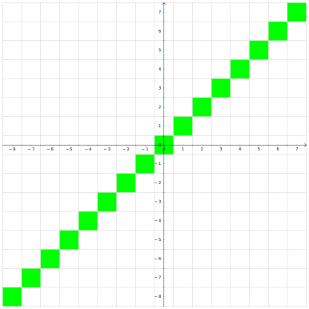
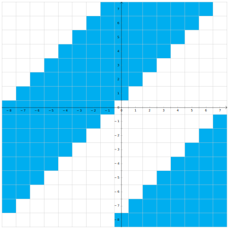

cpp-notes
Здесь собраны конспекты и ссылки на записи лекций курса по C++ студентам y2019 кафедры КТ в университете ИТМО.
Лектор - Иван Сорокин
Конспекты содержат баги, поэтому не стесняйтесь вносить правки.
Помимо лекций, конспекты включают в себя дополнения из конспектов @sorokin и @hazzus
Дополнительные лекции
Полезные ссылки:
Презентации и ссылки по материалу:
- Презентация про ассемблер
- Презентация про процессор и оптимизации
- Презентация про интрузивный список
- Презентация про shared_ptr
- Справочник по инструкциям x86, nasm документация
- Системные вызовы Linux
- Про страничную адресацию
- Презентация с ЭВМ про виртуальную память
Введение в ассемблер
Мотивация.
На кой мы изучаем ассемблер и работу процессора в курсе по C++? А вот тому есть сразу несколько причин:
- Когда мы будем говорить про языковые конструкции, мы обсудим не только то, как они работают, но ещё и почему именно так. Почему, например, лямбды без списка захвата приводятся к указателю на функцию, а со списком — нет? Без изучения основ архитектуры компьютера, мы не сможем ответить на этот вопрос, а с этим изучением просто не сможем представить себе, как может быть иначе.
- Есть более практический аспект: если вы что-то желаете ускорить, то высокоуровневые оптимизации (убрать ненужное действие, не считать что-то дважды) — это легко, а более низкоуровневые вообще нельзя сделать без знаний того, как внутри компьютер работает.
- Ещё основы архитектуры компьютера пригодятся при отладке. Если программа работает не так, то для понимания, где же именно ошибка, нам требуется понимать, что внутри процессора происходит.
- И наконец есть более философская полезность: если вы чем-то пользуетесь, то чем лучше вы разбираетесь, как оно работает, тем грамотнее можете этим пользоваться. То же самое с библиотеками, например (если библиотека что-то умеет, а вы не знаете об этом, вы начинаете городить костыли). Например, в x86 есть специальная инструкция с длинной арифметикой, и лучше бы писать такой код, чтобы компилятор догадался пользоваться ей.
Базовое представление об устройстве оперативной памяти.
В нашем курсе мы построим некоторую простую модель компьютера, а потом будет её изучать и уточнять по необходимости. В нашей простой модели оперативная память — массив чисел в диапазоне $[0:255]$. Вы умеете обращаться к этому массиву по индексу. Этот индекс называется адресом в памяти. Обращаться к конкретному биту вы не умеете, и притом даже не знаете, какой бит у числа в начале, а какой — в конце.
Как в этой модели исполняется программа? Следующим образом: у процессора есть регистр IP (instruction pointer), где записан адрес той инструкции, которую надо исполнять. При её исполнении значение в регистре увеличивается, тем самым начиная указывать на следующую инструкцию.
Ассемблер.
Помимо регистра IP, процессор имеет ещё 8 регистров, которые, в отличие от IP являются регистрами общего назначения (т.е. пользоваться ими вы можете как вам хочется). Эти регистры имеют название... Стоп, а зачем регистрам название? А потому что вам иногда надо прописывать процессорные инструкции руками, а запоминать последовательности байтов вы не хотите. И для этого были придуманы системы человеко-читаемых мнемоник, называемых ассемблером. При этом мнемоники различаются в зависимости от инструмента, которым вы пользуетесь, а не только в зависимости от системы. Впрочем, на одной архитектуре мнемоники в любом случае достаточно схожи.
Полезные инструменты.
Чтобы увидеть, во что ваш компилятор превращает ваш код, пишите g++ -S -masm=intel ..., после чего вам создадут .s файл с ассемблерными командами. Или можно использовать https://godbolt.org, куда можно запихнуть разные компиляторы, параметры оптимизации и прочее, и сразу увидеть результат (причём понятнее, чем в g++). Ещё, кстати, на https://godbolt.org можно навести на команду и узнать информацию по ней. Если нужно больше информации об ассемблерной инструкции — зайдите на https://felixcloutier.com/x86/.
Регистры.
Итак, помимо регистра IP, процессор имеет ещё 8 регистров, которые, в отличие от IP являются регистрами общего назначения (т.е. пользоваться ими вы можете как вам хочется). Эти регистры имеют название AX, CX, DX, BX, SP, BP, SI, DI. Каждый из них имеет 16 битную разрядность, а последние 4 ещё и некий особый смысл, к которому скоро перейдём. Помимо них также есть следующее:
- 8-битные версии регистров:
AL,AH,BL,BH,CL,CH,DL,DH,SPL,BPL,DIL,SIL. Для регистров*Xего старшие 8 бит называются*H, а младшие —*L. У оставшихся четырёх есть только младшие, получаемые дописываниемLк названию регистра. - 32-битные версии регистров (since 1985):
EAX,EBX, ...,EDI. (Приставка "E" обозначает "extended".) Оригинальные 16-битные регистры являются младшей частью расширенных. - 64-битные версии регистров (since 2003):
RAX,RBX, ...,RDI. (Приставка "R" обозначает "re-extended".) "Расширенные" 32-битные регистры являются младшей частью пере-расширенных. - Дополнительный набор регистров (x86-64):
R8,R9, ...,R15,R8D,R9D, ...,R15D,R8W,R9W, ...,R15W,R8B,R9B, ...,R15B. РегистрыR*имеют 64-битную ширину,R*D(от слова "dword") — младшие 32 бита соответствующего регистра,R*W(от слова "word") — младшие 16,R*B(от слова "byte") — младшие 8.

Команда mov.
mov dst, src является простым присваиванием dst = src. В качестве её аргументов могут выступать регистры, константы или даже места в памяти. По поводу последнего: если вы хотите положить в регистр AX число десять, это пишется так: mov AX, 10, а если значение в десятой ячейке памяти, то адрес берётся в квадратные скобки: mov AX, [10]. Также в квадратные скобки можно брать регистр.
Все эти разные типы аргументов команды mov на самом деле даже по-разному кодируются. Как пример, присваивание числа в регистр и регистра в регистр занимают 2 и 5 байтов соответственно:
89 C2 mov edx, eax ; EDX = EAX
B8 05 00 00 00 mov eax, 5 ; EAX = 5
Некоторые сочетания закодировать нельзя никак (например, mov [AX], [BX]). А если детальнее, то возможны вот такие комбинации регистров (reg) и чисел (imm):
mov reg, regmov reg, immmov reg, [reg]mov reg, [imm]mov [reg], regmov [imm], regmov [reg], immmov [imm], imm
Возникает вопрос. Регистр AX шестнадцати-битный, а адрес указывает на байт. Значит при выполнении команды mov нужно откуда-то взять ещё 8 бит. А вот читается не только тот адрес, который запросили, но ещё и следующий. Но какой из прочитанных байт старший, а какой — младший? В разных архитектурах возможны разные варианты.
- Если значения в меньшем адресе являются младшими разрядами, то это называется little-endian.
- Если значения в большем адресе являются младшими разрядами, то это называется big-endian.
Пример: Если в ячейке с номером 100 записан байт 0x6C, а с номером 101 — 0xAA, то в LE при чтении ячейки [100] мы получим число 0xAA6C, а в BE — 0x6CAA.
В x86 используется только little-endian.
Команды арифметики.
Базовые бинарные операции.
Процессор умеет выполнять базовые бинарные операции, которые в ассемблере называются add, sub, and, or, xor. Все они работают как комбинация операции и присваивания (т.е. соответственно +=, -=, &=, |=, ^=). Совершать операции можно только с числами одинакового размера (как и с mov). Для бинарных операций возможны такие комбинации регистров и чисел, как и для mov (см. выше).
Унарные операции.
Простые унарные операции inc, dec, not, neg также работают как операция с присваиванием (то есть соответственно, x = x + 1, x = x - 1, x = ~x, x = -x). Понятно, что в случае, когда мы оперируем с ячейкам памяти, надо явно уточнить, с числами какого размера производится операция. В ассемблере это пишется, например, так inc byte [addr]. byte подразумевает 8 бит. Вместо него можно написать word, dword или qword, подразумевая соответственно 2, 4 и 8 байтов.
Умножение и деление.
Умножение принимает один аргумент, умножая его на регистр AL/AX/EAX/RAX. Результат умножения занимает вдвое больше знаков, чем аргумент и записывается либо в регистр AX (для 8-битного), либо в пары регистров DX:AX, EDX:EAX, RDX:RAX (для 16-, 32- и 64-битного соответственно). DX — старшая половина разрядов.
Несложно заметить, что в отличие от сложения и вычитания, умножение и деление разное для знаковых и беззнаковых чисел. Поэтому существуют два разных умножения (mul и imul) и два разных деления (div и idiv). Первое для беззнаковых чисел, второе — для знаковых.
Деление работает схожим образом. Оно принимает делимое из AX/DX:AX/EDX:EAX/RDX:RAX, делитель как аргумент, а частное возвращает в регистр AL/AX/EAX/RAX. Но также деление возвращает остаток, и его оно возвращает в AH/DX/EDX/RDX.
Вопрос: как поделить друг на друга числа одинакового размера? Ну, нужно преобразовать, например, 16-битное число в 32-битное. В случае, если числа беззнаковые, надо просто обнулить DX (обычно регистр обнуляется при помощи xor DX, DX, потому что эта инструкция занимает памяти, нежели mov DX, 0). Те, кто знают, как работает дополнение до 2, также знают, что нужно делать в знаковом случае. Нужно заполнить DX знаковым битом AX. Для этого в x86 есть специальная инструкция cwd. Для того, чтобы сделать то же самое с EDX и RDX, есть инструкции cdq и cqo соответственно.
Хорошо, про деление мы знаем уже почти всё, кроме того, что будет, если мы поделим на 0. Или если результат в нужные регистры не поместится. Обе эти ситуации приводят к системным прерываниям, которые работают следующим образом: процессор имеет массив IDTR (Interrupt Descriptor Table Register), в котором для каждого типа прерывания сказано, что с ним делать. Этот массив при запуске подготавливает операционная система.
Сдвиги.
Ещё в x86 есть
SHL/SAL— сдвиг влевоSHR— логический сдвиг вправо (оставляет на пустых местах нули)SAR— арифметический сдвиг справа (на пустые места пихает знаковый бит).
В C++ для беззнаковых используется SHL и SHR, а для знаковых — SAL и SAR.
Оптимизации компилятора.
Давайте забьём в https://godbolt.org следующий код:
int foo(int a, int b) {
return a + b;
}
int bar(int a, int b) {
return a - b;
}
В результате увидим нечто неизвестное:
f(int, int):
lea EAX, [RDI+RSI]
ret
g(int, int):
mov EAX, EDI
sub EAX, ESI
ret
Несложно догадаться, что обе функции получают свои аргументы в регистрах EDI и ESI, а возвращают — в EAX. Но непонятно, что такое LEA.
Команда LEA.
LEA расшифровывается как "load effective address" и вторым её аргументом всегда является адрес памяти. Именно этот адрес присваивается в первый аргумент инструкции. Здесь она используется как альтернатива ADD+MOV.
Как несложно заметить, в качестве адреса можно писать сумму значений в регистрах. А что ещё можно? А вот что: [reg+i*reg+const] где i равно 1, 2, 4 или 8.
Еще LEA не трогает флаги, в отличие от ADD. Что такое флаги — смотри дальше. Детальнее про LEA можно почитать здесь (первые 2 ответа).
Как избегается оптимизируется деление:
Деление занимает много больше тактов, чем другие арифметические операции, а во время его вычисления весь конвейер стоит. Компиляторы стараются избегать операции деления, если это возможно. Например, мы знаем, что беззнаковое деление или умножение на $2^k$ можно легко заменить на сдвиг на $k$. Поэтому следующий код на C++:
unsigned foo(unsigned a) // беззнаковый тип
{
return a / 2;
}
Может быть оптимизирован компилятором до
foo(unsigned int):
mov EAX, EDI
shr EAX
ret
А вот просто сдвинуть знаковое число вместо деления нельзя, потому что у этих двух операций округления в разные стороны. Поэтому тот же код, но с сигнатурой int foo(int a) скомпилируется так:
foo(int):
mov EAX, EDI
shr EAX, 31 ; Оставляем от числа только старший (знаковый) бит.
add EAX, EDI ; Если число отрицательное, то добавляем 1 (чтобы при a = -1 всё работало).
sar EAX ; Арифметический сдвиг вправо на 1 бит.
ret
А что будет с беззнаковым делением на 3? А тут есть другие хаки:
foo(unsigned int):
mov EAX, EDI
mov EDX, 2863311531 ; 0xAAAAAAAB или 2^33/3
imul RDX
shr RAX, 33
ret
Почему это лучше? Как мы уже обсудили, деление дорогое, а константу можем посчитать при компиляции, получая выигрыш в эффективности.
Почему это работает? Потому что при арифметике с переполнением деление на константу можно выполнить через умножение: $$\frac a3=\frac{a\cdot(2^{33}/3)}{2^{33}} = (a\cdot2863311531) \gg 33$$ А в общем случае компиляторы пытаются подобрать $n$ (равное тут $33$), чтобы такая замена работала как требуется. Больше подобного рода трюков можно почитать в книжке Hacker's Delight.
Control-flow.
Мы уже понимаем, что компилятор делает с арифметическими выражениями, а значит линейный код мы уже можем перевести на ассемблер руками. А вот ветвления и циклы — пока нет нет. Как они идейно работают? У процессора есть команды, которые называются branch’ами. Самая простая из них — jmp (своего рода goto). Её аргументом является число, которое нужно прибавить к IP, чтобы перейти на адрес новой инструкции. В ассемблере, однако, это вместо этого пишется метка, по которой и осуществляется переход.
.loop: ; метка
inc AX
jmp .loop
Помимо jmp есть conditional branch (то есть переход, если выполнено какое-то условие). Осуществляются они комбинацией команды cmp и какой-то из команд je, jg, jl или подобной. Первая команда (пока непонятным нам образом) сравнивает два регистра, а потом вторая получает результат этого сравнения и совершает переход только в определённом случае. В таблице ниже перечислены условия
для каждой из команд:
| Команда | Эквивалент | Расшифровка |
|---|---|---|
je | left == right | jump if equal |
jg | (signed)left > (signed)right | jump if greater |
jl | (signed)left < (signed)right | jump if less |
ja | (unsigned)left > (unsigned)right | jump if above |
jb | (unsigned)left < (unsigned)right | jump if below |
jne | left != right | jump if not equal |
jng | (signed)left <= (signed)right | jump if not greater |
jnl | (signed)left >= (signed)right | jump if not less |
jna | (unsigned)left <= (unsigned)right | jump if not above |
jnb | (unsigned)left >= (unsigned)right | jump if not below |
Регистры флагов (FLAGS Registers).
Теперь давайте всё же поговорим, как работает cmp? Для этого нам нужно поговорить о такой штуке как регистр флагов. Он содержит, собственно, битовые флаги. Из их большого набора нас интересуют
- CF — carry flag.
- ZF — zero flag.
- SF — sign flag.
- OF — overflow flag.
В процессе своей работы разные инструкции устанавливают различные флаги (какие-то инструкции на определённые флаги не влияют, у каких-то инструкций эти флаги значат свой, поэтому читайте документацию). А мы рассмотрим, как
с ними работают инструкции add и sub. Они выставляют:
- ZF — если результат равен 0.
- SF — если результат отрицательный.
- CF — если произошёл перенос в сложении/заимствование в вычитании беззнаковых чисел.
- OF — если знаковая операция вызвала переполнение.
С флагами можно взаимодействовать не только при помощи уже обсуждённых инструкций условного перехода, но и, например, при помощи команды adc, которая выполняет сложение, но также добавляет к результату CF.
Или есть ещё команды перехода, основанные на флагах:
jz— jump if ZF.js— jump if SF.jc— jump if CF.jo— jump if OF.jnz— jump if not ZF.jns— jump if not SF.jnc— jump if not CF.jno— jump if not OF.
Как работают арифметические условные переходы.
cmp устанавливает флаги также, как это делаем вычитание. Отсюда посмотрим, какие флаги проверяются какими условными переходами.
Про je, jb и ja всё понятно. je выполняется при ZF, jb — при CF, ja — если ZF и CF оба ложны. А что с jl и jg, сейчас обсудим.
Давайте рассмотрим числа из 3 бит простоты и наглядности ради, и пометим цветом те места, где CMP задаёт определённые флаги. ZF — очевидно.

Теперь посмотрим на SF. Если мы вычитаем из маленького числа число чуть побольше, то результат будет отрицательным. Но если мы, например, из $-8$ вычитаем что-то, то происходит переполнение, и результат получается положительным. Аналогично если мы из положительного числа вычитаем большое отрицательное, может произойти переполнение в обратную сторону, и результат станет отрицательным. Учитывая это, имеем, что SF задан в этой области:

А ещё мы уже обсудили переполнение, и можем сказать, где задан OF:

| Ветвление | Условие |
|---|---|
je | ZF |
jg | (SF == OF) && !ZF |
jl | SF != OF |
ja | !CF && !ZF |
jb | CF |
Кстати, несмотря на то, что в ассемблере есть je и jz, по сути они делают одно и то же и даже одинаковым набором байт обозначаются (поэтому если вы будете ассемблировать-дизассемблировать код, учтите, что в коде ASM je может замениться на jz или наоборот).
Помимо cmp есть ещё одна инструкция, которая не делает ничего, кроме расстановки флагов — test. Она делает побитовое "И" аргументам и ставит:
- ZF, если результат равен нулю.
- SF, если результат отрицательный.
- CF, никогда (всегда ставится в
false). - OF, никогда (всегда ставится в
false).
Пример:
test AX, AX ; проверка на 0
jz label
Иногда ни test, ни cmp не нужны, потому что многие инструкции ставят флаги, и иногда так, как вам нужно.
Пример:
.loop:
mov DX, AX
add AX, BX
mov BX, DX
dec CX
jnz .loop
Работа с функциями.
Основы работы со стеком.
Вопрос на засыпку: как реализовать рекурсию? Да и в принципе, вызов функций? Мы выходим только из той функции, в которую зашли последней. Это, барабанная дробь, стек. Стек — это кусочек памяти, его вершина имеет меньший адрес, а дно — больший. На вершину стека указывает регистр SP, название которого так и расшифровывается — stack pointer.
Процессор предоставляет две базовые функции работы со стеком — push и pop. Несложно догадаться, что push src равносильно
sub RSP, 8
mov [RSP], src
А pop dst —
mov dst, [RSP]
add RSP, 8
Ещё есть две "более высокоуровневые" инструкции — call и ret. Первая принимает своим единственным аргументом метку (адрес функции, которую нужно вызвать), кладёт на стек адрес следующей инструкции и делает переход по метке. Вторая берёт со стека адрес и переходит по нему. Несложно заметить, что именно так функции и работают. Честно написать, чему эти инструкции равносильны, невозможно, потому что нельзя лёгким образом получить доступ к IP.
Передача параметров в функцию.
Быстрее и проще всего положить параметры в регистры (например, EDI и ESI). Но регистров у нас конечное число, поэтому если параметров много, то может не хватить. В таком случае параметры можно передавать через стек. И чтобы получить их, мы делаем mov RAX, [RSP+8] или mov RAX [RSP+16]. Но после возвращения из функции, у нас параметры всё ещё на стеке, надо, чтобы кто-то его почистил. Можем
сделать так, чтобы вызывающая функция почистила стек, прибавляя константу к RSP каждый раз после вызова. Но не лучше ли запихнуть это в вызываемую функцию? Ну, идейно да, но надо куда-то сохранить возвращаемое значение... В x86 вообще есть ret n, который берёт значение, сдвигает RSP на n и возвращается. Это называется «вызываемая функция чистит стек». Осталось понять, что делать с локальными переменными? А, их можно положить выше на стек после адреса возврата.
ABI
Хорошо, а кто определяет, как передавать параметры? А этим занимается ABI - application binary interface. ABI содержит вообще всю информацию, необходимую для взаимодействия, например, вас с операционной системой.
- Выравнивание и размеры типов данных.
- Соглашение о передаче параметров, о том, кто чистит стек, о том, в каком порядке параметры на стек кладутся.
- Как выполняются системные вызовы.
Всё это — ABI. Обычно он привязан к ОС.
Windows из данного правила является исключением: в нём есть целая табличка о том, какой из миллиона (cdecl, stdcall, thiscall, fastcall, ...) способов передавать параметры, что делает. И можно в коде прямо на функции явно написать, какой способ использовать. Даже свой собственный можете сделать.
А кто, кстати, обычно чистит стек? Вызывающая функция. Почему так, это же, вроде как, неудобно? Потому что существуют variadic-функции. Когда вы делаете printf, компилятор просто пихает параметры на стек, а вызываемая функция не знает, сколько их. Поэтому чистит вызывающая, которая знает.
Системные вызовы.
syscall - интерфейс взаимодействия процесса программы с ядром ОС. Например, это чтение/запись в файла/терминала, завершение программы с кодом ошибки и т.д.
Стековый фрейм.
Можно заметить, что под GCC код
int foo(char const*);
int bar()
{
char arr[40];
return foo(arr) + 1;
}
с флагами -O2 -fno-omit-frame-pointer компилируется во что-то такое:
bar():
push RBP
mov RBP, RSP
sub RSP, 48
lea RDI, [RBP-48]
call foo(char const*)
mov RSP, RBP
pop RBP
ret
Нам интересна обёртка push RBP, mov RBP, RSP, ..., pop RBP. Зачем это? Посмотрим, что делает этот код. Он сохраняет старое значение RBP на стек. А при вызове рекурсивной функции в RBP будет RSP. То есть во внутренней функции мы запихаем на стек адрес первой. И так далее. То есть на стеке есть односвязный список значений RBP от нового к старому. Поэтому пойдя по RBP, можем напечатать весь стек (это называется unwind — раскрутка стека). Буквально так очень давно работали отладчики. В наше время этот режим менее актуален, поэтому генерировать эти инструкции избыточно. Вместо этого компиляторы вместе с кодом генерируют отладочную информацию как раз о том, какие команды каким строкам кода соответствуют, как раскручивать стек и подобное. gcc генерирует стековый фрейм только с некоторым ключом. MSVC генерирует его по умолчанию. Возможно, это потому, что рандомная опубликованная exe'шка может в отладочных данных содержать секретики. Их вы публиковать не хотите, поэтому только стековые фреймы. К чему это всё для нас? Если вы пользуетесь какими-то инструментами, которые снимают стек (отладчик или профилировщик), убедитесь, что у
вас есть отладочные символы, и отлаживаете вы тоже согласно им. Либо и то, и другое по стековому фрейму.
Выделение памяти:
void f(char const*);
void g()
{
char arr[113];
f(arr);
}
Компилируется в:
g():
sub RSP, 136
mov RDI, RSP
call f(char const*)
add RSP, 136
ret
К локальным переменным обращаемся через RSP, лежат на стеке. Размер стека - переменная на уровне операционной системы (вроде).
Обратим внимание на то, что если изменить размер массива на 112, то этот код скомпилируется в:
g():
sub RSP, 120
mov RDI, RSP
call f(char const*)
add RSP, 120
ret
Почему 136 изменилось на 120? Этот эффект называется выравниванием (alignment).
В качестве основной единицы работы с памятью используется машинное слово, размер которого обычно составляет несколько байт. Так называемый unaligned access сложен в реализации на аппаратном уровне, поэтому обращения по произвольному адресу либо не поддерживаются (и вызывают исключение процессора), либо поддерживаются, но работают медленно. Обычно компилятор выравнивает данные по границам машинных слов, в нашем случае 8 + 16 * k.
ОС, процессор и память
Прерывания
Почему программа с вечным циклом не повесит нам весь компьютер, даже если у нас всего одно ядро? Как ОС работает с устройствами? Всё это завязано на прерываниях.
Изначально прерывания были созданы, чтобы чтобы устройства, которые, например, читают данные, сами оповещали процессор о том, что они дочитали, вместо того, чтобы он постоянно их сам спрашивал. Есть два способа взаимодействия с устройствами:
- Polling — процессор сам опрашивает устройства, когда считает нужным.
- Interrupt (прерывание) — устройство само говорит об изменении, процессор вызывает обработчик прерываний.
С точки зрения программы это выглядит так: ОС её прерывает, выполняет что-то, после чего возобновляет выполнение там, где прервала. И сама заботится о том, чтобы программа не видела изменения регистров, например. То есть
- Значения регистров текущего процесса дампаются в оперативную память.
- Подгружаются значения регистров другого процесса и исполнение передаётся ему.
Такая схема называется вытесняющей многозадачностью.
Если вам хочется посмотреть на прерывания глазками, вам нужен файл /proc/interrupts. Там вы можете посмотреть все типы прерываний с процессами и описаниями. Например, при нажатии на кнопку и отжатии кнопки на клавиатуре посылается специальное прерывание, с тачпадом то же самое и т.п. Сейчас нас интересуют два типа:
- Local timer interrupt — прерывания по таймеру, своё у каждого ядра ЦП. ОС заводит таймер, когда таймер срабатывает, провоцируется прерывание, и ОС получает управление в обработчике прерываний. На самом деле, всё сложнее, потому что постоянно работающие таймеры это неэкономно, поэтому он, например, отключается, если на ядре ничего не исполняется.
- Rescheduling interrupts — прерывания, использующиеся для перепланировки (миграции) процесса на другое ядро в целях распределения нагрузки. Реализованы с помощью IPI.
Работа программы с памятью.
Что будет, если мы возьмём рандомное число, кастанём его в char*, после чего запишем по нему букву. Будет SEGFAULT. Что это такое вообще? Чтобы ответить на этот вопрос, надо понять, как в одной памяти живут программы. В процессоре есть механизм, который позволяет операционной системе делать две вещи:
- Hardware abstraction — программа не знает, что с точки зрения железа происходит. Например, мышка может быть подключена по-разному, но программе всё равно. В случае с памятью программа не знает, что происходит с её памятью, с её точки зрения вся память — её память.
- Isolation process — программа не может повлиять на другие программы (записать в их память). Если вы это специально не захотите, конечно.
Как конкретно это работает? В нашей прошлой модели память — пронумерованные ячейки. Мы будем называть физической памятью то, что у нас в жизни в оперативке (какие-то квадраты с каими-то открытиями/закрытиями строк). Этот уровень недоступен даже ядру ОС, максимум можно догадываться, что там. Вместо этого вы обращаетесь к памяти по другим адресам (виртуальная память), которые процессором преобразуются (транслируются) в физический адрес, по которому и обращается. У вас нет способов этого избежать, максимум (если вы в ядре) — слабо повлиять. И суть в том, что пересчёт разный для разных программ, поэтому в разных программах одно и то же число адреса — разные ячейки физ. памяти. Трансляция адресов реализуется в специальном блоке процессора, называемом MMU.
Дальше будет рассматривается 32-битная система, а потом будет сказано, чем 64-битная отличается.
Страничная адресация
Способ организации виртуальной памяти, при котором виртуальные адреса отображаются на физические постранично (обычно 1 страница = 4 КB). Процессор может настроить механизм так, чтобы произвольная страница виртуальной памяти транслировалась в произвольную физической. При этом память процесса может лежать в физической памяти в любом порядке:

В принципе, ОС ничего не мешает сделать две страницы виртуальной памяти и направить их в одну страницу физической. Работать это будет так, как вы думаете. Если делать это из разных программ, они смогут общаться. Ещё мы можем запрещать какие-то страницы (помечая их как отсутствующая). То есть считается, что эта страница никуда не транслируется. Именно поэтому и происходят SEGFAULT'ы. Соответственно, процессор даёт эту информацию ОС, а она даёт программе ошибку.
В 32-битных системах система страничной адресации основана на вот таких штуках:

Сначала адрес, затем разные флаги. Например, R — read only или нет. W — write through — про кеширование, прочие флаги содержат другие данные для ОС. В 64-битных системах имеем то же самое, но адрес побольше, и сама структура занимает 64 бита, а не 32.
Если подойти к хранению таких структур наивно, то получится набор страниц, для каждой храним 32-битное число. То есть имеем массив таких структурок. Это работает, но имеет одну проблему: в 32-битном режиме имеем 4ГБ памяти, то есть нужно 4МБ памяти на процесс. Это слишком много, особенно учитывая то, что в древности 4МБ — это типовой размер был. А в наше время в 64-битном режиме на одну программу понадобится 32ПБ. Поэтому заметили, что бо́льшая часть программ используют меньше 4ГБ памяти. А значит бо́льшая часть страниц недоступна. Поэтому давайте вместо 1048576 элементов хранить табличку 1024×1024. То есть вместо массива на много элементов храним массив (каталог страниц) размера 1024 из указателей на массивы размерами по 1024 (таблицы страниц). И тогда мы можем сразу в каталоге пометить, что его элемент никуда не ссылается.
Это выглядит как-то так:

CR3 с картинки — специальный регистр, где хранится корень дерева. Подробнее можно прочитать тут.
Механизм адресации на уровне процессора:
Пример адреса: Virtual address - 0x123456789A
Младшие 12 бит виртуального адреса: смещение внутри страницы. Следующие 10 бит - индекс в таблице страниц, старшие 10 бит - индекс в каталоге страниц.
typedef uint32_t page_table_element;
typedef uint32_t virtual_address;
struct page_directory
{
uint32_t translate(virtual_address);
private:
page_table_element data[1024];
};
Альтернатива известна лишь одна: хеш-таблица, но она плохо взаимодействует с кэшем. Использовалась в PowerPC.
Страничная адресация на 64-битной системе.
Всё выше было про 32-битную архитектуру. На 64-битной
- Виртуальный адрес сильно больше (64 бита, собственно).
- Больше физической памяти.
- Размер «структурки» также удваивается, а значит структурок в одном массиве теперь 512, а не 1024. То есть адрес мы уже делим на кусочки по 9 бит, а не по 10.
Но так даже с тремя уровнями вместо двух остаётся куча лишних байт (на адрес расходуется 39 бит, куда девать остальные — не понятно). В таком случае считается, что «лишние» биты должны совпадать со старшим «не-лишним». Более современные процессоры поддерживают и 4 уровня в дереве (т.е. теперь адрес эффективно 48-битный), а новейшие Intel'ы — 5 уровней, что позволяет адресовать 128ПБ. Пример с тремя уровнями выглядит так:

Ещё связанные с этой темой такие технологии как TLB и Huge Pages, но это смотрите в следующих сериях следующем файле.
Нестандартные использования страничной адресации.
- Во-первых, есть memory-mapped файлы. Это просьба операционной системе загрузить файл с диска в ваше адресное пространство. Для программы при этом создаётся иллюзия, что она напрямую обращается в этот файл.
- В некотором смысле антиподом memory-mapped файлов являются файлы подкачки (swap). Ситуация тут обратная — есть вы хотите сожрать больше памяти, чем вам могут дать, то лишнюю память выгружают на диск, а при использовании подчитывают.
- А ещё мы уже обсудили, что можно направить виртуальные адреса у двух разных программ в одну физическую страницу, чтобы реализовать базовое взаимодействие между ними. Это называется «разделяемой памятью». (Из более высокоуровневых технологий есть такая штука как PIPE.)
Более точная (и оптимизированная) модель работы процессора.
Optimize for data first, then code. Memory access is probably going to be your biggest bottleneck.
Нам надо знать, как оптимизировать программы, а для этого надо понимать, какие операции в процессоре дешёвые, а какие — дороги. Скорее всего, наш код, если переписать его в плюсы, а потом скомпилировать, заработает сильно быстрее.
Мы рассмотрим несколько примеров, которые в нашу текущую модель не укладываются вообще, разберёмся в них и уточним модель. При этом мы не стремимся получить максимальную детализацию. Во-первых, если у нас есть эффект, дающий нам $0.01%$ прироста скорости, он нам не очень критичен. Во-вторых, чтобы анализировать и делать выводы, нам придётся нашу модель сделать проще. Физики вон, упрощают реальный мир, чтобы делать свои предсказания.
Сначала разберёмся, о каких процессорах мы будем говорить. Ответ — в каком-то смысле обо всех современных (последние 17 лет). Причём вне зависимости от архитектуры. И это не заговор разработчиков, просто в течение 40 лет все думали, как процессоры сделать быстрее и энергоэффективнее, и то, что оптимизации поддавалось, то оптимизировали. А то, что поддавалось оптимизации сложно, то оставалось медленным. Например, операция деления занимает много больше времени, чем, скажем, сложение. И это не потому, что разработчики процессоров дураки или лентяи, а потому что есть внутренняя сложность.
Работа с памятью.
Кэш-память.
Одинаково ли по времени будут работать следующие два кода?
for (i = 0; i < N; i++) for (i = 0; i < N; i++)
for (j = 0; j < N; j++) for (j = 0; j < N; j++)
a[i][j] = 0; a[j][i] = 0
А вот вообще нет. Разница во времени работы будет весьма ощутимой по вине процессорного кэша. Первый цикл обращается к памяти последовательно, а второй "скачет" по ней. Поэтому первый цикл как подгружает кэш-линию, так к ней и обращается, а второй — подгружает-выгружает. С ростом N видна разница между уровнями кэша на графике времени обработки одного элемента:

Небольшие пики - скачки из-за попадания в один бакет (заметно на степенях двойки), сильное изменение времени работы происходит, когда данные перестают попадать в кэш какого-то уровня.
Кэш реализован через хэш-таблицы (дискретного размера), где ключ - адрес в памяти. Линии кэша обычно занимают 64 байта и разделены на группы (buckets), размеры которых называются ассоциативностью кэша.
Зачем существует кэш вообще? Как мы знаем, согласно закону Мура, мощность процессоров от времени зависит экспоненциально. Так вот памяти — тоже. Но скорость памяти растёт сильно медленнее (сейчас процессор делает по 4 простые операции за такт, а обращение к памяти занимает 200+).

Это никуда вообще не годится, поэтому на процессорах появились кэши. Занимают они чуть ли не половину кристалла, и так было что в пентиумах, что во всех современных процессорах. Типовое время обращения к памяти — 4, 12, 36 и 230 тактов для L1, L2, L3 и RAM соответственно. Поэтому сначала надо оптимизировать данные, а уже потом код.
Подробнее про кэш можно прочитать в конспектах по ЭВМ или в других конспектах по ЭВМ.
Префетчинг.
Prefetching — это метод, при помощи которого заранее определяется, к каким областям памяти в будущем пойдут обращения. Если много кэш-промахов, запросы заранее подгрузить в кэш очень полезны. Кстати, работает это на уровне кэш-подсистемы процессора, а не компилятора/ОС.
Осуществляется префетчинг, например, при помощи улавливания последовательных обращений к памяти (если вы сначала обращаетесь к первой ячейке, а потом — ко второй, то можно заранее начать обращение к третьей, вдруг вы туда обратитесь). В современных процессорах есть аж целых 4 разных префетчера: два для L1 и по одному для L2 и L3. Идейно префетчинг позволяет тратить ресурсы процессора на то, чтобы ускорять память, что полезно всё по той же причине — память медленнее.
Промежуточные выводы (best practices) касательно памяти.
- Иногда выгоднее будет что-то пересчитать, чем хранить всё в памяти (процессор быстрее же).
- Если вы знаете, в каком порядке вы будете обращаться к данным, важно правильно их положить (тоже последовательно).
- Хранить «горячие» и «холодные» данные нужно в разных местах. «Горячие» — это которые вам часто нужны, «холодные» — которые не очень. Почему в разных? Потому что иначе у вас в кэше будут лежать и «горячие», и «холодные» данные, вместо того, чтобы забить его «горячими» полностью.
Пример: Как правильно реализовать хранение хэш-таблицы с открытой адресацией. Два варианта:

А вот что лучше, зависит от hit rate'а нашей таблицы:
- Если мы часто находим значения, мы смотрим на ключ, и берём значение, которое рядом с ним, удобно.
- А если мы редко их находим, то мы ведь долго бежим чисто по ключам, а значит нам выгоднее будет сохранить их вместе.
Работа с указателями.
Indirection.
Indirection (непрямое обращение к памяти) — ситуация, в которой вы обращаетесь к чему-то по рандомному указателю. Понятно, что непрямых обращений к памяти сто́ит избегать, потому что это, здравствуйте, промах по кэшу. Вместо обращения по указателю можно просто заменить этот указатель на сами данные. С другой же стороны, если у вас указатель на «холодные» данные есть в «горячих», то тупо вставлять эти данные внутрь сомнительно — как уже было сказано «горячие» и «холодные» надо бы хранить в разных местах.
Указатели в структурах данных.
Вы, возможно, не знали, но ваша программа процентов на 80 состоит из них. Так, std::vector — это три указателя, std::list — два указателя и одно число размером с указатель, std::set и std::map — один указатель и одно число. При этом указатели на x86-64 здоровые, 64 бита занимают. А ведь вам обычно не нужны 64-битные указатели, вам хватит и 32 бит, а значит памяти они занимают вдвое больше, чем могли бы. Поэтому Intel сделали ABI x32. Для ОС это выглядит как 64-битная программа, но внутри она имеет 32-битные указатели. Во всём остальном она верблюд x86-64. Конвенции вызова там точно такие же, вещественная арифметика — тоже, количество регистров — 15 целочисленных и 16 вещественных. Этот ABI не очень прижился, что довольно грустно.
Но что интересно, на целочисленных тестах x32 было на 5–8% быстрее, чем x86-64 (просто из-за того, что данных меньше), на floating-point данных разницы нет, а на одном специфичном бенчмарке (там просто куча указателей) ускорение достигало 40%. А в сравнении с x86, ускорение было соответственно в 7–10% и 5–11% для целых и floating-point тестах, а специфичный бенчмарк был с 64-битной арифметикой (и тоже имел 40% ускорение).
Translation lookaside buffer.
Давайте вспомним про виртуальную память. Имея нашу древовидную структуру, на каждое обращение к памяти в программе нам придётся делать 4 (или 5, если уровней 4) обращения в память внутри процессора (чтобы пройтись по дереву). Это треш, поэтому результат трансляции виртуальной памяти в физическую также кэшируется. Буфер, в который кэшируется, называется TLB (translation lookaside buffer). А это значит, что если наша программа обращается к реально большому объёму памяти, то мы платим ещё и за трансляцию, а не только за этот факт сам по себе.
Huge pages.
Что ещё может улучшить неприятную ситуацию с трансляцией? Страницы по 4 KB достаточно маленькие, и заниматься администрированием их довольно накладно. Поэтому в процессоре есть механизм Huge pages, который позволяет нам на промежуточном уровнем дерева установить специальный бит, который говорит, что этот промежуточный элемент хранит не ссылку на следующий, а сразу страницу данных.

И тогда страница будет иметь размер 2 MB, если брать предпоследний уровень или вообще 1 GB, если третий снизу. Это экономит и время трансляции, и место в TLB.
Но использовать Huge pages тяжело, так как с ними тяжело делать swap (подкачку страниц). Например, в Windows требуются специальные права, чтобы выделять не-swappable память.
Выделение памяти ядром.
Как мы помним, выделение памяти из ядра осуществляется при помощи mmap. Можно заметить интересный эффект: если мы просто делаем выделение памяти кучу раз, это будет относительно быстро, а когда мы начнём к выделенной памяти обращаться, ты мы зависнем надолго. Почему так? Точнее на вопрос «почему» ответ простой — потому что ОС даёт нам память только тогда, когда мы её используем, а вот «зачем» — интересный вопрос. Дело в том, что обычно у нас нет свободной оперативной памяти, она вся либо отдана другим программам, либо используется как дисковый кэш. Поэтому когда кто-то просит память, вам придётся сбрасывать дисковый кэш, либо выгружать кого-то в swap-файлы. А если вдруг ваша программа будет использовать выделенную память как-то потом (или не будет вообще), то давать ей память сразу невыгодно, поэтому ОС даёт её при обращении и маленькими кусочками (ведь используете вы маленькими кусочками, а mmap выделяет сразу кучу памяти). Кстати, в mmap есть специальный флаг (MAP_POPULATE), который заставляет выделять память сразу.
При этом, если сделать так, то работать это будет быстрее, чем если выделить память обычным образом, а потом к ней пообращаться, потому что с флагом не будет происходить множество переходов между userspace'ос и ОС при каждом обращении. Хорошо, а знаете ли вы, что в mmap больше всего времени занимает обнуление выделенной страницы. Зачем? А вдруг там кто-то криптографию оставил. Кто-то, кого вы только что убили, например. Но вообще под это тоже есть специальный флажок MAP_UNINITIALIZED (но только для анонимных страниц), который был создан специально для миниатюрных устройств. Работает MAP_UNINITIALIZED, правда, только в том случае, если ОС была собрана специальным образом. Если, кстати, делать mmap без флага MAP_POPULATE, то ещё больше времени, чем на зануление, будет тратиться на передачу обращения между ОС и userspace'ом.
Конвейер (Pipelining).
Ну тут опять всё как было на ЭВМ: разбили выполнение команды на несколько стадий, теперь можем повысить частоту, так как каждая стадия стала проще. Выигрыш в том, что можем давать новые данные на каждом такте.
Branch prediction.
Спекулятивное исполнение: условные переходы дорогие, поэтому мы предсказываем переход, выполняем, а если не угадали, то откатываемя. В общем, ничего нового. Также это называется branch prediction. Можем как выиграть, так и проиграть от этого. Например, в некоторых программах на отсортированном массиве предсказание может улучшить время работы в несколько раз.
Касательно предсказаний, процессор умеет предсказывать много различных паттернов, поэтому искусственно составить что-то, что будет сложно предсказываться, довольно проблемно. Но это не единственное, что процессор умеет. Давайте рассмотрим генератор случайных битов, который называется линейный регистр сдвига с обратной связью. (Раз биты случайные, то предсказываться должно просто отвратительно.) Он работает примерно так:
unsigned lfsr = 0xace1;
for (unsigned i = 0; i != 1000000000; i++)
{
unsigned lsb = lfsr & 1;
lfsr >>= 1;
if (lsb)
lfsr ^= 0xb400;
}
Видим здесь условный переход. Попытается его поправить двумя путями. Раз:
unsigned lfsr = 0xace1;
for (unsigned i = 0; i != 1000000000; i++)
{
unsigned lsb = lfsr & 1;
lfsr >>= 1;
lfsr ^= 0xb400 * lsb;
}
Два:
unsigned lfsr = 0xace1;
for (unsigned i = 0; i != 1000000000; i++)
{
unsigned lsb = lfsr & 1;
lfsr >>= 1;
lfsr ^= 0xb400 & -lsb;
}
Если сравнить время работы этих программ, то они будут отличаться так, как ожидается (первая самая долгая, третья — самая быстрая), но ненамного. Но вот если проанализировать программу какими-нибудь прошаренными средствами, то можно заметить, что неверные предсказания дают нам $0.01%$ от всех предсказаний. То есть проблема не в условных переходах. А знаете, почему?
А потому что в процессоре есть такие инструкции как cmovne. Если скомпилировать первый вариант с оптимизациями, получим комбинацию из test и cmovne. Как несложно догадаться, последняя инструкция совершает присваивание в том случае, если не задан флаг ZF. Без условного перехода.
Хорошо, но всё же что будет, если правда сделать условный переход? Для этого компилятору надо дать ключи -fno-if-conversion -fno-if-conversion2, которые заставят его не использовать cmovne, и вот тогда уже всё замедлится намного сильнее.
Спекулятивное взаимодействие с памятью.
Как мы знаем, компилятор (да и процессор тоже) любит переставлять инструкции между собой. Поэтому полезно писать программу так, чтобы уровень зависимостей команд был как можно меньше. Это может также пытаться делать компилятор например:
int f(int a, int b, int c, int d)
{
return a * b * c * d;
}
может скомпилиться в следующий код, чтоб уменьшить количество зависимых умножений: (a * b) * (c * d)
imul edi, esi
imul edx, ecx
imul edx, edi
mov eax, edx
ret
То же самое очень хочется делать с обращениями к памяти. По-хорошему, нельзя читать до того, как закончат выполняться записи, потому что в случае, если мы читаем то, что писали, хочется прочитать то, что записано, а не что-то левое. Но процессор выполняет операции спекулятивно, в надежде на отсутствие коллизий. Поэтому код:
void count_huffman_weights(char const* src, size_t size)
{
uint32_t count[256] = {0};
for (size_t i = 0; i != size; ++i)
++count[src[i]];
}
Будет работать тем быстрее, чем более разные данные в src (если данные одинаковые, процессор спекулятивно запускает несколько инкрементов за раз, потом понимает, что они инкрементят одно и то же и откатывает все, кроме одного; в результате не только простаивает superscalar, но и происходят откаты туда-обратно). Вот как выглядит граф зависимостей в этом коде:

Чтобы это пофиксить, можем сделать 8 разных массивов-счетчиков. Такая реализация используется в библиотеке Zstandart:
void count_huffman_weights_improved(char const* src, size_t size)
{
uint32_t count[8][256] = {};
size = size / 8 * 8;
for (size_t i = 0; i < size;)
{
++count[0][src[i++]]; ++count[1][src[i++]];
++count[2][src[i++]]; ++count[3][src[i++]];
++count[4][src[i++]]; ++count[5][src[i++]];
++count[6][src[i++]]; ++count[7][src[i++]];
}
}
Полезные книжки по теме.
- J. Shen, M. Lipasti — Modern Processor Design: Fundamentals of Superscalar Processors.
- J. Hennessy, D. Patterson — Computer Architecture: A Quantitative Approach.
Они сильно выходят за рамки нашего курса, но тем не менее интересны.
Синтаксическое пересечение C и C++
Мы, наконец-то начинаем говорить про C++. Начать, разумеется, надо с базовых вещей, которые появились в ещё C. И вообще текущая тема может быть по праву названа как введением в C, так и введением в C++.
Однако C и C++ — это разные языки:
- Во-первых, их разрабатывают разные люди с разными целями.
- Во-вторых, они имеют разные компиляторы, несмотря на то, что обычно компании, имеющие компиляторы C++ также имеют компилятор C. Эти компиляторы имеют общий код, но они всё же не
одинаковы — этот самый общий код также используется и для Go, и для D, и для Ada... Исключением из этого правила является Clang, где просто
if'ами различаются C и C++. Правда, там ещё и Objective-C и нечто ещё... - В-третьих, стили программирования на C и C++ кардинально отличаются, если вы пишете на них одинаково, вы дурачок.
- В-четвёртых, C не является подмножеством C++, случайная программа на C вообще не факт что будет корректна в C++. Правда, обычно придётся менять её не очень сильно. Примером такого отличия является код вида
a ? b : c = 42. В C — это(a ? b : c) = 42, а в C++ —a ? b : (c = 42).
Так вот, у нас всё будет обсуждаться в терминах C++: в местах отличий мы не будем обсуждать оба языка.
Поправка по курсу. Считается, что мы знаем, что такое переменная, как вообще всё живётся, а обсуждать будет то, о чём либо редко говорят, либо о том, что специфично для C/C++.
Типы данных.
Целочисленные.
Целочисленных типов в языке C++ девять:
char.unsigned char.signed char.[signed] short [int].unsigned short [int].[signed] intили простоsigned.unsigned [int].[signed] long [int].unsigned long [int].[signed] long long [int].unsigned long long [int].
Квадратными скобками помечены слова, которые можно просто опустить в объявлении типа.
Стандарт не приписывает конкретных размеров типа, гарантирует только, что не меньше некоторого размера. Размеры типов прописаны в ABI архитектуры.
| Размер | Стандарт | 32 bit | win64 | linux64 |
|---|---|---|---|---|
char | $1$ байт | 8 | 8 | 8 |
short | $\leqslant16$ бит | 16 | 16 | 16 |
int | $\leqslant16$ бит | 32 | 32 | 32 |
long | $\leqslant32$ бит | 32 | 32 | 64 |
long long | $\leqslant64$ бит | 64 | 64 | 64 |
Надо понимать, что C++ поддерживает системы, в которых байт не равен 8 битам. В частности, на cppreference можно найти такую строку: «Note: this allows the extreme case in which bytes are sized 64 bits, all types (including char) are 64 bits wide, and sizeof returns 1 for every type.»
Символьные типы.
Как следует из списка выше, char, unsigned char и signed char — это три разных типа.
Как проверить, одинаковые ли типы? Например, перегрузить функцию:
void foo(int) {}
void foo(signed int) {} // Не скомпилируется, так как две функции с одинаковой сигнатурой.
void foo(char) {}
void foo(signed char) {}
void foo(unsigned char) {} // Скомпилируется.
Типы с фиксированным размером.
Несмотря на то, что стандарт не гарантирует ничего про размеры типов данных, существуют типы с фиксированным размером:
#inlcude <cstdint>
int8_t uint8_t
int16_t uint16_t
int32_t uint32_t
int64_t uint64_t
Следует использовать их, если хотим тип гарантированного размера. Эти типы существуют в том и только в том случае, если реализация имеет тип соответствующего размера. В частности, а патологическом случае указанном выше (где байт имеет 64 бита), из типов фиксированного размера существуют только int64_t и uint64_t.
Прочие полезные typedef'ы.
Нужно вам перебрать все значения в массиве:
for (/*???*/ i = 0; i < N; i++)
arr[i] = 42;
Какого типа должно быть i?
size_t - тип, размер которого необходим и достаточен, для хранения размера массива. Очень рекомендуется для индексов и размеров структур в памяти использовать size_t. Если вы будете брать тип фиксированной длины больше, чем size_t — будет немного медленнее, а если меньше — то может не хватить для адресного пространства. К тому же компилятор может немного хуже оптимизировать код, если вы используете размер меньше size_t. size_t беззнаковый, а его размер обычно равен разрядности вашей системы. Также возвращаемое значение sizeof(...) — это size_t.
У size_t есть знаковый друг — ptrdiff_t — результат разности двух указателей.
Как выбирать целочисленный тип.
- Если данные приходят из существующей функции или уходят в неё, то используем тот же тип, что там.
- Если используется как размер/индекс или сдвиг в контейнере —
size_tиptrdiff_t. - Если знаем, оцениваем размер, используем тип фиксированного размера.
Типы с плавающей точкой.
| Тип | Размер (обычно) |
|---|---|
float | 32 |
double | 64 |
long double | 64/80/128 |
Разделение на мантиссу и экспоненту фиксировано в стандарте IEEE-754
Подробнее о них (про денормализованные числа, NaN, $\pm\infty$, отрицательный 0 и подобное) можно почитать на викиконспектах или узнать в курсе архитектуры ЭВМ.
Стоит заметить, что особенностей чисел с плавающей точкой (обычно из-за NaN'ов, бесконечностей и нулей разного знака) операции вида 0 * a и a - a не могут быть заменены заменяются при компиляции на 0 (о части из них также можно почитать в приложенной ссылке на конспект по АрхЭВМ). Но можно прописать флаги компилятора, игнорирующие NaN и $\infty$ и тогда арифметические действия будут быстрее (но не будут соответствовать стандарту IEEE-754). Одним из примеров невозможности оптимизации является if (a == a), что вернёт false, если a является NaN'ом:
David Golberg, What Every Computer Scientist Should Know About Floating-Point Arithmetic
Перечисляемый тип.
Самым простым составным типом является перечисляемый тип. В C++ рекомендуется использовать только строгий их вариант — enum class. Это кто? Это перечисление набора вариантов. Это лучше, чем набор констант, потому что enum class:
- Безопаснее (в него сложно присвоить то, чего в нём нет).
- Понятнее (если в функцию передаётся три разных
int'а, то вы легко их перепутаете, а перепутать три разных перечисляемых типа вам не дадут). - Сразу видно, какие константы связаны друг с другом.
Изнутри enum class — это просто целое число, причём вы можете ещё и явно указать, какое конкретно при помощи такой конструкции:
enum class color : uint16_t
{
RED,
GREEN,
BLUE
};
Но арифметика со строгими перечисляемыми типами не работает.
Структуры и указатели:
Структура
struct point {
float x;
float y;
float z;
};
// Обращение к полям:
void f (point p) {
p.x = 5;
}
Структура — это способ сгруппировать набор данных в одну сущность. Структурами очень рекомендуется пользоваться: не надо таскать в разные места несгруппированные данные. Иначе ваш код раздуется до невероятных размеров и вообще обретёт форму спагетти. А ещё вы получите больший шанс ошибиться.
Данные структуры хранятся подряд (с точностью до выравнивания). Какое такое выравнивание? Сразу виден человек, не читавший конспект по ассемблеру. Процессоры либо не умеют, либо плохо читают $N$ байт, адрес начала которых не делится на $N$ (это называется невыравненное обращение к памяти/unaligned access). Поэтому компиляторы стараются располагать структуры так, чтобы данные в них были выравнены. Подробнее о невыравненном обращении можно почитать здесь.
Пример:
struct mytype1
{
char a;
int b;
};
struct mytype2
{
int b;
char a;
};
Как несложно догадаться, первая структура занимает 8 байт, а не 5, потому что после a добавляются 3 байта. Более интересно, что вторая структура тоже занимает 8 байт, потому что когда вы положите такую структуру в массив, придётся после неё вставлять 3 байта. Чтобы узнать, сколько места м структура, (когда она лежит в массиве), есть оператор sizeof.
Объединение.
У нас есть тип, которых хранит первое, И второе, И третье. А что, если мы хотим хранить строго одно из нескольких значений? Специально для этого есть union, который этим и занимается. Пока struct хранит следующее поле по смещению относительно предыдущего, у union'а всё хранится по одному смещению.
Важно: никакой информации о том, что хранится в данный момент, union не знает. Если вас это устраивает, вас это устраивает, а иначе вам нужно связать union с enum class в одну структуру (обращение не в ту альтернативу union'а — undefined behaviour). И называется эта структура std::variant:)
Указатели и массивы.
Указатели.
Указатель — «номер ячейки памяти» (важно указывать, какой тип в это ячейке, эта информация используется на уровне компилятора). Все указатели имеют одинаковый размер - битность системы.
mytype *p1; // Объявление указателя на тип `mytype`.
int a;
int *p2 = &a; // `&` — взятие адреса переменной.
*p2 = 42; // `*` — разыменования указателя (взять значение того, что в этой ячейке).
point *p;
// Вместо:
(*p).x = 5;
// Можно написать:
p->x = 5;
// Второе — просто сокращение для первого.
C++-style массивы.
#include <array>
std::array<int, 20> arr; // Массив из 20 целых чисел.
arr[2] = 123; // Обращение к элементу массива (0-based).
int *p = arr.data(); // Указатель на первый элемент массива (может быть использовано для арифметики указателей).
C-style массивы.
int a[10]; // Массив из 10 целых чисел.
a[1] = 42; // Всё такое же 0-based обращение к элементу.
У массивов из C (далее встроенные массивы) по сравнению с std::array есть существенные недостатки:
- Встроенные массивы неявно конвертируются в указатели (что вызывает путаницу с тем, являются ли указатели и массивы одним и тем же или нет).
- Встроенные массивы нельзя копировать (поэтому нельзя их в функцию передавать, например).
- А если вы напишете встроенный массив в параметре функции, то он тоже неявно конвертируется в указатель:
void f(int a[10]){}
// компилируется в
void f(int* a){}
Арифметика указателей.
long long *p;
int n; // Любой целочисленный тип.
long long *q = +p; // `+p` — то же, что `p`. По полезности как писать `a = +1` вместо `a = 1`.
p++; // Перейти к следующему объекту в памяти.
p--; // Перейти к предыдущему.
p += n; // Добавить к указателю `n`.
p -= n; // Вычесть из указателя `n`.
ptrdiff_t diff = p - q; // Разность указателей на одинаковый тип — количество элементов между ними.
p[10] = -5; // `p[10]` равносильно `*(p + 10)`.
10[p] = -5; // Равносильно `*(10 + p)`. Так можно, но Безымянного Бога ради не делайте так.
void*.
Есть особый указатель, пришедший из C — void*. Любой указатель неявно приводится в void*, а void* можно явно (в C — неявно) привести куда угодно. И это только ваша ответственность следить за тем, чтобы это приведение было корректно.
Используется void* во всяких интерфейсах из C, где неизвестен тип объекта (как то malloc или qsort). В C++ он обычно не нужен.
Сочетание указателей и массивов.
Ещё с массивами из C есть вопрос: int* a[10] — это кто такой: массив указателей или указатель на массив? Первое. Второе — это int (*a)[10]. В общем случае суффиксные деклараторы имеют больший приоритет, чем префиксные (т.е. это в первую очередь массив чего-то, а во вторую «что-то — это указатели»). Ровно также работает использование: если вы пишете выражение x = *a[1], то у вас сначала будет обращение к первому элементу, а потом его разыменовывание.
Но вообще люди обычно не пишут все эти скобки, а пишут что-то такое:
typedef int type[10];
type* a; // int (*a)[10];
Вопрос на засыпку: как хотим завести себе typedef, который будет являться типом переменной
int ***(***a[10][20][30])[40][50][60];
Да элементарно:
typedef int ***(***type[10][20][30])[40][50][60];
То есть никакой разницы, переменную вы объявляете или typedef делаете.
Указатели на функции.
В ассемблере вы могли сделать что-то такое:
mov RBX, func
; ...
call RBX
В C и C++, разумеется, так тоже можно:
void func(int) {}
void main()
{
void (*a)(int) = &func;
(*p)(42);
}
Это можно использовать для полиморфного поведения. Ещё сто́ит сказать, что указатель на функцию можно вызвать. И более того, функции неявно преобразуются в указатели на себя. Поэтому точно такой же код можно написать так:
void func(int) {}
void main()
{
void (*a)(int) = func;
p(42);
}
Указатели на функции подчиняются тем же правилам приоритета, что массивы и обычные указатели. При декларатор указателя на функцию считается суффиксным.
Следующий ужас, который мы можем увидеть — функция, возвращающая указатель на функцию. Это выглядит так:
void (*get_function())(int)
То есть это как объявление указателя на функцию, но с круглыми скобками после имени (это же не сам указатель, а функция, возвращающая его). То есть возвращаемое значение пишется не слева от функции, а вокруг. Хотя на практике с таким не встречаются, а делают typedef.
Мем про switch.
void f(int a) {
switch (a) {
case 1:
printf("1\n");
if (false)
case 2:
printf("2\n");
if (false)
case 3:
printf("3\n");
if (false)
default:
printf("x\n");
}
}
Код выводит 1, 2 и 3 для соответствующих значений и x иначе. И непонятно, почему. А потому что case — это метки. И switch делает goto по ним. И если не опускать фигурные скобки в данной записи, то получится что-то такое:
void f(int a) {
switch (a) {
case 1:
printf("1\n");
if (false) {
case 2:
printf("2\n");
}
if (false) {
case 3:
printf("3\n");
}
if (false) {
default:
printf("x\n");
}
}
}
И теперь в целом понятно, что происходит, мы прыгаем внутрь if (false). Так писать ни в коем случае не надо, но с точки зрения языка возможно.
lvalue, rvalue (until C++11).
Понятно, что мы не можем написать что-то типа 2 + 2 = 7, хотя и слева, и справа — int. Но всё же, почему конкретно, как это в языке работает? А так что в языке есть две категории значений:
- lvalue — то, что может стоять слева от оператора присваивания.
- rvalue — то, что не может. Обычно временные объекты.
Ещё обычно у lvalue можно взять адрес, а у rvalue — нельзя.
&a; // ok.
&5; // `5` — rvalue.
&&a; // `&a` — rvalue.
++a; // Увеличивает и **возвращает по ссылке**.
a++; // **Возвращает копию**, а потом увеличивает.
a++++; // `a++` - rvalue.
++++a; // В C++ ok, в C — нет.
++a++; // `a++` — rvalue (суффиксный оператор имеет приоритет).
+++a; // `+a` — rvalue (лексер работает жадно, воспринимая это как `++(+a)`).
a = 4; // Присваивание возвращает **левый аргумент по ссылке**.
(a = 5) = 6; // ok.
a = b = c; // ok, `a = (b = c)`.
Детали работы с числами.
Суффиксы констант.
Какой тип имеет 42? int. А если мы хотим другой?
| Тип | Пример |
|---|---|
int | 42 |
unsigned | 42U |
long | 42L |
unsigned long | 42UL |
long long | 42LL |
unsigned long long | 42ULL |
float | 42.0f |
double | 42.0 |
long double | 42.0L |
Все суффиксы не зависят от регистра, но маленькую букву l можно легко перепутать с единицей, поэтому советуют писать большую.
Приведение типов.
Что будет, если складывать числа разного типа? А вот что. Упорядочим числа в такой ряд
int.unsigned.long.unsigned long.long long.unsigned long long.
Тогда из двух типов выбирается тот, кто позже в этом списке, оба аргумента приводятся к нему и результат будет того же типа.
Нюансы проявляются в том, что будет, если складывать два char'а, например. Будет int. Потому что все арифметические операции с числами меньше int'а выполняются в типе int. Более того, вам даже операции делать не надо, при вызове функции это преобразование также
происходит.
Поэтому, кстати, если вы хотите принимать в функцию все типы (чтобы они сохраняли численное значение), то вам хватит int и больше. Реализовать только long long и unsigned long long вы не можете, потому что long, например, не будет знать, куда ему конвертиться. А почему char и short будут? А потому что в языке есть 3 типа конверсий (exact match, promotion и convertion), каждый следующий хуже всех предыдущих, и если у вас есть два одинаково хороших варианта, то ошибка компиляции. Так вот конверсия из short'а в int — promotion, а long в long long или unsigned long long convertion'ы. Про всё это подробно можно почитать тут.
На дробных числах promotion также есть (из float в double), но все операции с float'ами во float'ах и осуществляются. Если вы совершаете операцию, один аргумент которой — целое число, а другой — числа с плавающей точкой, то целый приводится ко вещественному.
Процесс компиляции программ
Зачем нам нужно это изучать?
- У студентов часто возникают с этим проблемы — когда компилятор пишет ошибку, а человек не понимает, что ему говорят.
- Если вы делаете ошибку в организации программы, причём такую ошибку, которая сразу к проблеме не приводит, то бывает такое, что при компиляции чуть-чуть по-другому всё сломается. Причём даже в крупных компаниях такое случается.
Самое интересное, что ни в одной литературе про компиляцию не рассказывается (в совсем базовой считается что это сложно, а в продвинутой — что вы всё знаете), а все кто это знает, говорят, что пришло с опытом.
Базовые знания об этапах компиляции.
Обычно мы компилируем программу как g++ program.cpp. А вот чего мы пока не знаем, так это того, что g++ не делает всю работу самостоятельно, а вызывает другие команды, которые выполняют компиляцию по частям. И если посмотреть, что там, то происходит cc1plus, потом as, в конце collect2, который вызывает ld. Давайте попытаемся это повторить.
Дальше будет перечисление стадий с указанием двух моментов: как их можно выполнить руками и какое расширение обычно имеет результат этой стадии.
- Препроцессирование. Выполняется при помощи g++ -E (если дополнительно передать ключ -P, то вывод будет чуть короче), выходной файл обычно имеет расширение .i. На файл с расширением .i можно и глазами посмотреть — в нём будет куча текста вместо
#include, а потом наш код. Собственно,#include— директива препроцессора, которая тупо вставляет указанный файл в то место, где написана. Также препроцессор занимается макросами (#define). О них позже. - Трансляция. Выполняется при помощи g++ -S, выходной файл обычно имеет расширение .s. «Трансляция» — это (с английского) «перевод». Кого и куда переводим? Наш язык в ассемблер. Если передать параметр -masm=intel, можно уточнить, в какой именно ассемблер переводить (как было сказано в 01_asm, ассемблеры отличаются в зависимости от инструмента).
- Ассемблирование. Выполняется специальной утилитой as, выходной файл обычно имеет расширение .o (и называется объектным файлом). На данном этапе не происходит ничего интересного — просто инструкции, которые были в ассемблере, перегоняются в машинный код. Поэтому файлы .o бесполезно смотреть глазами, они бинарные, для этого есть специальные утилиты, например, objdump. Про него будет рассказано чуть позже.
- Линковка. Выполняется простым вызовом g++ от объектного файла. На выходе даёт исполняемый файл. Нужна, если файлов несколько: мы запускаем препроцессор, трансляцию и ассемблирование независимо для каждого файла, а объединяются они только на этапе линковки. Независимые .cpp файлы называют единицами трансляции. Разумеется, только в одной единице должен быть
main. В этомmain'е, кстати, можно не делатьreturn 0, его туда вставит компилятор.
Сто́ит сказать, что информация о линковке верна до появления модулей в C++20, где можно доставать данные одного файла для другого. Там появляется зависимость файлов друг от друга, а значит компилировать их надо в определённом порядке.
Классическая схема этапов компиляции выглядит так:

Есть похожая статья на хабре по теме.
Объявление и определение.
Очень хочется слинковать вот это:
// a.cpp:
int main() {
f();
}
// b.cpp:
#include <cstdio>
void f() {
printf("Hello, world!\n");
}
Это не компилируется, а точнее ошибка происходит на этапе трансляции a.cpp. В тексте ошибки написано, что f не определена в области видимости. Всё потому, что для того чтобы вызвать функцию, надо что-то про неё знать. Например, если мы передаём в функцию int — это один ассемблерный код, а если double — то совершенно другой (потому что разные calling convention'ы могут быть). Поэтому на этапе трансляции нужно знать сигнатуру функции. Чтобы указать эту сигнатуру, в C++ есть объявления:
// a.cpp:
void f(); // Вот это объявление.
int main() {
f();
}
// b.cpp:
#include <cstdio>
void f() {
printf("Hello world");
}
Когда мы пишем функцию и точку с запятой — это объявление/декларация (declaration). Это значит, что где-то в программе такая функция есть. А когда мы пишем тело функции в фигурных скобках — это определение (definition).
Кстати, написать объявление бывает полезно даже если у нас один файл. Например, в таком файле:
#include <cstdio>
int main() {
f();
}
void f() {
printf("Hello, world\n");
}
Это не компилируется, и дело в том, что компилятор смотрит файл сверху вниз, и когда доходит до вызова функции f внутри main, он ещё не дошёл до её определения. Тут можно переставить функции местами, да, но если у нас есть взаиморекурсивные функции, то там переставить их не получится — только написать декларацию.
Ошибки линковки. Инструменты nm и objdump. Ключевое слово static.
Рассмотрим такой пример:
// a.cpp
#include <cstdio>
void f()
{
printf("Hello, a.cpp!\n");
}
// b.cpp
#include <cstdio>
void f()
{
printf("Hello, b.cpp!\n");
}
// main.cpp
void f();
int main()
{
f();
}
Тут вам на этапе линковки напишут, что функция f() определяется дважды. Чтобы красиво посмотреть, как это работает, можно использовать утилиту nm. Когда вы сгенерируете a.o и вызовете nm -C a.o, то увидите что-то такое:
U puts
0000000000000000 T f()
Что делает ключ -C, оставим на потом. На то что тут находится puts вместо printf, тоже обращать внимание не надо, это просто такая оптимизация компилятора — когда можно заменить printf на puts, заменяем.
А обратить внимание надо на то, что puts не определена (об этом нам говорит буква U), а функция f() — определена в секции .text (буква T). У main.cpp, понятно, будет неопределённая функция f() и определённая main. Поэтому, имея эти объектные файлы, можно слинковать main.cpp и a.cpp, а можно — main.cpp и b.cpp. Без перекомпиляции. Но нельзя все три вместе, ведь f() будет определена дважды.
Если мы хотим посмотреть на объектные файлы поподробнее, нам понадобится утилита objdump. У неё есть бесчисленное много ключей, которые говорят, что мы хотим увидеть. Например -x — выдать вообще всё. Нам сейчас нужно -d — дизассемблирование и -r — релокации. Когда мы вызовем objdump -dr -Mintel -C main.o, мы увидим, что на месте вызова функции f находится call и нули. Потому что неизвестно, где эта функция, надо на этапе линковки подставить её адрес. А чтобы узнать, что именно подставить, есть релокации, которые информацию об этом и содержат. В общем случае релокация — информация о том, какие изменения нужно сделать с программой, чтобы файл можно было запустить.
Давайте теперь вот на что посмотрим. Пусть в нашем файле определена функция f(). И где-то по случайному совпадению далеко-далеко также определена функция f(). Понятно, что оно так не слинкуется. Но мы можем иметь ввиду, что наша функция f нужна только нам и никак наружу не торчит. Для этого имеется специальный модификатор: static. Если сделать на такие функции nm, то можно увидеть символ t вместо T, который как раз обозначает локальность для единицы трансляции. Вообще функции, локальные для одного файла сто́ит помечать как static в любом случае, потому что это ещё помогает компилятору сделать оптимизации.
Глобальные переменные.
Для глобальных переменных всё то же самое, что и для функций: например, мы также можем сослаться на глобальную переменную из другого файла. Только тут другой синтаксис:
extern int x; // Объявление.
int x; // Определение.
И точно также в глобальных переменных можно писать static. А теперь пример:
// a.cpp
extern int a;
void f();
int main()
{
f();
a = 5;
f();
}
// b.cpp
#include <cstdio>
int a;
void f()
{
printf("%d\n", a);
}
В первый раз вам выведут 0, потому что глобальные переменные инициализируются нулями. Локальные переменные хранятся на стеке, и там какие данные были до захода в функцию, те там и будут. А глобальные выделяются один раз, и ОС даёт вам их проинициализированные нулём (иначе там могут быть чужие данные, их нельзя отдавать).
Декорирование имён. extern "C".
Обсуждённая нами модель компиляции позволяет использовать несколько разных языков программирования. Пока ЯП умеет транслироваться в объектные файлы, проблемы могут возникнуть только на этапе линковки. Например, никто не мешает вам взять уже готовый ассемблерник и скомпилировать его с .cpp файлом. Но в вызове ассемблера есть одна проблема. Тут надо поговорить о такой вещи как extern "C". В языке C всё было так: имя функции и имя символа для линковщика — это одно и то же. Если мы скомпилируем файл
// a.c <-- C, не C++.
void foo(int)
{
// ...
}
То имя символа, которое мы увидим в nm будет foo. А в C++ появилась перегрузка функций, то есть void foo(int) и void foo(double) — это две разные функции, обе из которых можно вызывать. Поэтому одно имя символа присвоить им нельзя. Так что компилятор mangle'ит/декорирует имена, то есть изменяет их так, чтобы символы получились уникальными. nm даже может выдать вам эти имена (в данном случае получится _Z3fooi и _Z3food). Но у вас есть и возможность увидеть их по-человечески: для этого существует уже упомянутый ключ -C, который если передать программе nm, то она раздекорирует всё обратно и выдаст вам имена человекочитаемо. objdump'у этот ключ дать тоже можно. А ещё есть утилита
c++filt, которая по имени символа даёт сигнатуру функции.
Так вот, extern "C" говорит, что при линковке нам не нужно проводить декорацию. И если у нас в ассемблерном файле написано fibonacci:, то вам и нужно оставить имя символа как есть:
extern "C" uint32_t fibonacci(uint32_t n);
У функций с разными сигнатурами, но помеченных как extern "C", после компиляции не будет информации об типах их аргументов, поэтому это слинкуется, но работать не будет (ну либо будет, но тут UB, так как, например, типы аргументов ожидаются разные).
Линковка со стандартной библиотекой.
Возьмём теперь объявление printf из cstdio и вставим его объявление вручную:
extern "C" int printf(const char*, ...);
int main() {
printf("Hello, world!");
}
Такая программа тоже работает. А где определение printf, возникает вопрос? А вот смотрите. На этапе связывания
связываются не только ваши файлы. Помимо этого в параметры связывания добавляются несколько ещё объектных файлов и несколько библиотек. В нашей модели мира хватит информации о том, что библиотека — просто набор объектных файлов. И вот при линковке вам дают библиотеку стандартную библиотеку C++ (-lstdc++), математическую библиотеку (-lm), библиотеку -libgcc, чтобы если вы делаете арифметику в 128-битных числах, то компилятор мог вызвать функцию __udivti3 (деление), и кучу всего ещё. В нашем случае нужна одна — -lc, в которой и лежит printf. А ещё один из объектных файлов, с которыми вы линкуетесь, содержит функцию _start (это может быть файл crt1.o), которая вызывает main.
Headers (заголовочные файлы). Директива #include.
Если мы используем одну функцию во многих файлах, то нам надо писать её сигнатуру везде. А если мы её меняем, то вообще повеситься можно. Поэтому так не делают. А как делают? А так: декларация выделяется в отдельный файл. Это файл имеет расширение .h и называется заголовочным. По сути это же происходит в стандартной библиотеке. Подключаются заголовочные файлы директивой #include <filename>, если они из какой-то библиотеки, или #include "filename", если он ваш. В чём разница? Стандартное объяснение — тем, что треугольные скобки сначала ищут в библиотеках, а потом в вашей программе, а кавычки — наоборот. На самом желе у обоих вариантов просто есть список путей, где искать файл, и эти списки разные.
Но с заголовками нужно правильно работать. Например, нельзя делать #include "a.cpp". Почему? Потому что все определённые в a.cpp функции и переменные просочатся туда, куда вы его подключили. И если файл у вас один, то ещё ничего, а если больше, то в каждом, где написано #include "a.cpp", будет определение, а значит определение одного и того же объекта будет написано несколько раз.
Аналогичной эффект будет, если писать определение сразу в заголовочном файле, не надо так.
К сожалению, у директивы #include есть несколько нюансов.
Предотвращение повторного включения.
Давайте поговорим про структуры. Что будет, если мы в заголовочном файле создадим struct, и подключим этот файл? Да ничего. Абсолютно ничего. Сгенерированный ассемблерный код будет одинаковым. У структур нет определения по сути, потому что они не генерируют код. Поэтому их пишут в заголовках. При этом их методы можно (но не нужно) определять там же, потому что они воспринимаются компилятором как inline. А кто такой этот inline и как он работает — смотри дальше. Но со структурами есть один нюанс. Рассмотрим вот что:
// x.h:
struct x {};
// y.h:
#include "x.h"
// z.h:
#include "x.h"
// a.cpp:
#include "y.h" // --> `struct x{};`.
#include "z.h" // --> `struct x{};` ошибка компиляции, повторное определение.
Стандартный способ это поправить выглядит так:
// x.h:
#ifndef X_H // Если мы уже определили макрос, то заголовок целиком игнорируется.
#define X_H // Если не игнорируется, то помечаем, что файл мы подключили.
struct x {};
#endif // В блок #ifndef...#endif заключается весь файл целиком.
Это называется include guard. Ещё все возможные компиляторы поддерживают #pragma once (эффект как у include guard, но проще). И на самом деле #pragma once работает лучше, потому что не опирается на имя файла, например. Но его нет в стандарте, что грустно.
Есть один нюанс с #pragma once'ом. Если у вас есть две жёстких ссылки на один файл, то у него проблемы. Если у вас include guard, то интуитивно понятно, что такое разные файлы — когда макросы у них разные. А вот считать ли разными файлами две жёстких ссылки на одно и то же — вопрос сложный. Другое дело, что делать так, чтобы источники содержали жёсткие
или символические ссылки, уже довольно странно.
Forward-декларации.
// a.h
#ifndef A_H
#define A_H
#include "b.h" // Nothing, then `struct b { ... };`
struct a {
b* bb;
};
#endif
// b.h
#ifndef B_H
#define B_H
#include "a.h" // Nothing, then `struct a { ... };`
struct b {
a* aa;
};
#endif
// main.cpp
#include "a.h" // `struct b { ... }; struct a { ... };`
#include "b.h" // Nothing.
Понятно, в чём проблема заключается. Мы подключаем a.h, в нём — b.h, в нём, поскольку мы уже зашли в a.h, include guard нам его блокирует. И мы сначала определяем структуру b, а потом — a. И при просмотре структуры b, мы не будем знать, что такое a.
Для этого есть конструкция, называемая forward-декларацией. Она выглядит так:
// a.h
#ifndef A_H
#define A_H
struct b;
struct a {
b* bb;
};
#endif
// b.h
#ifndef B_H
#define B_H
struct a;
struct b {
a* aa;
};
#endif
Чтобы завести указатель, нам не надо знать содержимое структуры. Поэтому мы просто говорим, что b — это некоторая структура, которую мы дальше определим.
Вообще forward-декларацию в любом случае лучше использовать вместо подключения заголовочных файлов (если возможно, конечно). Почему?
- Во-первых, из-за времени компиляции. Большое количество подключений в заголовочных файлах негативно влияет на него, потому что если меняется header, то необходимо перекомпилировать все файлы, которые подключают его (даже не непосредственно), что может быть долго.
- Второй момент — когда у нас цикл из заголовочных файлов, это всегда ошибка, даже если там нет проблем как в примере, потому что результат компиляции зависит от того, что вы подключаете первым.
Пока структуру не определили, структура — это incomplete type. Например, на момент объявление struct b; в коде выше, b — incomplete. Кстати, в тот момент, когда вы находитесь в середине определения класса, он всё ещё incomplete.
Все, что можно с incomplete типами делать — это объявлять функции с их использованием и создавать указатель. Становятся полным типом после определения.
Пока что информация об incomplete-типах нам ни к чему, но она выстрелит позже.
Правило единственного определения.
А теперь такой пример:
// a.cpp
#include <iostream>
struct x {
int a;
// padding
double b;
int c;
int d;
};
x f();
int main() {
x xx = f();
std::cout << xx.a << " "
<< xx.b << " "
<< xx.c << " "
<< xx.d << std::endl;
}
// b.cpp
struct x {
int a;
int b;
int c;
int d;
int e;
};
x f() {
x result;
result.a = 1;
result.b = 2;
result.c = 3;
result.d = 4;
result.e = 5;
return result;
};
Тут стоит вспомнить, что структуры при линковке не играют никакой роли, то есть линковщику всё равно, что у нас структура x определена в двух местах. Поэтому такая программа отлично скомпилируется и запустится, но тем не менее она является некорректной. По стандарту такая программа будет работать неизвестно как, а по жизни данные поедут. А именно 2 пропадёт из-за выравнивания double, 3 и 4 превратятся в одно число (double), а 5 будет на своём месте, а x::e из файла a.cpp будет просто не проинициализирован. Правило, согласно которому так нельзя, называется one-definition rule/правило единственного определения. Кстати, нарушением ODR является даже тасовка полей.
Inlining.
int foo(int a, int b) {
return a + b;
}
int bar(int a, int b) {
return foo(a, b) - a;
}
Если посмотреть на ассемблерный код для bar, то там не будет вызова функции foo, а будет return b;. Это называется inlining — когда мы берём тело одной функции и вставляем внутрь другой как оно есть. Это связано, например, со стилем программирования в текущем мире (много маленьких функций, которые делают маленькие вещи) — мы убираем все эти абстракции, сливаем функции в одну и потом оптимизируем что там есть.
Но есть один нюанс...
Модификатор inline.
// a.c
void say_hello();
int main() {
say_hello();
}
// b.c
#include <cstdio>
void say_hello() {
printf("Hello, world!\n");
}
Тут не произойдёт inlining, а почему? А потому что компилятор умеет подставлять тело функций только внутри одной единицы трансляции (так как inlining происходит на момент трансляции, а тогда у компилятора нет функций из других единиц).
Тут умеренно умалчивается, что модель компиляции, которую мы обсуждаем — древняя и бородатая. Мы можем передать ключ -flto в компилятор, тогда всё будет за'inline'ено. Дело в том, что при включенном режиме linking time optimization, мы откладываем на потом генерацию кода и генерируем его на этапе линковки. В таком случае линковка может занимать много времени, поэтому применяется при сборке с оптимизациями. Подробнее о режиме LTO — сильно позже.
Но тем не менее давайте рассмотрим, как без LTO исправить проблему с отсутствием inlining'а. Мы можем написать в заголовочном файле тело, это поможет, но это, как мы знаем, ошибка компиляции. Хм-м, ну, можно не только написать функцию в заголовочном файле, но и пометить её как static, но это, даёт вам свою функцию на каждую единицу трансляции, что, во-первых, бывает просто не тем, что вы хотите, а во-вторых, кратно увеличивает размер выходного файла.
Поэтому есть модификатор inline. Он нужен для того, чтобы линковщик не дал ошибку нарушения ODR. Модификатор inline напрямую никак не влияет на то, что функции встраиваются.. Если посмотреть на inline через nm, то там увидим W (weak) — из нескольких функций можно выбрать любую (предполагается, что все они одинаковые).
По сути inline — указание компилятору, что теперь за соблюдением ODR следите вы, а не он. И если ODR вы нарушаете, то это неопределённое поведение (ill-formed, no diagnostic required). ill-formed, no diagnostic required — это ситуация, когда программа некорректна, но никто не заставляет компилятор вам об этом говорить. Он может (у GCC есть такая возможность: если дать g++ ключи -flto -Wodr, он вам об этом скажет), но не обязан. А по жизни линковщик выберет произвольную из имеющихся функций (например, из первой единицы трансляции или вообще разные в разных местах):
// a.cpp
#include <cstdio>
inline void f() {
printf("Hello, a.cpp!\n");
}
void g();
int main() {
f();
g();
}
// b.cpp
inline void f() {
printf("Hello, b.cpp!\n");
}
void g() {
f();
}
Если скомпилировать этот код с оптимизацией, обе функции f будут за'inline'ены, и всё будет хорошо. Если без, то зависит от порядка файлов: g++ a.cpp b.cpp может вполне выдавать Hello, a.cpp! два раза, а g++ b.cpp a.cpp — Hello, b.cpp! два раза.
Если нужно именно за'inline'ить функцию, то есть нестандартизированные модификаторы типа __forceinline, однако даже они могут игнорироваться компилятором. Inlining функции может снизить производительность: на эту тему можно послушать доклад Антона Полухина на C++ Russia 2017.
Остальные команды препроцессора.
#include обсудили уже вдоль и поперёк. Ещё есть директивы #if, #ifdef, #ifndef, #else, #elif, #endif, которые дают условную компиляцию. То есть если выполнено какое-то условие, можно выполнить один код, а иначе — другой.
Определение макроса.
И ещё есть макросы: определить макрос (#define) и разопределить макрос (#undef):
#define PI 3.14159265
double circumference(double r) {
return 2 * PI * r;
}
Текст, который идет после имени макроса, называется replacement. Replacement отделяется от имени макроса пробелом и распространяется до конца строки. Все вхождения идентификатора PI ниже этой директивы будут заменены на replacement. Самый простой макрос — object-like, его вы видите выше, чуть более сложный — function-like:
#define MIN(x, y) x < y ? x : y
printf("%d", MIN(4, 5));
Что нам нужно про это знать — макросы работают с токенами. Они не знают вообще ничего о том, что вы делаете. Вы можете написать
#include <cerrno>
int main() {
int errno = 42;
}
И получить отрешённое от реальности сообщение об ошибке. А дело всё в том, что это на этапе препроцессинга раскрывается, например, так:
int main() {
int (*__errno_location()) = 42;
}
И тут компилятор видит более отъявленный бред, нежели называние переменной так, как нельзя.
Что ещё не видит препроцессор, так это синтаксическую структуру и приоритет операций. Более страшные вещи получаются, когда пишется что-то такое:
#define MUL(x, y) x * y
int main() {
int z = MUL(2, 1 + 1);
}
Потому что раскрывается это в
int main() {
int z = 2 * 1 + 1;
}
Это не то что вы хотите. Поэтому когда вы такое пишите, нужно во-первых, все аргументы запихивать в скобки, во-вторых — само выражение тоже, а в-третьих, это вас никак не спасёт от чего-то такого:
#define max(a, b) ((a) < (b) ? (a) : (b))
int main() {
int x = 1;
int y = 2;
int z = max(x++, ++y);
}
Поэтому перед написанием макросов три раза подумайте, нужно ли оно, а если нужно, будьте очень аккуратны. А ещё, если вы используете отладчик, то он ничего не знает про макросы, зачем ему знать. Поэтому в отладчике написать «вызов макроса» Вы обычно не можете. Cм. также FAQ Бьярна Страуструпа о том, почему макросы — это плохо.
Ещё #define позволяет переопределять макросы.
#define STR "abc"
const char* first = STR; // "abc".
#define STR "def"
const char* second = STR; // "def".
Replacement макроса не препроцессируется при определении макроса, но результат раскрытия макроса препроцессируется повторно:
#define Y foo
#define X Y // Это не `#define X foo`.
#define Y bar // Это не `#define foo bar`.
X // Раскрывается `X` -> `Y` -> `bar`.
Также по спецификации препроцессор никогда не должен раскрывать макрос изнутри самого себя, а оставлять вложенный идентификатор как есть:
#define M { M }
M // Раскрывается в { M }.
Ещё пример:
#define A a{ B }
#define B b{ C }
#define C c{ A }
A // a{ b{ c{ A } } }
B // b{ c{ a{ B } } }
C // c{ a{ b{ C } } }
Условная компиляция. Проверка макроса.
Директивы #ifdef, #ifndef, #if, #else, #elif, #endif позволяют отпрепроцессировать часть файла, лишь при определенном условии. Директивы #ifdef, #ifndef проверяют определен ли указанный макрос. Например, они полезны для разной компиляции:
#ifdef __x86_64__
typedef unsigned long uint64_t;
#else
typedef unsigned long long uint64_t;
#endif
Директива #if позволяет проверить произвольное арифметическое выражение.
#define TWO 2
#if TWO + TWO == 4
// ...
#endif
Директива #if препроцессирует свой аргумент, а затем парсит то, что получилось как арифметическое выражение. Если после препроцессирования в аргументе #if остаются идентификаторы, то они заменяются на 0, кроме идентификатора true, который заменяется на 1.
Одно из применений #ifndef — это include guard, которые уже обсуждались ранее.
Константы.
Понадобилась нам, например, $\pi$. Традиционно в C это делалось через #define. Но у препроцессора, как мы знаем, есть куча проблем. В случае с константой PI ничего не случится, вряд ли кто-то будет называть переменную так, особенно большими буквами, но всё же.
А в C++ (а позже и в C) появился const. Но всё же, зачем он нужен, почему нельзя просто написать глобальную переменную double PI = 3.141592;?
- Во-первых, константы могут быть оптимизированы компилятором. Если вы делаете обычную переменную, компилятор обязан её взять из памяти (или регистров), ведь в другом файле кто-то мог её поменять. А если вы напишете
const, то у вас не будет проблем ни с оптимизацией (ассемблер будет как при#define), ни с адекватностью сообщений об ошибках. - Во-вторых, она несёт документирующую функцию, когда вы пишете
constс указателями. Если в заголовке функции написаноconst char*, то вы точно знаете, что вы передаёте в неё строку, которая не меняется, а еслиchar*, то, скорее всего, меняется (то есть функция создана для того, чтобы менять). - В-третьих, имея
const, компилятор может вообще не создавать переменную: если мы напишемreturn PI * 2, то там будет возвращаться константа, и никакого умножения на этапе исполнения.
Кстати, как вообще взаимодействует const с указателями? Посмотрим на такой пример:
int main() {
const int MAGIC = 42;
int* p = &MAGIC;
}
Так нельзя, это имеет фундаментальную проблему: вы можете потом записать *p = 3, и это всё порушит. Поэтому вторая строка не компилируется, и её надо заменить на
const int* p = &MAGIC;
Но тут нужно вот на что посмотреть. У указателя в некотором смысле два понятия неизменяемости. Мы же можем сделать так:
int main() {
const int MAGIC = 42;
const int* p = &MAGIC;
// ...
p = nullptr;
}
Кто нам мешает так сделать? Да никто, нам нельзя менять содержимое p, а не его самого. А если вы хотите написать, что нельзя менять именно сам указатель, то это не const int*/int const*, а int* const. Если вам нужно запретить оба варианта использования, то, что логично, const int* const или int const* const. То есть
int main() {
int* a;
*a = 1; // ok.
a = nullptr; // ok.
const int* b; // Синоним `int const* b;`
*b = 1; // Error.
b = nullptr; // ok.
int* const c;
*c = 1; // ok.
c = nullptr; // Error.
const int* const d; // Синоним `int const* const d;`
*d = 1; // Error.
d = nullptr; // Error.
}
Теперь вот на что посмотрим:
int main() {
int a = 3;
const int b = 42;
int* pa = &a; // 1.
const int* pca = &a; // 2.
int* pb = &b; // 3.
const int* pcb = &b; // 4.
}
Что из этого содержит ошибку? Ну, в третьем точно ошибка, это мы уже обсудили. Также первое и четвёртое точно корректно. А что со вторым? Ну, нарушает ли второе чьи-то права? Ну, нет. Или как бы сказали на парадигмах программирования, никто не нарушает контракт, мы только его расширяем (дополнительно обещая неизменяемость), а значит всё должно быть хорошо. Ну, так и работают неявные преобразования в C++, вы можете навешивать const везде, куда хотите, но не можете его убирать.
Константными могут быть и составные типы (в частности, структуры). Тогда у этой структуры просто будут константными все поля.
Классы, абстракция данных
Методы.
Как бы мы с нашими текущими знаниями реализовали структуру для комплексных чисел. Ну, как-то так:
struct complex {
double re;
double im;
};
void conjugate(complex* c) {
c->im = -c->im;
}
Это корректный и хороший C'шный код. Но в C++ позволили писать функции внутри класса. Они, как в Java принимают неявный параметр this, который указатель на «себя». При этом this-> можно опустить везде, где он есть. То есть в C++ код выше был бы написан так:
struct complex {
double re;
double im;
void conjugate() {
im = -im; // this->im = -this->im;
}
};
Компилятор генерирует один и тот же код для программы в C'шном стиле и для программы в C++ стиле.
Также важный момент: когда вы хотите указать, что this имеет тип const complex* const (а не complex* const), вы пишете const после закрывающей скобки аргументов функции.
Немного про компиляцию классов.
Кстати. Можно написать сначала метод, а потом поля, это ни на что не влияет. Почему? А потому что компилятор откладывает разбор тел функций на конец класса. Но тут же возникает вопрос, почему так не делали с обычными функциями?
- По историческим причинам. Когда у компьютеров было мало памяти, такие штуки компиляторы вообще никак не могли себе позволить. Поэтому по развитию GCC можно посмотреть, что сначала он оптимизировал только одну функцию за раз, потом только одну единицу трансляции, а теперь уже у нас есть LTO. Понятно, что если с LTO компилировать что-то огромное, вам нужно будет гигов этак двадцать.
- Второй аргумент — хочется прекомпилировать заголовки. Прекомпиляция заголовков — это когда вы проходитесь по заголовку один раз, сохраняете состояние компилятора и потом загружаете его, чтобы не разбирать заголовок снова. И если бы заголовки зависели от того, что после них, такое было бы невозможно.
Кстати, это поясняет, почему методы можно определять сразу внутри класса. Ранее было упомянуто, что класс в середине его определения всё ещё считается incomplete type. Кажется, это должно запретить нам использовать класс в определении его методов. Но методы разбираются после класса, потому нет.
А вообще обычно пишут объявления функций в class.h, а определения в class.cpp. Если определение функции сделано внутри класса, то она неявно помечается как inline, но мы не всегда хотим этого (дольше время компиляции из-за зависимостей).
// struct.h:
struct complex {
void conjugate();
private:
double re;
double im;
};
// struct.cpp:
void complex::conjugate() {
im = -im;
}
Права доступа.
А в чём глобально разница между внешней функцией и методом? Ну, во внешнюю функцию можно передать nullptr, но это легко исправляется ссылками (см. дальше), они тоже не бывают nullptr. А вот что действительно важно — права доступа. Как и в Java, вы можете показывать и скрывать поля и методы класса ключевыми словами public и private соответственно: к public полям и методам могут обращаться все вообще, а к private — только методы того же класса. Ещё есть модификатор protected, он тоже как в Java, и о нём попозже, в разделе про наследование. Итого такой код:
struct complex {
private:
double re;
double im;
public:
void conjugate() {
im = -im;
}
};
Скомпилируется, а если сделать conjugate внешней функцией — то нет.
Что должно быть private, а что public? Инварианты класса.
На кой нам вообще private? А вот есть у вас двоичное дерево:
struct node {
node* left;
node* right;
node* parent;
int value;
};
Но двоичное дерево — это же не только вот это, а ещё и набор условий (из серии this->right->parent == this или что все значения слева меньше текущего). Если любой лох может изменить поля любым образом, то ситуация будет вырисовываться довольно грустной. Поэтому у нас и есть private, который не позволяет всяким лохам это делать. Но на самом деле не только для этого, об этом чуть позже. А пока промежуточный вывод: то, что может испортить инвариант класса, должно быть private.
Условия, истинность которых считается эквивалентной корректности класса называются инвариантом класса. Инварианты класса, кстати, не всегда очевидны. Вот есть у вас дробь:
struct rational {
int32_t num;
int32_t denom;
};
Какой у неё инвариант? А вот есть два варианта:
denom != 0.denom > 0 && gcd(num, denom) == 1.
Самое грустное, что оба варианта верны — в зависимости от выбора изменятся реализации функций. Например, в случае denom != 0 будет сложение попроще, а сравнение посложнее. И, что грустно, зачастую понять инвариант вы можете только по коду (а код ещё и ошибки может содержать).
Поэтому полезно бывает в отладочных целях писать метод void check_invariant() const, после чего на тестировании вставлять его до и после каждого публичного метода. Была даже история о том, как чуваки взяли много проектов по красно-чёрным деревьям из GitHub, повставляли в них проверку инварианта и нашли кучу ошибок. А единственные проекты, где не нашли, уже содержали проверку. А дело в том, что красно-чёрное дерево может не сломаться полностью, если допустить в нём ошибку — вы можете ошибиться так, что оно всё ещё будет деревом поиска, всё ещё сможет добавлять и удалять элементы, но оно будет работать медленнее, чем должно теоретически, потому что будет неправильно покрашено. И в этом случае вам проверка инварианта и поможет.
Но есть грустный момент: иногда инвариант проверить невозможно. Скажем, мы пишем контейнер, у него должны быть capacity выделенных байт, первые size из которых проинициализированы. Ну, фиг мы это проверим. Мы можем теоретически написать какой-то умный аллокатор, который имеет проверку первого, а разломав компилятор сможем проверить второе. Но это никто делать не будет, увы:(
Теперь вернёмся к основному вопросу (для чего private) и выделим ещё один аргумент. Можем ли мы делать в классе complex поля доступными? Мы можем хранить числа в полярной форме, а вещественную и мнимую часть считать, но это кринж. Есть аргумент получше: в компилятор GCC, например, имеет встроенные комплексные числа через ключевое слово __complex__. И использует в реализации std::complex он именно их, а не два double'а. Поэтому тут уже сто́ит сделать их private — мы даём себе простор для модификации.
Проверять инварианты можно ассертами (assert), про них в отдельном файле. Будет.
Конструкторы.
Все его публичные методы класса предполагают, что инвариант выполнен до вызова. Поэтому когда мы создаём новый объект, хотелось бы, чтобы он выполнялся с самого начала. Для этого есть специальные методы — конструкторы:
struct string {
private:
char* data;
size_t size;
size_t capacity;
/* Инвариант:
* 1) `capacity` байт выделено в `data`.
* 2) `size <= capacity` из них заполнено.
* 3) `data` — корректный указатель либо `nullptr` (если `capacity == 0`).
*/
public:
// Вот это конструктор.
// Он обеспечивает исполнение инварианта в начале.
string() {
data = nullptr;
size = capacity = 0;
}
};
Конструктор без аргументов называется конструктором по умолчанию. Конструкторы вызываются компилятором (и только им) всегда, когда вы создаёте объект. Вы можете явно указать, какой конструктор вызвать вот так:
struct complex {
private:
double re;
double im;
public:
complex() {
re = im = 0;
}
complex(double re, double im) {
// Так называть параметры можно. Можно и ещё круче, но в разделе про списки инициализации.
this->re = re;
this->im = im;
}
};
void main() {
complex a1;
complex a2();
complex a3 = complex();
complex a4{};
complex b1(1, 2);
complex b2 = complex(1, 2);
complex b3{1, 2};
}
Первые 4 определения равносильны. Как и последние 3. Кстати, выражение вида complex(1, 2) может как оно есть в функцию передаваться — тогда создастся временный объект и передастся. Этот временный объект, кстати, является rvalue.
Теперь давайте внимательнее посмотрим на a3 и b2. Там мы вроде как сначала создаём объект, а потом присваиваем его куда-то. Так вот да, но нет. У компилятора есть такое понятие как избегание копирования: если правый аргумент — rvalue, то он ничего не копирует, а просто вызывает конструктор на a3/b2.
Неявные конструкторы.
struct complex
{
private:
double re;
double im;
public:
complex() { /*...*/ }
complex(double re, double im) { /*...*/ }
complex(double re) {
this->re = re;
this->im = 0;
}
};
void foo(complex) { /*...*/ }
void main() {
complex a = 42;
foo(42.0);
}
Такой код неявно преобразует 42.0 в complex и вызовет от него функцию. В случае с complex это оправдано, но если у вас контейнер инициализируется количеством элементов, то так неявно делать странно. Поэтому если вы такого не хотите, напишите перед конструктором слово explicit: тогда вы запретите ещё complex a = 42, можно будет только complex a(42).
Деструкторы.
Помните struct string? Там же нам надо освободить данные при удалении объекта. А вот для конструкторов есть парные функции — деструкторы, которые автоматически вызываются, когда объект уничтожается:
struct string {
private:
char* data;
size_t size;
size_t capacity;
public:
// ...
~string() {
free(data);
}
}
void foo() {
string s;
} // Вызовется деструктор `s` при выходе из функции.
Когда происходит уничтожение?
- Обычные переменные умирают когда наступает фигурная скобка блока, где вы объявили переменную. Совершенно не важно, каким образом вы покидаете блок,
returnу вас,break,throwили дажеgoto. Только еслиlongjmpвы используете, тогда вы не знаете, вызовутся деструкторы или нет. Мораль — не используйтеlongjmp, потому что он всё равно корректно работает только вверх по стеку, а вверх по стеку можно заменить наthrow-catch. - Временные объекты умирают по концу выражения, где они созданы.
- Для глобальных переменных конструктор вызывается до main, а деструктор — после него.
- Для полей класса конструктор вызывается до конструктора этого класса, а деструктор — после его деструктора.
При этом деструкторы объектов одного блока вызываются в порядке, обратном порядку конструкторов.
Операторы.
Для класса complex очень хочется иметь арифметические операции, и не хочется как в какой-то помойной Java называть их add или mul. Чтобы так можно было, в C++ есть ключевое слово operator. Они пишутся как обычные функции, только называются как operator+, operator- и тому подобное.
Также как и обычные функции операторы могут быть внешними или внутренними (правда, не все):
complex operator+(complex a, complex b) {
return complex(a.real() + b.real(), a.imag() + b.imag());
}
Или
class complex {
// ...
complex operator+(complex other) const {
return complex(re + other.re, im + other.im);
}
};
Работают они как совершенно обычные функции, поэтому сказать непосредственно про них можно немногое.
Если вы пишете оператор, то хотя бы один из его элементов должен быть пользовательским типом (нельзя переопределить оператор для int, int, но можно, например, для std::vector<int> и int).
Если есть желание почитать поподробнее, то почитайте cppreference.
Оператор ->.
Особо нужно посмотреть на ->. Его обычно перегружают, когда пишут какие-то свои указатели. И выглядят это вот так:
struct my_ptr {
// Что-то.
complex* operator->() {
return /* Что-то */;
}
};
Можно было бы подумать, что -> — это бинарный оператор (у него есть то, у чего мы берём поле/метод и имя этого самого поля/метода). Но правая штука — это не выражение. В C++ нет рефлексии. Поэтому -> — это унарный оператор. Если вы возьмёте my_ptr x и вызовете x->im, то это преобразуется в (x.operator->())->im. Поскольку operator-> возвращает complex*, к нему нормально можно применить ->. А ещё можно из оператора -> вернуть что-то другое, к чему применим оператор ->. И тогда они будут вызываться по цепочке, пока не дойдём до обычного указателя.
Ссылки.
Операторы подводят нас к вопросу, что делать с += и подобными? Точнее, как перегрузить его вовне класса? Совершенно точно не так:
void operator+=(complex a, complex b) {
a.set_real(a.real() + b.real());
a.set_imag(a.imag() + b.imag());
}
Есть идеологически неверное, но всё же рабочее решение:
void operator+=(complex* a, complex b) {
a->set_real(a->real() + b.real());
a->set_imag(a->imag() + b.imag());
}
int main() {
complex x, y;
&x += y;
}
Сделать такое можно, используя ссылки. О них можно думать, как о константных указателях со специальным синтаксисом:
T a; T a;
T* const ptr = &a; T& ref = a;
foo(*ptr); foo(ref);
ptr->bar; ref.bar;
Ещё ссылки нельзя перенаправлять на другие объекты (раз уж это неизменяемый указатель), и ссылка не бывает nullptr, (ну, правда, зачем вам константный указатель на nullptr).
И теперь мы можем увидеть, как делать нужно:
complex& operator+=(complex &a, complex b) {
return a = a + b;
}
Во всех присваиваниях (хоть =, хоть @=) возвращаемое значение — это левый аргумент, чтобы было консистентно со строенными типами.
А ещё если мы принимаем экземпляр класса и нам не нужно его менять, можно передавать его по константной ссылке, тогда мы избегаем лишних копирований:
// Вот сюда смотреть: vvvvv v
complex& operator+=(complex &a, const complex& b) {
// Или так, смысл такой же: complex const& b
return a = a + b;
}
Если функция принимает const&, то в неё можно передавать временный объект (rvalue). Если же она принимает обычную ссылку, то только lvalue.
Также возвращая по ссылке, возвращаем lvalue, а по значению — rvalue.
Немного best practices (until C++23).
Сто́ит посмотреть, что делать, если вы реализуете свою строку. Вам хочется оператор []. По-хорошему он выглядит так:
struct string {
private:
char* data;
size_t size;
size_t capacity;
public:
// ...
char& operator[](size_t index) {
return data[index];
}
};
Но на самом деле вы хотите вызывать этот оператор на неизменяемой строке тоже, а от неё указанный оператор не вызывается (нельзя кастовать const string* const this в просто string* const this). Поэтому вам придётся написать ещё один вариант этого же оператора:
const char& operator[](size_t index) const {
return data[index];
}
Почему const char&, а не char? Чтобы от константности строки не зависело, lvalue у вас или rvalue. А const char& — это lvalue, у него есть адрес.
Продолжение темы операторов.
Перегрузка операторов внутри класса и снаружи.
Операторы можно перегружать как функции (снаружи класса) и как методы (внутри класса). Соответственно, у операторов, перегруженных как методы, первым аргументом будет неявный this.
У операторов может срабатывать неявное приведение типов (если есть не explicit конструктор). При этом если оператор перегружен как функция, то приводится любой из аргументов, а если как метод, то все кроме первого:
struct complex {
// ...
/* implicit */ complex(double re) { /*...*/ }
complex operator-(const complex& other) const {
return complex(re - other.re, im - other.im);
}
};
complex operator+(const complex& a, const complex& b) {
return complex(a.real() + b.real(), a.imag() + b.imag());
}
void main() {
complex a;
a + 42; // ok, operator+(a, 42).
a - 42; // ok, a.operator+(42).
42 + a; // ok, operator+(42, a).
42 - a; // Error, `42.operator-(a)` у int нет методов.
}
Мораль: перегружайте операторы внешне. Если первый аргумент — это ваш тип, то проблема уже описана выше, а если не ваi, то внутренне его вообще не перегрузить.
Vector operator*(double d, Vector const& v);
Некоторые операторы необходимо перегружать только внутри класса: (type), [], (), ->, ->*, =. С ними не возникает проблем с конверсией первого аргумента (если вы хотите неявно преобразовывать аргумент этих операторов куда-то, что-то вы делаете не так). Но с присваиванием есть еще одна проблема.
struct complex {
// ...
complex& operator=(const complex& other) { /*...*/ }
};
complex foo() { /*...*/ }
int main() {
foo() = complex(1, 2);
}
Бредятина какая-то. А дело в том, что никто не знает, что operator= должен принимать не временный объект первым аргументом. Если бы можно было перегрузить его внешне, то такой проблемы бы не было (там было бы явно указано complex& left). И эта проблема в C++11 правится так:
struct complex {
// ...
complex& operator=(const complex& other) & { /*...*/ }
// Вот сюда смотреть: ^
};
Increment и decrement.
Кстати, надо сразу рассказать, как перегружать ++ и --, ведь у вас два таких. Тут синтаксический костыль — постфиксные операторы принимают второй аргумент int, который не используется. Неиспользуемый — dummy. Когда вызывается постфиксный оператор, всегда передаётся аргумент, хотя можно и вручную вызвать оператор как функцию и передать любое значение: a.operator++(2).
struct big_integer {
big_integer& operator++() { // prefix
// ...
return *this;
}
big_integer operator++(int) { // postfix
big_integer tmp(*this);
++(*this);
return tmp;
}
};
C-style cast.
struct string {
// ...
// Приведение к `bool`.
operator bool() const {
return size_ != 0;
}
// Приведение к `char const*`.
operator char const*() const {
if (*this) { // Тут используется приведение к `bool`.
return data_;
} else {
return "";
}
}
}
У операторов приведения, как и у конструкторов, можно указывать модификатор explicit и запрещать неявное приведение.
Некоторые ограничения:
- Операторы
&&,||при перегрузке теряют своё специальное поведение и ведут себя как обычные функции. - Операторы
+=и подобные лучше перегружать внутри класса, а+снаружи через+=. Тогда для+будет работать приведение типов. При этом любое присваивание выглядит так:T& T::operator@=(const T& other) &; - Операторы сравнений стоит определять одновременно и согласованно: если определили какой-то один из них, принято определить и все остальные так, чтобы они не противоречили друг другу. При этом принято, чтобы сингнатуры у них были одинаковые. Так, либо ни одна, либо все должны быть
noexcept. - Хорошим тоном считается соблюдать стандартный смысл операторов: не перегружать оператор
+как умножение. - Приоритет операторов остаётся стандартным.
- Перегружать операторов, которых нет изначально, нельзя.
- Перегружать
::,?:,.и.*нельзя.
Special function member функции.
Копирование и присваивание.
Давайте посмотрим на такой код:
int main() {
string s = "Hello";
string t = s;
}
Wait a second, мы же не написали как строки копировать. Почему компилятор их копирует? И самое главное, как? А вот покомпонентно. Если покомпонентно нас не утраивает (а в данном случае не устраивает, потому что мы два раза освободим скопированный указатель), надо написать свой конструктор копирования. И в пару ему оператор присваивания, который легко пишется из предыдущего:
string& operator=(string other) & {
//Внимание! ^^^ копия ^^^
std::swap(other, *this); // Как работает std::swap, оставим а кадром. Пока что.
return *this;
}
Это называется swap-trick, и его мы ещё обсудим в контексте исключений. Кстати, оператор присваивания также генерируется компилятором. Также покомпонентный. То, что компилятор генерирует сам, называется специальными функциями-членами класса. Это:
| Метод | Когда генерируется | Что делает по умолчанию |
|---|---|---|
| Конструктор по умолчанию | Не написан ни один конструктор | Конструирует по умолчанию все поля |
| Деструктор | Не написан деструктор | Удаляет все поля |
| Копирующий конструктор | Не написан копирующий конструктор | Инициализирует объект копиями всех полей |
| Оператор присваивания | Не написан оператор присваивания | Присваивает всем полям поля того, что присваиваем |
= default; и = delete;.
Есть штуки, которые либо не скопировать. Сетевое соединение, например. Тогда, чтобы явно пометить, что копировать и присваивать класс нельзя, есть вот такой синтаксис:
my_string& operator=(my_string const&) = delete;
my_string(my_string const&) = delete;
Так можно запретить любую специальную функцию-член класса. И можно явно указать, что сгенерированный по-умолчанию вам подходит. Например, можно явно создать конструктор по умолчанию, если есть уже какой-то другой и из-за него по умолчанию не сгенерируется.
my_string() = default;
Так ещё может быть полезно писать, чтобы явно документировать, что функция-член класса вам подходит.
Отличается ли чем-то пустой конструктор от дефолтного? А вот да: пустой конструктор — это user-defined конструктор. Класс с default конструктором — это trivially constructible. Для них, например, при создании массива не будут вызываться конструкторы.
Если = default писать в определении в какой-нибудь из единиц трансляции, то другие единицы трансляции во время компиляции не будут знать, что класс trivially constructible.
Списки инициализации.
Посмотрим вот на что:
struct string {
// ...
string() {
data = strdup("");
size = capacity = 0;
}
string(const char* str) { /*...*/ }
string(const string& other) { /*...*/ }
string& operator=(const string& other) & { /*...*/ }
~string() {
free(data);
}
};
struct person {
string name;
string surname;
person() {
name = "Eric";
surname = "Adams";
}
};
int main() {
person p;
}
Сколько тут будет аллокаций и деаллокаций памяти? А вот 6. Почему? Давайте аккуратно считать.
0. Мы вызываем конструктор класса person.
2. У двух string'ов вызывается конструктор по умолчанию, каждый из которых выделает память (strdup).
4. Неявно вызываются конструкторы string("Eric") и string("Adams"), которые тоже выделяют память.
6. Два раза выполняется присваивание, которые выделяют и освобождают память.
Можно ли это оптимизировать? Компилятор теоретически может, конечно, но срабатывают эти оптимизации настолько редко и ненадёжно, что надеяться на них нельзя. Как это оптимизировать программисту? При помощи списков инициализации — хочется указать, что мы сразу вызываем конструктор name и surname от строки, а не по-умолчанию. Это делается при помощи такого синтаксиса:
struct person {
string name;
string surname;
person() : name("Eric"), surname("Adams")
{}
};
int main() {
person p;
}
И тут аллокаций будет 2, как и ожидается. Кстати, если есть объект, который не имеет конструктора по-умолчанию, то без списков инициализации просто невозможно.
Что сто́ит сказать про это? А то что списки инициализации — это не только (и не столько) оптимизация, сколько по смыслу не то же самое, что мы написали сначала. Только для встроенных типов разницы особой нет, но вообще списки инициализации обычно и для них используются, потому что это гораздо более идиоматический код. А ещё сто́ит сказать, что если в списке инициализации не написано ничего для некоторого поля, то для него используется конструктор по-умолчанию.
Поскольку деструктор у нас один, разрушаются поля в определённом порядке. А в конструкторе вы, вроде как, можете в разном написать. Так вот нет, потому что список инициализации всегда вызывает конструкторы в порядке расположения полей структуры. И лучше бы вам писать список инициализации в этом же порядке, чтобы не путать людей. И, кстати, в инициализации некоторого поля можно использовать то, что было создано ранее. Аналогично с использованием this в списке инициализации — можно, но осторожно, надо понимать, что конструктор this ещё недовыполнился. Аналогично осторожным быть надо в деструкторе по той же причине. Подробнее про порядок инициализации здесь.
Кроме того, конструкторы можно делегировать:
person() : person("Ivan", "Sorokin") {}
Сначала вызовется конструктор от двух char const*, а затем будет выполнять тело текущего конструктора.
Ещё немного best practices.
Давайте вот ещё на что посмотрим. Наш класс string вызывает в конструкторе аллокацию памяти. Так вот, вообще считается, что это кринж, так делать не надо.
А ещё при присваивании C-строки в нашу строку мы сначала конструируем, а потом присваиваем, давайте вместо этого явно пропишем operator=(const char*), и будет также меньше аллокаций.
new и delete.
Итак, мы обсудили, когда вызываются конструкторы и деструкторы. А если вы хотите вызывать их в произвольный момент, конструируя объект тогда, когда захочет пользователь? Тогда есть new и delete. Вы пишете Type* p = new Type(...); — это конструирует вам объект в куче, а delete p; разрушает вам этот объект.
Как это работает? В C есть malloc и free, они выделяют память на стеке в тот момент, когда вы её попросите (опять же, в рандомный момент). Выделение на куче, кстати, немного дороже, чем на стеке.
void* p = malloc(42); // Выделяет 42 байта.
free(p); // Чистит память, выделенную ранее.
free(p); // Освобождать то, что уже освободил, нельзя.
free(nullptr); // Так можно, ничего не произойдет.
Двойной free вызывает UB или даже уязвимость.
Разница между ними и new—delete (упрощённо) в том, что второй вариант гарантирует вызов конструкторов и деструкторов. И в большинстве new просто является комбинацией из malloc'а и вызова конструктора на выделенной памяти. Аналогично delete вызывает деструктор и free.
Ещё есть new[] и delete[] — менеджмент массива. На всём массиве вызываются конструкторы по умолчанию:
person* p = new person("Ivan", "Sorokin");
delete p;
person* p = new person[10];
delete[] p;
При этом ни в коем случае нельзя освобождать объект другим способом, нежели он был выделен. Это в любом случае undefined behaviour, даже если, вроде как, не должно:
person* p = new person("Ivan", "Sorokin");
p->~person();
free(p);
Ещё про классы, выделение памяти, препроцессор
Наследование и виртуальные функции
struct vehicle {
std::string registration_number;
void print_name() {
std::cout << "vehicle\n";
}
};
struct bus : vehicle { // наследуется от vehicle
int32_t route_number;
std::string next_stop() const;
void print_name() {
std::cout << "bus\n";
}
};
struct truck : vehicle {
double cargo_mass;
void print_name() {
std::cout << "truck\n";
}
};
void f(vehicle& v){
v.print_name(); // выведет vehicle, так как статический тип vehicle и при компиляции f подставляется вызов print_name от базового класса
}
int main() {
bus b;
vehicle& v = b; // можно делать так
v.registation_number = "123";
}
bus содержит и route_number, и registration_number.
Компилятор ищет методы и поля сначала внутри последнего, наследовавшего класса. Поэтому обращение к одинаковым полям класса будет возвращать поле последнего. Если наследуемся от двух классов (в C++ есть множественное наследование) и в двух базовых есть поле/метод с одинаковым названием, а в наследнике нет, то будет ошибка компиляции при обращении от объекта наследника.
Если поля классов совпадают в названии, то обратиться к полю другого можно либо через приведение, либо через classname::field.
Наследующий класс можно приводить к любому наследуемому классу и наоборот.
С методами в наследовании работают точно так же, как и с полями:
struct base {
void g();
};
struct derived : base {
void g();
};
int main() {
derived d;
d.g(); // запустит g() из derived
d.base::g(); // запустит g() из base
}
При создании объектов класса-наследника вызывается дефолтный конструктор базового класса (классы конструируются в порядке от базового к производному, деструкторы наоборот). Если хотим вызывать какой-то определённый конструктор, то можно вызывать его через списки инициализации:
struct bus : vehicle {
bus(std::string const& registration_number, std::string const& next_stop_name)
: vehicle(registration_number),
next_stop_name(next_stop_name){}
}
При этом стандарт определяет следующий порядок инициализации перевод с cppreference:
- Инициализируются виртуальные базовые классы (про них будет потом) in depth-first left-to-right traversal.
- Инициализируются прямые базовые классы in left-to-right order.
- Инициализируются нестатичные члены класса в порядке их объявления.
Как не нужно наследоваться: если вы не добавляете новых данных, то, возможно, вам не нужно наследование и хватит просто функций.
Виртуальные функции
Когда без наследования не обойтись? Чаще всего его используют вместе с такими конструкциями, как виртуальные функции. Реализованы они через так называемую таблицу виртуальных функций.
Функции можно пометить кодовым словом virtual. Если пометить в базовом классе, то в производных они тоже будут считаться virtual. Функция virtual вызывается в соответствии с динамическим, а не статическим типом (определяется в рантайме).
struct vehicle {
virtual void print_name() {
std::cout << "vehicle" << std::endl;
}
}
struct bus : vehicle {
void print_name() {
std::cout << "bus" << std::endl;
}
}
void f (vehicle& a) {
a.print_name();
}
int main() {
bus b;
b.print_name();
f(b); // выведет bus, так как print_name виртуальная
}
Чаще всего для базового класса тяжело разумно определить копирование и присваивание, поэтому помечаем их delete:
int main() {
bus b;
vehicle v = b; // что тут происходит? это аналогично vehicle v = (vehicle&) b; и вызывается конструктор копирования у vehicle
}
Деструктор базового класса лучше объявлять виртуальным: в таком случае обеспечивается правильное разрушение объектов (чтобы всегда вызывался конструктор производного класса).
Мем: параметры по умолчанию являются частью декларации, поэтому соответствуют статическому типу, даже если указать другие в наследнике.
#include <string>
#include <iostream>
struct vehicle {
virtual void print_name(std::string prefix = "Base: "){
std::cout << prefix << "vehicle" << std::endl;
}
};
struct bus : vehicle {
void print_name(std::string prefix = "Derived: "){
std::cout << prefix << "bus" << std::endl;
}
};
void bar(vehicle& t){
t.print_name();
}
int main() {
bus b;
b.print_name(); // Derived: bus
bar(b); // Base: bus
}
Про то, как это устроено внутри:
Мы могли бы вместо виртуальных функций делать указатели на функции, но это дорого, так как каждая функция добавляет указатель каждому объекту. Но так как для каждого типа они у нас общие, они хранятся в таблице виртуальных функций, а в объекте хранится указатель на неё.
Из-за этого наличие хотя бы одной виртуальной функции в классе добавляет указатель объектам, а при вызове функции сначала смотрим в таблицу, что обходится дороже и мешает компилятору инлайнить функции.
Абстрактные методы (и классы):
Если в классе есть хотя бы одна абстрактная функция (ещё их называют чистыми виртуальными), то класс считается абстрактным и создавать объекты такого типа нельзя.
struct output_device {
virtual void write(void const* data, size_t size) = 0; // обязательство реализации у наследников
};
struct speakers : output_device {};
struct twitch_stream : output_device {};
struct null_output : output_device {};
Ещё немного про удаление:
struct base1 {
int a;
};
struct base2 {
int b;
};
struct derived : base1, base2 {};
int main () {
derived* d = new derived();
base2* b = d;
delete b; // UB, скорее всего получим ошибку о том, что b - невалидный указатель
}
Почему ошибка именно такая? Это из-за того, как наследование реализовано внутри: по указателю на derived подряд лежат base1 и base2 (можно понять, если посмотреть, во что компилируется приведение к ним). По сути, в delete b мы пытаемся освободить не то, что аллоцировали, а то, что лежит по указателю derived+4.
Ещё можно заметить, что приведение ссылок и указателей компилируются по-разному, потому что nullptr после приведения должен оставаться nullptr.
Приведение типов (cast):
Представим, что у нас получился такой код (такое иногда бывает, если части приходят из разных хедеров):
struct base1 {
int a;
};
struct base2 {
int b;
};
struct derived;
derived& to_derived(base2& b) {
return (derived&)b;
}
struct derived : base1, base2 {};
derived& to_derived_2(base2& b) {
return (derived&)b;
}
Функции to_derived и to_derived_2 скомпилируются в разный код, потому что на момент компиляции to_derived типы base2 и derived - несвязанные и Си-шные касты втупую приводят указатели для них без пересчёта сдвигов в памяти.
Как такого избежать (хотя бы словить ошибку)? Использовать C++-style касты:
derived& to_derived(base2& b) {
return static_cast<derived&>(b); // синтаксис шаблонов
}
Если это будет написано в том же месте, то словим ошибку компиляции, если после определения derived, то проблем не будет.
Всего есть 4 разных cast:
-
static_cast- то, что нам нужно в 99% случаев. В основном это те касты, которые адекватно прописаны в стандарте: касты чисел, upcast/downcast (в наследовании), T* <-> void*. -
reinterpret_cast- касты, которые зависят от реализации компилятором. Редко бывает полезен, стоит избегать. Например, может приводить указатели к числам. -
const_cast- тоже редко хотим использовать. Например:
int a;
int const& b = a; // знаем, что ссылка на неконстантный a, но по ней нельзя менять
int& c = const_cast<int&>(b); // "снимает const", редко нужно, например, если в библиотеке забыли пометить аргумент функции const, а хотим передать что-то константно
dynamic_cast- позволяет кастить к указателям и ссылкам на объекты полиморфного типа (которые содержат хотя бы одну виртуальную функцию). Если динамический тип не приводится к тому, к чему кастуем, тоnullptr(для ссылок бросит исключение).
struct base {
virtual ~base();
};
struct derived : base {};
void f(base* b) {
derived* d = dynamic_cast<derived*>(b);
}
Как это работает внутри? Если посмотреть на код, в который это компилируется, в качестве параметров dynamic_cast передаются type_info для классов. type_info содержит информацию об имени класса и позволяет проверить, одинаковый ли тип у объектов, получить его можнно через typeid(d). Указатель на type_info хранится в таблице виртуальных функций.
В коде редко используют dynamic_cast, потому что чаще всего можно обойтись без него и ещё это может быть дорого
Ключ компиляции -fno-rtti отключает хранение рантайм-информации, если хочется сэкономить место в бинарном файле, но это выключает возможность использовать
Private наследование
struct output_device {
virtual void write(void const* data, size_t size) = 0;
virtual void set_volume(double val) = 0;
virtual void write(void const* data, size_t size) = 0;
};
struct volume_data : output_device {
void set_volume(double val) override {
volume = val;
}
double get_volume() override {
return volume;
}
private:
double volume;
}
struct file : volume_data {};
struct speakers : volume_data {};
В коде выше можно приводить file и speakers к volume_data или использовать указатели на них как указатели на volume_data, чего мы не хотим. Эту проблему решает private наследование:
struct file : private volume_data {};
private base класс означает, что мы знаем про наследование только внутри класса. Тогда снаружи нельзя не только приводить, но и вызывать функции родительского класса (если нет override в наследнике).
В этом примере есть проблема - от output_device в таком случае мы тоже наследуемся приватно, так как private "скрывает" непрямые базовые классы тоже.
Часто для использования как выше, можно делать так (например, если у нас независимые аспекты поведения, ну ещё можно менять в рантайме реализацию):
struct widget_painter {
virtual void paint() = 0;
};
struct widget {
widget(widget_painter*);
void set_painter(widget_painter*);
private:
widget_painter* painter; // аспекты поведения меняем, передавая разные widget_painter
};
struct mandelbrot_painter : widget_painter {
void print() override;
};
Protected
Protected - модификатор, как public и private, но protected функции можно вызывать только в классах-наследниках.
Мем про квадрат и прямоугольник
Как правильно наследоваться: квадрат от прямоугольника или прямоугольника от квадрата?
А никак Это зависит от того, что требуется от интерфейса. В общем случае и то, и то может не подходить (у rectangle разные стороны, у square одинаковые, поэтому могут быть проблемы с сеттерами/геттерами и другими функциями)
Virtual наследование
Если базовый класс помечен virtual, то это значит, что он шарится с другими классами в иерархии. Для иерархии все virtual базы склеиваются в один subobject. Пример:
struct a {
int x;
void f() {
x = 42;
}
};
struct b : virtual a {};
struct c : virtual a {};
struct d : b, c {};
int main() {
d dd;
dd.f(); // не упадёт, как без virtual, так как a общий
}
Но нельзя в b и c оверрайдить одинаковые виртуальные функции из a, будет ошибка компиляции.
С помощью virtual наследования можно реализовывать часть функций интерфейса:
struct a {
virtual void f() = 0;
virtual void g() = 0;
virtual void h() = 0;
};
struct f_impl : virtual a {
void f() override;
};
struct g_impl : virtual a {
void g() override;
};
struct derived : f_impl, g_impl {
void h() override;
};
Как хранится виртуальная база? Хранятся указатели на таблицу, в которой оффсеты каждой виртуальной базы.
Исключения, гарантии безопасности исключений, RAII
bool do_something() {
FILE* file = fopen("1.txt");
if (!file)
return false;
size_t bytes_read = fread(..., file);
if (bytes_read < 0)
return false;
bytes_read = fread(..., file);
if (bytes_read < 0)
return false;
bytes_read = fread(..., file);
if (bytes_read < 0)
return false;
fclose(file);
return true;
}
Как можно возвращать ошибку? Можно это делать с помощью error-кодов (так делали в Си), но это не очень удобно. Для этого используют механизм исключений.
void f() {
if (...)
throw runtime_error const& e("...");
}
Что происходит при бросании исключения:
-
Создаётся копия объекта, переданного в
throw. Копия будет существовать, пока исключение не будет обработано. Если тип объекта имеет конструктор копирования, то будет использован он. -
Прерывается исполнение программы.
-
Выполняется раскрутка стека, пока исключение не будет обработано (поймано), вызываются деструкторы в правильном порядке.
Чтобы ловить исключения, есть конструкция try-catch:
try {
...
f();
...
} catch (runtime_error const& e) {
...
}
Выполняется сначала блок try если в нем ничего не произошло, код продолжает выполняться. Если ловится какой-то exception, то он переходит в соответствующий catch блок. Если такового нет, то исключение вылетает за пределы try-catch. Ловить в catch можно и любые исключения catch(...)
Пример:
struct base {
virtual std::string msg() const {
return "base";
}
}
struct derived : base {
std::string msg() const {
return "derived";
}
}
int main() {
try {
throw derived(); // без const& в catch выведет base
throw new derived(); // вот так писать не надо, бросится указатель
} catch (base const& e) {
std::cout << e.msg();
throw e; // вот так тоже не очень, он пробрасывает со статическим типом (base)
}
}
Ошибки и аллокация памяти
operator new и operator delete - работают как malloc и free (выделяют сырую память), но бросают исключения, а не возвращают nullptr
Посмотрим на такой пример:
my_string& my_string::operator =(char const* rhs) {
char* old_data = data_;
size_ = strlen(rhs);
capacity_ = size_;
data_ = (char*)operator new(size_ + 1);
memcpy(data_, rhs, size_ + 1);
operator delete(old_data);
return *this;
}
Если operator new выкинет исключение, то получим проблему, что мы уже изменили size_ и capacity_, но ничего не скопировали.
Про работу с ресурсами и RAII
Посмотрим на такой код:
int main() {
FILE* a = my_fopen("a.txt", "r");
...
fclose(a);
}
Чем это плохо? Нам нужно не забывать закрывать ресурс. Особенно возникают проблемы, если в процессе кидаем исключения, а ресурсов несколько.
Здесь придерживаются идиомы RAII - resource allocation is initialization
struct file {
file(char const* filename, char const* mode) : f(my_fopen(filename, mode)){}
file(file const&) = delete;
file& operator=(file const&) = delete;
~file() {
fclose(f);
}
FILE* f;
};
Тогда ресурсы проще создавать и не будет проблем с закрытием при исключениях:
int main() {
file a("a.txt", "r");
}
В стандартной библиотеке есть похожий класс - unique_ptr. Он представляет из себя уникальный указатель на объект, который нельзя копировать. При уничтожении указателя автоматически вызывается деструктор объекта, на который он указывает.
Обычно его создают через make_unique:
std::unique_ptr<file> a = std::make_unique<file>("a.txt", "r");
Через .get() можно получить указатель из unique_ptr:
file* ptr = a.get();
Гарантии исключений
-
nothrow- гарантируется, что исключение не будет выброшено наружу -
strong- допускается проброс исключений, однако гарантируется сохранение всего исходного состояния в случае исключения -
basic- допускается изменение состояния, однако сохраняется ивариант, утечки ресурсов не допускаются -
no guarantee
В деструкторах лучше не делать исключения, это может вызывать проблемы, если мы бросили исключение, вызвался другой деструктор, который тоже бросил исключение.
Swap trick
Хорошая идея - писать операторы присваивания и копирования через swap. Это даёт нам strong гарантии:
my_string& my_string::operator=(my_string rhs) {
swap(rhs);
return *this;
}
Здесь при передаче вызовется оператор копирования строки, а потом мы сделаем swap.
Ещё пример:
void erase_middle_basic(std::vector<std::string>& v) {
v.erase(v.begin() + v.size() / 2);
}
void erase_middle_strong(std::vector<std::string>& v) {
std::vector<std::string> copy = v;
erase_middle_basic(copy);
std::swap(v, copy);
}
Механизмы ОС для аллокации памяти, аллокаторы памяти, small-object и copy-on-write оптимизации
Первую часть лекции лучше смотреть запись, так как там много профилирования и я не хочу вставлять это в конспект
Аллокация памяти на Linux (mmap)
На Linux страницы памяти выделяются через mmap, а освобождают через munmap. Он выделяет "лениво" и без обращений к памяти почти нет разницы, сколько выделять. Это можно заметить, если протестировать выделения с обращениями и без.
При запросе выделения памяти через mmap ОС не сразу обращается к процессору, а помечает у себя страницы как "заказанные". Затем когда происходит обращение к памяти, получаем ошибку page fault, ОС проверяет, если страница выделена, что она мапит её в физическую память, иначе это ошибка.
Зачем так сделано? Типовое использование - это не выделение одной страницы, а сразу порции памяти, которая разбивается на мелкие куски и выдается malloc-ом. Когда они выдаются в программе, они мапаются в физическую память. Ещё мапить сразу в физическую память не очень полезно, так как память, не принадлежащая программой, используется ОС, например, как дисковый кэш.
Зачем нам это знать? Это полезно, если мы что-то бенчмаркаем и выделяем большой массив, первый прогон какого-нибудь алгоритма может быть дольше остальных из-за того, что он сначала не помаплен в память.
MAP_POPULATE - ключ, который сразу запрашивает память так, будто к ней сделано обращение. Если делать много выделений памяти с обращениями, то можно заметить, что больше всего времени занимает функция зануления памяти. Это логично, потому что память, выделяемую программе, нужно сначала занулить, чтобы исключить доступ к старым данным других программ.
Аллокаторы памяти
Большинство аллокаторов сейчас используют дизайн, заимствованный у аллокатора Hoard. В основном, аллокаторы одинаково работают именно с маленькими объектами, для работы с большими объектами разные аллокаторы используют свои фичи. Рассмотрим один из частых способов работы с маленькими объектами:
Современные аллокаторы умеют выделять их за O(1). Добиваются этого следующим образом: для каждого из частых размеров (16, 24, 32,...) генерируют отдельные аллокаторы. Как делать аллокаторы эффективно? Hashmap дорого, поэтому используют односвязный список. Но для оптимизации в самих блоках памяти, которые выделяем, кладём ноды этого списка (указатели на next).
SO и CoW оптимизации
Copy-on-Write
Вспомним класс my_string из прошлых лекций. У строки был какой-то буфер data, которым может заниматься достаточно много. Хотим при копировании сэкономить в случае, если после копирования не нужно изменять данные. Идея такая: когда делаем копию, копируем не данные, а просто указатель на них. При попытке модифицировать их, если буфер расшарен между несколькими string-ми, делаем копию данных.
Обычно это реализуется так: вместе с data храним счётчик объектов (ref_counter), у которых этот буфер общий. Если при попытке модификации ref_counter > 1, то нужно сделать копию.
struct buffer {
size_t ref_counter;
char chars[];
}
static buffer* allocate_buffer(size_t capacity) {
return reinterpret_cast<buffer*>(operator new(sizeof(buffer) + (capacity + 1) * sizeof(char)));
}
Во всех методах класса нужно обработать счетчик ссылок (опустим этот момент) и функцию unshare:
void my_string::unshare() {
buffer* new_data = allocate_buffer(size_ + 1);
memcpy(new_data->chars, data_->chars, size);
--data_->ref_counter;
assert(data->ref_counter != 0);
}
Можно заметить, что capacity и size строки можно перенести тоже в буфер.
Хороший доклад про оптимизации строк от facebook с иллюстрациями по теме: CppCon 2016: “The strange details of std::string at Facebook"
После gcc5 отказались от такого использования CoW в строчках. Первая причина - заморочки с многопоточностью, вторая - оптимизация помогает на длинных строчках, но на небольших скопировать явно может быть даже дешевле. Для маленьких строк используют:
Small-object optimization:
Заметим, что мы хранили в буфере указатель на size, capacity и data, получаются накладные расходы в размере строки в ~20 символов. Что сделали в GCC: добили строчку до 32 байт, а затем data и size остаются собой, а в остальном храним либо сами данные (data указывает туда, где лежало capacity), либо capacity и пустой хвост. Тогда в большом количестве случаев не делаем аллокаций, а копирование стоит недорого, так как в отличие от CoW просто копируем на 15 байт больше.
Как это хранить?
struct dynamic_buffer {
char* chars;
size_t capacity;
}
struct small_string {
// ...
private:
static const size_t MAX_STATIC_DATA_SIZE = sizeof(dynamic_buffer) - 1;
size_t size;
union {
dynamic_buffer dynamic_data;
char static_buffer[sizeof(dynamic_buffer)];
};
};
В union все поля размещаются на одном месте, поверх друг друга. Соответственно, во всех функциях нужно проверять, какой из буферов используем.
Бонусом получаем, что со small-object оптимизацией нам нужно меньше аллокаций для маленьких строк, а ещё для них меньше кэш-мисов, так как до этого мы сначала брали указатель, а затем шли в память по нему.
Динамические и статические библиотеки
Тут нужно вспомнить, что мы говорили про процесс компиляции.
Программы можно объединять в статические и динамические библиотеки. Их используют, например, когда есть общий код, который мы хотим включить в несколько программ (можно скомпилировать один раз и включать в линковку другим программ, но обычно это много объектных файлов), поэтому кучу объектных файлов объединяют в библиотеку, чтобы одним именем сослаться на них.
// sum.cpp
int sum(int a, int b){
return a + b;
}
// four.cpp
int sum(int a, int b);
int main(){
std::cout << sum(2, 2);
}
// five.cpp
int sum(int a, int b);
int main(){
std::cout << sum(2, 3);
}
Компилируем:
g++ -c sum.cpp -o sum.o
g++ -c four.cpp -o four.o
g++ -c five.cpp -o five.o
g++ four.o sum.o -o four
g++ five.o sum.o -o five
Предположим, что sum это не один объектный файл, а целая библиотека из кучи файлов. Хочется сослаться на неё одним именем (и распространять тоже один файл, а не кучу объектных). Для этого существуют библиотеки:
ar rcs libsum.a sum.o # rcs -
g++ four.o -lsum -L. -o four # -lsum - указывает на имя библиотеки
g++ five.o -lsum -L. -o five # -L. - каталог (здесь это текущий каталог)
Это всё было про статическую библиотеку. В таком случае код библиотеки попадал в каждую из программ. Чтобы этого избежать, применяют динамические библиотеки:
Динамические библиотеки должны уметь подгружаться по любому адресу. Для этого нужно компилировать sum было с ключом -fpic:
g++ -fpic -c sum.cpp -o sum.o
g++ -shared sum.o -o libsum.so
Если сейчас мы попробуем запустить программу four, то получим ошибку file not found. Дело в том, что по умолчанию система ищет библиотеки по системным путям. Есть несколько способов обойти: вшить в бинарник путь или прописать LD_LIBRARY_PATH:
LD_LIBRARY_PATH=... # здесь абсолютный путь к каталогу, где лежит наша библиотека
Если удалить .so файл и попробовать запустить программы, то получим ошибку, так как они на неё ссылались.
Можно посмотреть, на какие динамические библиотеки ссылается программа:
LD_LIBRARY_PATH=... ldd ./four`
Библиотеки можно подключать в cmake коммндой add_library.
Полезная статья про динамические библиотеки --- How to write shared libraries, Ulrich Drepper
Шаблоны
Часто очень хочется делать типизированный класс - например, какую-то структуру данных для разных типов. Здесь и применяются шаблоны.
В Си их не было и было два способа реализовать такое:
-
Хранить внутри данные "любого типа" как
void*, но это неудобно, потому что нельзя хранить ничего, что занимает больше памяти, чемvoid*. Можно хранить указатели, но это не очень эффективно из-за кэш-промахов. -
Через
#define:
#define DECLASE_MYVECTOR(vector_name, type) \
struct vector_name { \
void push_back(type); \
type operator[](size_t index) const; \
}
У дефайнов несколько проблем: если ссылаться на один тип по-разному через typedef, то будут генериться два разных класса, которые по сути одно и то же. А ещё нельзя создавать с длинными типами типа unsigned short. А ещё может возникнуть дублирование.
Как это делают нормальные люди в C++:
template <typename T>
// template<class T> это то же самое
struct vector {
void push_back(T const &);
T const& operator[](size_t index) const;
}
Функции тоже можно типизировать:
template<typename T>
void swap(T& a, T& b) {
T tmp = a;
a = b;
b = tmp;
}
Специализации
Иногда для каких-то типов хочется сделать отдельную реализацию. Например, vector<bool>. Это называется специализацией и делается так:
template <>
struct vector<bool> {
// ...
};
С точки зрения языка шаблонным параметром может быть любой тип, но, например, вектор из стандартной библиотеке может принимать не любые типы, а, например, только копируемые и присваиваемые. Поэтому, например, vector<const bool> сделать нельзя, так как он не является присваиваемым.
Чтобы "заифать типы" есть std::conditional, концептуально он работает как-то так:
template <bool Cond, typename IfTrue, typename IfFalse>
struct conditional;
template <typename IfTrue1, typename IfFalse1>
struct conditional<false, IfTrue1, IfFalse1> {
typedef IfFalse1 type;
};
template <typename IfTrue1, typename IfFalse1>
struct conditional<true, IfTrue1, IfFalse1> {
typedef IfTrue1 type;
};
Можно делать partial специализацию, например для указателей:
template <typename V>
struct vector<V*> {
// ...
}
vector<foo*> c; // выберется эта специализация
Есть ли у функций специализации? Да, но нельзя делать partial и вообще чаще всего достаточно перегрузок.
template<typename T>
void foo(T*);
template<>
void foo<int>(int*);
// void foo(int*);
Чем отличаются две последних функции? Например, на таком коде:
int main() {
foo(nullptr); // не работает со специализацией
}
Для функций алгоритм выбора такой:
- Выбирается перегрузка.
- Внутри перегрузки выбирается специализация.
Подробнее про Template argument deduction на cppreference.
Поэтому когда мы подставляем nullptr, то из него нельзя понять, на какой тип он указывает, поэтому deduction фейлится и получаем ошибку. Если же есть void foo(int*), то выбирается он, как единственный подходящий.
Есть ещё одно правило: если есть нешаблонная функция, которая идеально совпадает с шаблонной, то выбирается нешаблонная, аналогично всегда выбирается explicit специализация.
template <typename U, typename V>
struct mytype{};
template <typename U, typename V>
struct mytype<U*, V>{};
template <typename U, typename V>
struct mytype<U, V*>{};
// В таком случае нельзя делать так, будет ошибка ambiguous template instantiation, так как есть два равноправных кандидата
mytype<long*, double*> f;
// если сделать такую специализацию, то выберется она
// template <typename U, typename V>
// struct mytype<U*, V*>{};
Можно делать non-type шаблонные параметры (числа или enum):
template <typename T, size_t N>
struct array {
T data[N];
}
// можно делать специализацию:
template <typename T>
struct array<T, 0> {};
array<int, 10> a;
array<int, 0> a;
А ещё есть такое:
template <template <typename T> class C>
struct array {
};
template <typename T>
struct cc {
};
array<cc> a;
Шаблонные параметры могут иметь дефолтные значения, они работают как и у функций:
struct default_comparer {};
templte<typename T, typename C = default_comparer>
struct set {};
set<int> a; // юзает дефолтный C
Немного про парсер C++
struct foo {
static float a;
};
(foo::a)-b; // может быть бинарное вычитание или каст -b к типу а, чтобы это различать, компилятору нужно резолвить foo
int a(b); // может быть конструктор или определение функции
a < b && c > d; // может быть шаблон a<b&&c> d, а может быть буловое выражение
Как компилятор различает, например, в случае (foo::a)-b? Особенно если это всё не в одной функции. Здесь работает такое правило: по умолчанию считаем, что в скобках не тип.
Пример:
struct foo {
static float a;
};
struct bar {
typedef float a;
};
template<typename T>
void f() {
int b;
(T::a)-b; // если хотим тип, то нужно писать (typename T::a)
}
int main {
f<foo>();
f<bar>(); // не компилируется
}
Если хотим, чтобы это читалось как каст, то нужно писать (typename T::a)-b. Кстати, в старых компиляторах Microsoft это не было нужно, так как они откладывали токены и парсили только в момент, когда подставляют функцию.
Аналогично для шаблонов по умолчанию считается не шаблоном, иначе нужно писать так:
T::a < b && c > d; // по умолчанию не шаблон
typename T::template a < b && c > d; // это шаблон
Как это устроено внутри?
На лекции очень много godbolt.org, поэтому посмотрите запись или сами покомпилируйте.
Начнём с шаблонных функций:
template <typename T>
void swap(T& a, T& b) {
T tmp = a;
a = b;
b = tmp;
}
auto p = &swap<int>;
auto q = &swap<char>;
Для каждого типа код функции генерируется отдельно. При этом, например, чтобы сделать sizeof(swap(a, b)), компилятору не обязательно подставлять тело функции.
Немного про разные единицы трансляции:
// swap.h:
template<typename T>
int swap(T& a, T& b);
// swap.cpp:
template <typename T>
void swap(T& a, T& b) {
T tmp = a;
a = b;
b = tmp;
}
// main.cpp:
#include "swap.h"
int main(){
int a, b;
swap(a, b);
}
Такое не скомпилируется. Почему? Каждая единица трансляции транслируется отдельно, а потом всё линкуется. Инстанцирование шаблонов (подстановка) происходит до линковки. По этой причине в swap.cpp мы не можем сгенерить swap<int>, потому что не знаем, что он будет использоваться, а в main.cpp не может сгенерить, потому что нет её тела.
Можно определить тело шаблонной функции прямо в swap.h и инклудить в разные файлы. Казалось бы, получим ошибку из-за нескольких определений, но нет. Шаблонные функции помечаются компилятором как inline и не выдаёт ошибку, считая, что они все одинаковые.
Так же нельзя использовать incomplete типы как параметр. А указатели на них можно.
В стандарте прописано, что инстанцирование происходит только когда необходимо. При этом компилятор может делать это в конце единицы трансляции.
template <typename T>
struct foo {
T* a;
void f();
void g(){
T a;
}
};
int main() {
foo<void> a; // так скомпилируется
a.g(); // а так нет, ошибка из-за void a
}
В примере выше видно, что если в коде нет вызова функции g, то всё компилируется, так как она не инстанцируется.
С классами работает аналогично: полное тело класса не подставляется, если не требуется.
Например:
template <typename T>
struct foo {
T a;
};
int main() {
foo<void>* a; // так скомпилируется
a->a; // а так нет, опять ошибка из-за void a
}
Почему это важно понимать? Ну например, мы не можем использовать std::unique_ptr на incomplete типе. Ну как не можем. Можем, но получим ошибку, если в коде есть вызов деструктора или другие обращение к объекту.
// mytype.h
#include <memory>
struct object;
struct mytype {
std::unique_ptr<object> obj;
};
// mytype.cpp
struct object {
object(int, int, int){};
};
mytype::mytype() : obj(new object(1, 2, 3)){}
// main.cpp
#include "mytype.h"
int main(){
mytype a;
return 0;
}
Без main.cpp компилируется, так как у a не вызывался деструктор, поэтому он не инстанцировался. С main.cpp компилятор генерирует деструктор, который вызывает деструкторы всех членов класса, а там unigue_ptr<object>, у которого при компиляции будет инстанцироваться деструктор, а object там incomplete type, поэтому получим ошибку компиляции, так как в unique_ptr есть специальная проверка, что если удаляется incomplete type, то это ошибка.
Как решить проблему? Сделать явное определение деструктора mytype в mytype.cpp, где у нас определён object.
Ещё пример:
template <typename T>
struct base {
typename T::mytype a;
};
template <typename T>
struct derived : base<derived<T>> {
derived* a; // внутри класса можно ссылаться без шаблонного параметра, будет использоваться текущее инстанцирование
typedef T mytype;
};
derived<int> a; // не скомпилируется
Почему это не скомпилируется? Посмотрим на пример попроще.
template <typename T>
struct base {
typename T::mytype a;
};
struct derived : base<derived> {
typedef int mytype;
};
Тоже не скомпилируется с ошибкой про incomplete type derived. Почему? Ну потому что derived является incomplete типом, когда инстанцируется base<derived>.
В предыдущем примере тот же самый эффект: так как derived шаблонный, то он не инстанцируется сразу, но когда мы инстанцируем derived, то он создаётся как incomplete (complete он станет после подстановки базовых классов), происходит подстановка base и получаем ошибку.
Может быть интересно прочитать про идиому CRTP
Явное инстанцирование шаблонов
Мы не хотим, чтобы одни и те же лишние инстанцирования были в разных единицах трансляции. Чтобы этого избежать, можно делать так:
template <typename T>
void foo(T) {
}
template void foo<int>(int); // генерирует тело функции в этом месте
template void foo<float>(float);
template void foo<double>(double);
Подавление инстанцирования
Подавление явного инстанцирования, если знаем, что функции уже где-то инстанцированы и мы не хотим лишних:
extern template void foo<int>(int);
extern template void foo<float>(float);
"Выдаём тело наружу и говорим, что уже проинстанцировано, main не будет пытаться инстанцировать функцию, так как увидит extern и будет работать соответствующе."
Последний пример:
struct arg {
struct type {};
};
template <typename T>
struct base {
int a;
int b;
};
template <typename T>
struct derived : base<T> {
void f() {
typename T::type a; // depended имя - зависит от шаблонного параметра
a + 1; // не будет ошибки компиляции, так как откладывается до инстанциации
arg::type b; // не depended
b + 1; // сразу ошибка компиляции
x = 5; // является ли depended?
}
}
int main() {
// derived<arg> d;
// d.f(); // из-за этого происходят ошибки компиляции, если в derived что-то не так, так как происходит инстанцирование
return 0;
}
Depended имена компилятор откладывает до инстанцирования.
Является ли x в derived depended? С одной стороны, здесь не участвуют шаблонные параметры, но с другой стороны у нас может быть такая специализация base, в которой нет его? А ещё этот x может быть глобальной переменной. Тут вопрос, на что мы компилятор должен ссылаться?
По стандарту определяется следующим образом. Компилятор ищет x, игнорируя базовые классы, так как иначе компилятор не мог бы откидывать любые неизвестные переменные. Если хотим ссылаться на x из базы, то нужно писать явно base<T>::x или this->x. Тогда он будет depended: если писать base<T>::x, то очевидно, почему, если this->x, то понятно, что this зависит от шаблонного параметра. При этом компилятор всё равно откладывает это до инстанцирования, даже на таком не выдает ошибку:
// внутри derived
void* x;
void f() {
this->x = 5;
}
Компилятор имеет право выдавать ошибку, если при подстановке любого типа будет ошибка инстанцирования.
На эту тему можно почитать про two-phase name lookup.
Обзор STL, tag-dispatching, SFINAE.
STL
Стандартные sequence containers:
- array
- vector
- deque
- forward_list (односвязный)
- list (двусвязный)
Ассоциативные контейнеры:
- map
- set
- unordered_map
- unordered_set
Обычно к типам, которые можно хранить в контейнерах, есть какие-то требования. Например, контейнер может допускать только копируемые или присваиваемые типы.
Например, если сделать std::vector<void> v;, то получим ошибку компиляции.
Ещё пример:
struct mytype{};
bool operator<(mytype, mytype) {
return true;
}
std::set<mytype> v;
Set не сможет работать с таким типом, так как a < b и b < a верно одновременно.
При этом если поменять в примере true на false, такое сравнение будет корректным, так как оно все элементы "складывает" в один класс эквивалентности.
Требования к сравнению написаны в стандарте.
Ещё пример:
struct mypair {
int x;
int y;
};
bool operator<(mypair a, mypair b) {
return a.x < b.x && a.y < b.y;
}
Правильное сравнение требует, чтобы классы эквивалентности можно было задать как !cmp(a, b) && !cmp(b, a), поэтому такое сравнение критерию не удовлетворяет.
Аналогично std::set<double> v тоже грустно, так как NaN оказывается равен любому элементу, так как любое сравнение < с ним дает false.
Можно передавать компаратор:
struct comparer {
bool operator()(int* a, int* b) const {
return *a < *b;
}
};
int main() {
std::set<int*, comparer> s;
int xval = 4;
int yval = 5;
s.insert(&xval);
s.insert(&yval);
}
Небольшое отступление: почему лучше struct компаратор, а не функция? Посмотрим на такой пример:
void f(void (*g)()) {
g();
}
Компилятор не сможет заинлайнить такое, так как не понятно, на что это g в общем случае ссылается. А если сделать так:
template <typename G>
void f(G g) {
g();
}
struct my_g {
void operator()() const;
};
void hello() {
my_g g;
f(g);
}
f - шаблонная, поэтому инстанцируется для каждого G и компилятору понятно, какая функция вызывается и её можно инлайнить.
Возвращаясь к std::set<int*, comparer> s заметим, что мы можем поменять данные, указатель на которые положили,
тогда такой компаратор начнет сравнивать одинаковые элементы по-другому, поэтому это тоже плохой пример.
Возвращаясь к идее STL: основной бонус от обобщённых контейнеров - возможность использовать одинаковые алгоритмы с разными контейнерами. Чтобы обобщить обращение к элементу (в векторе по индексу, в листе - по нодам) используют итераторы.
Итераторы - тип, позволяющий ссылаться на элементы в контейнере. Для векторов можно думать, что он хранит указатель на элемент, для списков, например, указатели на ноды.
Обычно итератор это шаблонный класс с параметрами Category, T, Distance, Pointer, Reference, в котором есть следующие мемберы:
using iterator_category = Category;
using value_type = T;
using difference_type = Distance;
using pointer = Pointer;
using reference = Reference;
Каждый контейнер предоставляет операции begin(), end(), где begin() ссылается на первый элемент, а end() на следующий за последним.
Все итераторы поддерживают такие операции (итераторы, поддерживающие только такое, называются forward):
*it- обратиться к текущему элементу++it- перейти к следующему элементу!===Есть более слабые итераторы input и output, которые поддерживают такие же операции, но позволяют пройти по диапазону только один раз (например, поток ввода/вывода).
Для некоторых контейнеров поддерживают --it, такие итераторы называются bidirectional. Такие итераторы, например, требует std::reverse.
А в векторе, например, итераторы поддерживают ещё и следующие операции (такие итераторы называются random access):
it += nit -= nit + nn + itit - nit - it2<, >, <=, >=
Все контейнеры, поддерживающие итераторы, позволяют обходить их от begin() до end(), но не во все можно вставить элемент в произвольное место.
Это возможно, например, в векторе или листе, но в упорядоченных контейнерах должны сохраняться инварианты.
Про эффективность алгоритмов: В STL вычислительная сложность - часть интерфейса. Казалось бы, для листа можно реализовать random access операции, но они будут работать неэффективно. Передав такие операторы в алгоритм вроде сортировки, мы получим плохое время работы. Поэтому обычно, если не можем предоставить эффективную операцию, то она просто не предоставляется.
Для разности итераторов, например, есть алгоритм std::distance, который гарантирует не константное, а линейное время работы, но работает для любого итератора.
В STL есть два разных алгоритма upper_bound. Один из algorithm, сформулированный для итераторов, а другой - метод у set, который оперирует с нодами дерева.
Интересное замечание: долгое время шли споры, должны ли size от листа работать за линейное или константное время.
Размер за константу тяжело поддерживать, если хотим splice делать константным (позволяет разрезать лист и переместить подпоследовательность).
В итоге пришли к тому, что splice работает за линейное время, а size за константу.
*Про то, как можно смотреть на итераторы:
Алгоритмы из STL чаще всего принимают пару итераторов (обычно начало и конец). Такие операции работают на [first, last).
То есть если передать begin() и end(), то алгоритм будет работать со всем контейнером целиком.
Один из способов смотреть на итераторы - это думать, что они ссылаются на элементы. Другой - считать, что они ссылаются "между" элементами. Если смотреть на одни функции, то может казаться естественным первый способ, а для каких-то второй. Например, для реверс-итераторов логичнее второе представление.
Тогда итератору rbegin() соответствует end(), а rend() это begin(). Реверс-итераторы позволяют пройти контейнер в обратную сторону.
.base() по итератору выдает соответствующий ему реверс-итератор. Важно понимать, что .base() ссылается не на тот же элемент, а на соседний.
rbegin().base == end()

Про бинарный поиск (далее итераторы ссылаются между элементами):
lower_bound и upper_bound, если элемент не существуют, возвращают, куда этот элемент можно вставить, не нарушив последовательности.
Если же элемент находится, то lower_bound возвращает первую позицию, куда можно вставить, не нарушив порядок, а upper_bound - последнюю.
Удаление элементов по предикату работает за линейное время, используя два указателя итератора, не выделяя новой памяти, меняя элементы местами.
Идиоматический способ удалять элементы по предикату:
std::vector<int> v;
auto it = std::remove_if(v.begin(), v.end(), pred); // переупорядочивает и возвращает итератор на позицию, "где заканчиваются хорошие элементы"
v.erase(it, v.end()); // чистим хвост, так как физический размер вектора остался тем же (подробнее на cppreference)
В C++20 появился operator<=> (freeway comparison) сразу говорит, "меньше, равно или больше" и в возвращаемом значении говорит, какой order даёт (partial, weak, strong).
Так же в C++20 появились range и какие-то алгоритмы в STL могут поменяться.
// std::distance
template <typename InputIterator>
ptrdiff_t distance(InputIterator first, InputIterator last) {
size_t n = 0;
while (first != last) {
++first;
++n;
}
return n;
}
template<typename RandomAccessIterator>
ptrdiff_t distance(RandomAccessIterator first, RandomAccessIterator last){
return last - first;
}
Как проверить в первой реализации, что last > first и что они вообще из ондого контейнера? ~А никак~
Обычно можно включить макрос, который включает проверки в контейнерах (например, ключ компиляции -D_GLIBCXX_DEBUG, здесь -D означает задефайнить макрос).
type_traits, tag-dispatching
Вспомним задание с практики про вектор. В нём у нас было много мест, которые не нужны, например, для любых чисел (явный вызов деструктора, копирование без memcpy, а с вызовом конструктора копирования). Хотим как-то проверять, что тип в своём деструкторе или конструкторе ничего не делает. Почему недостаточно просто специализаций в шаблонах? Потому что хотим делать это не только для стандартных типов, а для любых пользовательских.
Такое проверяется только компилятором. Называется это type_traits:
#include <type_traits>
template <typename T>
void f() {
std::is_trivially_destructible<T>::value;
}
Почему это класс с переменной? Раньше шаблонными были только функции и классы, в C++17 появилась возможность делать шаблонные переменные:
std::is_trivially_destructible_v<T>.
template <typename TT>
void destroy_all(TT* data, size_t size) {
if (!std::is_trivially_destructible_v<TT>){
for (size_t i = size; i != 0; --i){
data[i - 1].~TT();
}
}
}
Конструкция выше будет работать, компилятор соптимизирует и if выкинет. Но если писать конструкцию как-то по-другому, например, сделать две ветки if,
то компилятор будет типизировать обе ветки, но в одной из них может быть обращение к операции, которой вообще у типа нет, компилятор будет показывать ошибки в обеих ветках.
Как это фиксить:
struct trivial{};
struct non_trivial{};
template <typename TT>
void do_destroy_all(TT* data, size_t size, trivial) {}
template <typename TT>
void do_destroy_all(TT* data, size_t size, non_trivial) {
for (size_t i = size; i != 0; --i){
data[i - 1].~TT();
}
}
template <typename TT>
void destroy_all(TT* data, size_t size) {
do_destroy_all(data, size,
std::conditional_t<std::is_trivially_destructible_v<TT>, trivial, non_trivial>);
}
Такая техника называется tag-dispatching. Обычно так в стандартной библиотеке разбирают ситуации, например, для std::distance.
SFINAE
Есть другой способ сделать похожее, основанный на поведении компилятора при deduction.
template <typename Container>
void foo(Container&, typename Container::iterator); // (1)
template <typename Element, size_t N>
void foo(Element (&)[N], Element*); // (2)
int main() {
std::vector<int> v;
foo(v, v.begin());
int w[10];
foo(w, w + 2);
}
Как работает компилятор на таком коде? Первым делом по аргументам компилятор сопоставляет их с параметрами и пытается понять, какие шаблонные параметры имели в виду (это называется deduction). В коде выше он видет, что v - это vector&, а параметр - Container&, поэтому Container это vector. Он как бы декомпозирует типы и запускается от частей, а когда доходит до шаблонных параметров, понимает, какой тип здесь имелся в виду.
deduction может выдать ошибку, например:
template <typename T>
void bar();
template <typename T>
void foo(T a, T b);
int main() {
bar(); // ошибка "couldn't infer template argument 'T'", так как нет информации из аргумента, какой типа T
bar(1, 2.); // ошибка "deduced conflicting types for parameter 'T'", первый параметр int, второй double, не понятно, какой T выводить
}
Из depended имён выводить не можем:
template <typename T>
struct mytype {
typedef T type;
};
template <>
struct mytype<int> {
typedef char type;
};
template <typename T>
void bar(typename mytype<T>::type);
Сложность возникла из-за специализаций. Если приходит char, то из такого не понятно, откуда он пришёл (могло из mytype<int>, а могло из mytype<char>), поэтому deduction не пытается выводить.
Вернёмся к первому примеру: для foo(v, v.begin());: для (1) по первому аргументу можно сказать, что Container это std::vector<int> и всё вывелось. Для (2) нельзя вывести, так как передаётся вектор, а ожидается ссылка на массив.
После deduction делается подстановка и overload resolution. Если бы ошибка deduction приводила к ошибке компиляции, то в этом случае было бы невозможно вызвать первую функцию, поэтому этот второй кандидат выбрасывается для кандидатов для overloading и отрабатывает первый.
Теперь как работает для foo(w, w + 2): для (2) всё просто, Element -> int, N -> 10. Для (1) Container -> int[10], начинаем делать подстановку и получаем вторым аргументом что-то типа int[10]::iterator (концептуально), ошибка звучит как-то "не могу найти в массиве итератор". Очевидно, что если бы это приводило к ошибке компиляции, то не могли бы вызвать вторую функцию.
В этом и заключается принцип SFINAE - substitution failure is not an error.
Если бы мы ссылались на Container::iterator внутри функции, то получили бы ошибку компиляции, а так просто выкидываем эту перегрузку.
Этот механизм можно абьюзить в своих целях, хотим фейлить перегрузки:
template <bool Condition>
struct enable_if;
template<>
struct enable_if<true> {
typedef void type;
};
template <typename TT>
typename enable_if<std::is_trivially_destructible_v<TT>>::type do_destroy_all(TT* data, size_t size){}
template<typename TT>
typename enable_if<!std::is_trivially_destructible_v<TT>>::type do_destroy_all(TT* data, size_t size){
for (size_t i = size; i != 0; --i){
data[i - 1].~TT();
}
}
int main() {
int a[10];
destroy_all(a, 10); // выберется первая, так как у второй будет enable_if<false>::type, что вызовет ошибку подстановки
std::string b[10];
destroy_all(b, 10); // выберется вторая
}
SFINAE - распространённая техника при реализации библиотек, если нужно проверить свойства типов.
Для этого есть std::enable_if
Аналогично можно делать и для структур:
template <typename T, typename Fake = void>
struct number;
template <typename T>
struct number<T, typename std::enable_if<std::is_unsigned_v<T>>::type> {
void f(){}
};
template <typename T>
struct number<T, typename std::enable_if<std::is_signed_v<T>>::type> {
void g(){}
};
У std::enable_if второй параметр это type, по умолчанию там void. Если передаётся true, то там есть публичный typedef type void, иначе нет.
В C++20 ввели механизм концептов для таких целей:
#include <concepts>
template <typename T>
requires std::is_unsigned_v<T>
void f(T, a);
template <typename T>
requires std::is_signed_v<T>
void f(T a);
Пространства имён, using-декларации, using-директивы, ADL.
Пространства имён
В Си в библиотеках у функций обычно есть префикс названия библиотеки, например, mpz_add в GMP. Это нужно, чтобы не было двух разных функций с одинаковым именем.
В C++ для такого используется механизм namespace.
namespace somelib {
struct foo {};
void bar();
}
namespace somelib { // можно несколько раз открывать
void baz(foo*);
}
Внутри неймспейса можно ссылаться на что угодно из него. Синтаксис обращения снаружи: somelib::foo, где somelib:: - квалификатор. Такие имена называются квалифицированными.
Неймспейсы могут быть вложенными:
namespace somelib {
namespace nested {
struct foo {};
}
void bar (nested::foo const&);
}
Тогда ссылаться надо так: somelib::nested::foo.
Как такие ищутся без квалификаторов? Поднимаемся по фигурным скобкам (неймспейсам) вплоть до глобального.
Если функции на разных уровнях неймспейсов называются по-разному, то выберется первая найденная. Чтобы обратиться к имени из глобального неймспейса, нужно использовать пустой квалификатор ::foo. Но это всё про одну единицу трансляции, а что если их несколько?
Как мы помним, имя, которое передаётся линковщику кодируется и содержит в себе параметры, принимаемые функцией. Если функция в неймспейсе, то в её имени кодируется название неймспейса. Линковщик дальше работает уже с этими декорированными именами, поэтому объявление и определение работают так же, как и без неймспейсов.
Для неймспейсов можно создавать alias'ы: namespace fs = std::filesystem. Редко используется по причинам аналогичным неиспользованию тайпдефов.
Можно использовать, например, когда поменяли имя неймспейса, но не хотим ломать код, который уже ссылается на старое.
Using-декларация
namespace ns {
void foo(int);
}
using ns:foo; // на классы тоже можно
Using-декларация берёт сущность, на которую ссылаемся и как бы объявляет её ещё раз в неймспейсе, в котором она написана.
При этом правило ODR (one defenition) сохраняется:
struct bar{};
using ns::bar; // так нельзя
Для перегрузок функций всё работает как надо.
namespace ns {
void foo(int);
}
namespace ns2 {
void foo(float);
}
int main() {
using ns::foo;
using ns2::foo;
foo(42.5f);
return 0;
}
Using можно применять не только для неймспейсов, но и для классов.
struct base1 {
void foo(int);
};
struct base2 {
void foo(float);
};
struct derived : base1, base2 {
using base1::foo;
using base2::foo;
};
int main() {
derived d;
d.foo(42); // без using не делается overload resolution и будет ошибка, так как два кандидата из разных баз
return 0;
}
Ещё можно применить так:
struct base {
void foo(int);
};
struct derived : private base {
using base::foo;
};
int main() {
derived d;
d.foo(42);
return 0;
}
Аналогично можно и с конструкторами:
struct my_error : std::runtime_error {
using runtime_error::runtime_error;
};
Можно подключать полностью весь неймспейс: using namespace somelib;. То, что было до этого, называлось using-декларациями, это называется using-директива. По сути, оно говорит при поиске в неймспейсе, где она написана, искать в неймспейсе somelib. Они немного отличаются:
namespace somelib {
struct foo {};
void bar();
}
struct foo {};
// using somelib::foo; такой using приведет к ошибке
// using somelib::bar;
using namespace somelib; // к ошибке компиляции не приводит
int main() {
bar(); // так работает
foo(); // а так ошибка компиляции из-за неоднозначности
}
Если бы namespace, который мы подключили через директиву, подключал в себе ещё какой-то namespace, то мы бы искали в их замыкании.
Понятно, что то, что я привожу, это примеры не жизненные, так лучше не писать.
namespace ns2 {};
namespace ns1 {
struct foo {};
using namespace ns2; // юзингает весь неймспейс, то есть в него можно дописать что-то ниже, по смыслу это просто "ссылка" на неймспейс
}
namespace ns2 {
struct foo {};
using namespace ns1;
}
using namespace ns1;
int main() {
foo a; // ошибка, так как поднялись в глобал, зашли в ns1, там using namespace ns2, в их замыкании находим два foo
ns1::foo a; // это работает, объяснение ниже
}
Из примеров выше видно, что квалифированные имена работают немного иначе, оно ищет не в замыкании, а сначала ищет в самом неймспейсе, если же в нём нет, то переходит по using namespace. Обычно мы это не заметим, так как неймспейсы используются не так активно и так вообще вряд ли нужно будет писать.
Когда пишем using и alias в хедерах, то они работают везде, куда инклудят этот хедер, что мы редко хотим, поэтому есть такое правило - в хедерах юзинг-директивы и декларации не писать, так как почти никогда не хотим использовать их для пользователя.
Сложный пример:
namespace ns1 {
uint32_t const a = 1;
uint32_t const b = 1;
}
namespace ns2 {
uint32_t const a = 2;
uint32_t const b = 2;
namespace nested {
using ns1::a;
using ns2::b;
void foo() {
std::cout << a << ' ' << b << '\n'; // 1 2
}
}
}
А если подключать не декларациями, а using namespace ns1;, то выведет "2 2". Почему так? Они ищутся не сразу, когда видят директиву, а только когда дойдём до наименьшего общего предка между тем неймспейсом, из которого ищем и тем, которого поюзингали.
ADL
namespace somelib {
struct big_integer {};
big_integer operator+(big_integer const&, big_integer const&);
void swap(big_intger&, big_integer&);
}
int main() {
somelib::big_integer a;
a + a;
swap(a, a);
}
Казалось бы, оператор + не должен находиться, как и swap. Если бы это работало так, то пришлось бы везде писать somelib::operator+ или делать using.
Кроме поиска имён, который мы обсудили ранее, есть Argument Depended Lookup. Здесь применяется он тоже: он смотрит на типы аргументов и ищет по неймспейсу, из которого эти типы. Такой поиск запускается только для имён, у которых неквалифицированное имя. У поиска ADL и обычного нет приоритетов, они запускаются оба и кандидаты из обоих уходят в overload resolution. Обычно они либо оба найдут одно и то же, либо обычный не найдет ничего и возьмется из ADL (логично?).
При этом ADL ищет по неймспейсу, в котором класс big_integer был определен. Если мы спрячем определение в неймспейс, а функции сделаем в другом месте, то он их не найдёт.
Стандартная практика применения: когда есть перегруженные операции или функции типа swap.
template <typename U, typename V>
struct my_pair {
void swap(my_pair& other) {
using std::swap;
swap(u, other.u);
swap(v, other.v);
}
}
В таком случае будет запускаться ADL для пользовательских классов и будет находиться их swap. А для встроенных типов будет std::swap добавлять кандидатом.
Анонимные неймспейсы
На лекции про компиляцию мы обсуждали модификатор static для функций.
static void foo() {}
Такой static делал функции локальными для единицы трансляции. А что с классами?
Если мы хотим две разных структуры с одинаковым именем, которые не вытаскиваются из своих хедеров, то просто так может что-то сломаться, так как у них будут, например, генерироваться конструктор, деструктор с одинаковыми именами. А ещё их special member функции генерируются с модификатором inline и тут какие-то из них линковщик просто выкинет.
А ещё для них будут инстанцироваться шаблоны с одинаковыми декорированными именами, но структуры то разные. Поэтому по стандарту разных объявлений классов с одинаковыми именами быть не должно.
Чтобы такого не происходило, существуют анонимные неймспейсы, которые работают следующим образом.
namespace {
struct my_local_type {
double b;
};
void foo() {}
const int a = 42;
}
void foo() {
std::vector<my_local_type> v;
v.push_back(my_local_type());
}
Такой код эквивалентен:
namespace XXX {
struct my_local_type {
double b;
};
void foo() {}
const int a = 42;
}
using namespace XXX;
void foo() {
std::vector<my_local_type> v;
v.push_back(my_local_type());
}
К чему это приводит: имя таких классов декорируется именем неймспейса, поэтому не будет конфликтов при линковке. Аналогично, как видно, можно делать для функций и для переменных. В общем, это нужно, чтобы делать сущности локальными.
Почему это имеет смысл для функций и переменных:
namespace {
int a;
int b;
int c;
}
mytype<&a> va; // здесь это не как шаблон от целочисленного числа, оно сохраняет именно на какую переменную ссылается параметр
mytype<&b> vb;
mytype<&c> vc;
В этом примере не будет проблемы, если где-то есть ещё такие объявления, как у va, vb, vc, потому что в этом случае после инстанцирования шаблонов в именах функций закодирован namespace.
static
static void foo(); // локальный для единицы трансляции, обсуждали
struct foo {
// могут быть private
static void bar(); // нет параметра *this, можно вызывать foo:bar()
static int a; // как глобальная переменная, но с именем foo:a, хранится не в каждом экземпляре типа
};
int foo() {
static int x = 42; // создаётся при первом заходе в функцию, живёт до конца программы и значения будут 43, 44, ...
++x;
return x;
}
Можно словить рекурсивную инициализацию, это UB, какие-то компиляторы выдают исключение, какие-то зацикливаются, какие-то выдают 0:
int& f();
int g() {
return f()
}
int& f() {
static int x = g();
return x;
}
int main() {
f();
}
Move-семантика, rvalue-ссылки
RVO, NRVO
Часто можно услышать, что передавать параметры по значению и возвращать результат из функции по значению дорого. Но это не всегда так.
Начнём с того, как передаются параметры в функцию. Например, в ABI линукса прописано, что если структура помещается в два регистра, то она передаётся через них. Если структура занимает больше, то есть два варианта:
void f(mytype x) { // как передаётся параметр?
x.a = 42;
}
// псевдокод:
void f(mytype const& x) {
mytype x_copy = x;
x_copy.a = 42;
}
// вызывающая сторона делает копию и передаёт ссылку
void f(mytype& x) {
x.a = 42;
}
Можно посмотреть, во что компилируется функция f и увидеть, что это похоже на второй вариант.
Этот вариант даёт возможность соптимизировать и избегать лишних копирований. Например, в таком случае:
void g() {
f(mytype(1, 2, 3));
f(h());
}
Если в функцию передаётся rvalue, то компилятор не будет делать лишнюю копию. Таким образом, копия делается, только если функция принимает по значению и в неё передаётся lvalue.
Как работает возвращение по значению:
mytype f() {
return mytype(1, 2, 3);
}
// компилится во что-то, похожее на:
void f(void* result) {
mytype_ctor(result, 1, 2, 3);
}
Эта оптимизация называется Return value optimization: если из функции возвращается rvalue, то копия не создаётся и объект конструируется уже на месте, куда возвращается значение. Начиная с C++17 эта оптимизация обязательна для компилятора и вошла в стандарт под названием Copy elision.
Помимо этого, есть оптимизация NRVO (named RVO), которая позволяет избежать копирования при возврате automatic storage duration объекта. На данный момент эта оптимизация необязательная, но уже есть proposal на внедрение этого в стандарт
std::string f() {
std::string tmp;
for (;;) {
tmp += ...;
}
return tmp;
}
// можно разместить tmp уже на result-е, псевдокод:
void f(void* result) {
string_ctor(result, "abc");
for (;;) {
*result += ...;
}
}
Применить её можно не во всех случаях. Например:
std::string g() {
std::string a("abc");
std::string b("def");
if (flag) {
return a;
} else {
return b;
}
}
Ещё один пример, когда избегается копирование:
void g() {
mytype a = f(); // здесь не будет вызван конструктор копирования
}
Так всё работало ещё в C++03, в C++11 помимо оптимизаций, появилась move-семантика
Move-семантика
Многие контейнеры требуют от объектов наличие конструктора копирования. Например, вектору он нужен для увеличения буфера. При этом объект нельзя скопировать побайтово через memcpy, потому что это изменит его адрес, что возможно не для всех объектов (например, для тех, которые передают куда-нибудь наружу указатель this).
Но есть такие объекты, у которых дорогое копирование, которого можно избежать (например, std::string с буфером), а ещё те, у которых копирование в принципе нельзя определить (как unique_ptr).
Эту проблему решает семантика перемещений. Она реализуется при помощи перемещающего конструктора (move constructor) и перемещающего оператора присваивания (move assignment).
Передача объекта в такой конструктор может испортить передаваемый объект, но этот объект должен остаться в таком согласованном состоянии, что у него можно вызвать деструктор. При этом это состояние в общем случае unspecified и полагаться на него не следует.
struct string {
// ...
string(string&& other) {
data = other.data; // копируем указатель вместо самих данных
other.data = nullptr;
size = other.size;
other.size = 0;
}
private:
char* data;
}
Move в C++ называется "недеструктивным", так как объект остаётся валидным, просто в unspecified состоянии.
Для упрощения синтаксиса в язык были введены rvalue-ссылки, чтобы move оператор и конструктор срабатывал автоматически и не нужно было указывать это как-то явно.
Ссылки
Начиная с C++11 обычные ссылки называются lvalue-ссылками. Для rvalue-ссылок свойства ссылок сохраняются, но, они биндятся только к rvalue.
int main() {
int a = 0;
int& b = a;
int& c = 42; // ошибка
int&& d = a; // ошибка
int&& e = 42;
}
Теперь можно делать перегрузки для rvalue-ссылок:
template<typename T>
struct vector {
void push_back(T const&);
void push_back(T&&);
}
В каждом месте, где делается push_back от rvalue, будет вызываться перегрузка именно для rvalue-ссылки.
Важный принцип: именованные переменные они всегда lvalue, независимо от того, какой у неё тип.
struct person {
person(std::string&& name) {
// здесь name - lvalue
// this.name = name; - простое копирование
this.name = std::move(name); // вызовет move-конструктор
}
}
Что такое std::move? Это почти что static_cast. Её сигнатура похожа на следующее:
template<typename T>
T&& move(T& obj) {
return static_cast<T&&>(obj);
}
В стандартной библиотеке у move сигнатура немного отличается. Написанная выше функция не может принимать rvalue (например, std::move(42) не скомпилируется), в стандартной библиотеке move устроен таким образом, что он работает и для rvalue тоже.
Если мы хотим у конструктора, описанного выше, больше параметров, то делать перегрузки на каждую комбинацию сложно. Какое поведение конструктора мы ожидаем? Для параметров, переданных как lvalue, сделать копию, а rvalue переместить. В языке уже есть конструкция, которая делает то же самое - можно просто принять параметр по значению.
struct person {
person(std::string name, std::string surname)
: name(std::move(name)),
surname(std::move(surname)) {}
}
Так мы получим нужно поведение за исключением того, что иногда move-конструктор вызовется лишний раз (когда делаем копию и вызываем move). Обычно это оптимизируется и не влияет на производительность, но при необходимости можно сделать разные перегрузки.
Не стоит использовать move там, где он не нужен:
Иногда может возникать желание написать похожую конструкцию:
std::string&& foo() {
std::string res;
res += "abc";
return std::move(res);
}
Из-за move такое, скорее всего, скомпилируется, но работать не будет, так как ссылка указывает на локальную переменную, которая уничтожится после выхода из функции.
Есть правило, что если даже NRVO не сработало, то при возвращении по значению вызовется move.
std::string foo() {
std::string res;
res += "abc";
return res; // вызовет move при возврате, если не сработало NRVO
}
Value category в C++11
В C++11 категории значений были расширены. Кроме lvalue и rvalue, появилось xvalue.

prvalue - то, что раньше мы называли rvalue
xvalue - то, что для перегрузок rvalue, а для copy elision glvalue
struct mytype {};
mytype lvalue;
mytype& lvalue();
mytype prvalue();
mytype&& xvalue(); // overloading: rvalue, copy elision: lvalue
void test() {
mytype c = lvalue; // mytype(mytype)
mytype b = prvalue(); // copy elision
mytype a = xvalue(); // mytype(mytype&&)
}
mytype test2() {
return xvalue();
}
С одной стороны, xvalue возвращает rvalue, но мы не можем применить RVO. Поэтому функция xvalue для перегрузок работает как rvalue, а с точки зрения copy elision как lvalue.
В C++03 время жизни объекта, который биндится к const&, продлевалось для rvalue. В C++11 xvalue ведут себя подобно lvalue: время жизни объекта продлить нельзя, так как мы его никак не контролируем.
void foo() {
mytype const& a = prvalue(); // объект живёт столько, сколько эта ссылка
mytype&& a = prvalue(); // аналогично продлевает время жизни
mytype& a = lvalue(); // не продлевает
mytype&& a = xvalue(); // не продлевает
}
Интрузивные контейнеры
В лекции часто упоминается статья "Avoiding game crashes related to linked lists" про то, как в Starcarft применяли интрузивные списки, и статья Intrusive linked lists in practice
Мотивирующий пример
Задача: есть набор юнитов, нужно хранить подмножество каких-то выделенных. Наивное решение такое:
struct unit {
unit* prev;
unit* next;
}
std:unordered_set<unit*> selected;

Как оптимально хранить это? Одно из решений - для каждого юнита хранить selected_next и selected_prev.
struct unit {
unit* prev;
unit* next;
unit* selected_prev;
unit* selected_next;
}

Зачем это нужно? Удаление таких элементов из списка будет работать за константу без поиска, так как сам unit является узлом списка.
Преимущества такой реализации:
- Нет аллокаций при вставке/удалении
- Двусвязный список использовать "дешевле", чем хеш-таблицу
- Локальность ссылок при итерации по элементам
Но тратим больше памяти - храним по два указателя на каждый юнит, а не только выбранный.
Всё это обобщается на другие структуры данных: двусвязные списки, деревья, хеш-таблицы со списками.
Например, так можно реализовать LRU-кэш:
Value f(Key key);
std::unordered_map<Key, Value> cache;
Хотим ограничить размер кэша. Для этого элементы провяжем двусвязным списком и будем удалять самый давний по использованию.
struct node {
Key key;
Value value;
// ordered by key
node* left;
node* right;
node* parent;
// ordered by value
node* next;
node* prev;
}
Тогда при обращении к элементу из кэша, он будет перекидываться в хвост, а при нехватке места, будет удалять элемент из головы списка.
Обобщение до контейнера
C-style подход
struct list_element {
list_element* prev;
list_element* next;
};
struct unit {
list_element all_units_node;
// ...
list_element selected_node;
// ...
};

У такого подхода есть недостаток - перебор по контейнеру идёт по list_element и получить сам unit не так тривиально:
#define container_of(ptr, type, member) \
((type*)((char*)(ptr) - offsetof(type, member)))
По стандарту такое корректно только для C-style структур (например, без виртуальных функций). Иначе это работает, но будет ворнинг, что это нарушает стандарт.
C++ подход
Как сделать такое корректно средствами C++? Использовать базовых классы, так как каст к ним работает аналогично.
struct list_element {
list_element* prev;
list_element* next;
};
struct unit : list_element {};
Проблема возникает в том случае, если мы хотим вставить unit в несколько списков, то есть сделать ему несколько базовых классов list_element. На помощь приходят шаблоны:
template <typename Tag>
struct list_element {
list_element* prev;
list_element* next;
};
struct all_units_tag {};
struct selected_units_tag {};
struct unit : list_element<all_units_tag>, list_element<selected_units_tag> {};
В proposal в стандартную библиотеку использовался именно такой приём.
Замечание: не обязательно типы тегов должны быть полными. Кроме того, их можно объявить прямо в объявлении unit.
struct unit : list_element<struct all_units_tag>, list_element<struct selected_units_tag> {};
Реализация intrusive контейнеров есть в библиотеке Boost. Для контейнеров из буста можно задать разное поведение list_element при разрушении unit:
- Ничего не делать (пользователь обязан удалить юнит из списков перед тем, как удалять его)
- Safe hook - проверяет, что элемент удалился из всех списков
- Unlink hook - отвязывает элемент от всех списков, в которых он находится
Полезное применение:
struct person {
std::string name;
std::string id;
std::string company_name;
int min;
}
Можно хранить объекты и искать, например, по имени и по id, при помощи boost.multi_index.

intrusive_ptr
Похож на shared_ptr, но счётчик ссылок хранится в самом объекте (похоже на make_shared, при использовании которого счётчик ссылок и объект создавались рядом в памяти). В отличие от shared_ptr, позволяет без динамических аллокаций реализовать разделённое владение объектом.
Каждый новый инстанс intrusive_ptr увеличивает счетчик ссылок вызовом функции intrusive_ptr_add_ref, которая должна быть определена у объекта, при удалении вызывает у объекта функцию intrusive_ptr_release, которая отвечает за разрушение объекта, если счетчик ссылок стал равен нулю.
В библиотеке есть вспомогательный базовый класс intrusive_ref_counter, от которого можно наследовать пользовательские типы, чтобы реализовать поддержку intrusive_ptr.
Подробнее можно почитать в документации Boost
Умные указатели
std::unique_ptr
Мотивирующий пример
Когда мы писали контейнеры, часто мы встречали такой код:
container* create_container() {
container* c = new container();
try {
fill(*c);
} catch (...) {
delete c;
throw;
}
return c;
}
Если функция fill бросала исключение, нам нужно было удалить память, выделенную по указателю, и пробросить исключение. Проблема такого кода, что он трудно масштабируется на несколько объектов, которые требуется удалять.
Для решения этой проблемы в C++11 появились умные указатели, которые являются RAII-обёртками над обычными указателями. Деструкторы таких указателей удаляют объект, на который они ссылаются. Например, с std::unique_ptr код выглядел бы так:
std::unique_ptr<container> create_container() {
std::unique_ptr<container> c(new container());
fill(*c);
return c;
}
Реализация
unique_ptr - самый простой из умных указателей. Внутри он хранит указатель T* ptr и вызывает delete от него в деструкторе.
template <typename T>
struct unique_ptr {
unique_ptr()
: ptr(nullptr) {}
unique_ptr(T* ptr)
: ptr(ptr) {}
~unique_ptr() {
delete ptr;
}
private:
T* ptr;
}
unique_ptr имеет операторы * и ->, поэтому им можно пользоваться как обычным указателем.
T& operator*() const {
return *ptr;
}
T* operator->() const noexcept {
return ptr;
}
Помимо этого, у него есть функция get(), возвращающая указатель, который лежит в нём.
T* get() const {
return ptr;
}
Так же есть release() - зануляет ptr, хранящийся внутри, а старое значение возвращает наружу. release() обычно используется, если в некоторую функцию нужно передать указатель, который хранит unique_ptr, при этом известно, что функция самостоятельно удалит объект.
T* release() {
T* tmp = ptr;
ptr = nullptr;
return tmp;
}
reset(p) - заменяет указатель ptr на p и делает delete от старого указателя.
void reset(T* p) {
delete ptr;
ptr = p;
}
В названии unique_ptr заключается его основное свойство - он хранит "уникальный" указатель на объект (а точнее, он единственный ответственен за его удаление). Поэтому оператор присваивания и конструктор копирования у него запрещены, но есть move constructor и move assignment:
unique_ptr(unique_ptr const& other) = delete;
unique_ptr& operator=(unique_ptr const& other) = delete;
unique_ptr& operator=(unique_ptr&& other) noexcept {
reset(other.release());
return *this;
}
unique_ptr(unique_ptr&& other) noexcept
: ptr(other.release()) {}
Неявные приведения
Для unique_ptr реализована логика приведений аналогичная той, что есть у обычных указателей. unique_ptr<D> можно привести к unique_ptr<B> тогда и только тогда, когда разрешено приведение D* к B*.
template <typename T>
struct unique_ptr {
template <typename U, typename = typename std::enable_if_t<is_convertible_v<U*, T*>>>
unique_ptr(unique_ptr<U>&& other);
};
Настраиваемый deleter
До этого мы говорили, что деструктор у unique_ptr вызывает delete от указателя. В общем случае это не всегда верно. Например, память под объект могла быть выделена кастомным аллокатором или malloc, new[]. Для такого использования std::unique_ptr поддерживает пользовательский deleter. По умолчанию в качестве deleter используется класс std::default_delete, который вызывает delete на указателе.
Реализация unique_ptr с deleter могла бы выглядеть так:
template<typename T, typename D = default_delete<T>>
struct unique_ptr {
using pointer = typename D::pointer;
unique_ptr(pointer);
unique_ptr(pointer, D);
~unique_ptr() {
deleter(ptr);
}
private:
pointer ptr;
D deleter;
}
К сожалению, в реальности реализация сложнее из-за следующих причин:
- Шаблонный параметр
Dможет быть не только самимdeleter, но и ссылкой на него, поэтому ссылку сDнужно снимать. Deleterне обязан содержатьtypedef pointer. Если он отсутствует,unique_ptrдолжен использоватьT*вместо него. Это можно сделать SFINAE-проверкой.- Часто
deleterэто пустой объект, поэтому, чтобы не увеличивать размерunique_ptr, пользуются empty-base оптимизацией.
При перемещении unique_ptr, перемещается и его deleter. Отдельный случай - это неявные приведения, так как unique_ptr от разных типов могут иметь разные deleter. При использовании кастомных deleter, unique_ptr<T1, D1> приводится к unique_ptr<T2, D2>, если выполнено одно из двух условий:
D2- ссылка,D1совпадает сD2D2- не ссылка,D1приводится кD2
unique_ptr для массивов
Для массивов у unique_ptr есть отдельная специализация:
template <typename T, typename D = default_delete<T>>
struct unique_ptr;
template <typename E, typename D>
struct unique_ptr<E[], D> {
E& operator[](size_t index) const;
};
Отличается она следующим:
-
Наличием
operator[] -
Хранит внутри
E*, а неT* -
Использует более сильные правила для неявных преобразований, так как приведение указателей на массивы зависит не только от типов, но и от размеров массивов.
default_delete можно использовать и для массивов, так как у него тоже есть специализация, которая делает delete[] вместо delete.
std::shared_ptr
Термин "владение"
Владением называют ответственность за удаление объекта. Например, unique_ptr ответственен за удаление объекта, на который он ссылается, соответственно говорят, что unique_ptr владеет объектом, на который он ссылается. Функция reset(p) передаёт владение объектом, а функция release() наоборот, забирает владение объектом.
В некоторых случаях у объекта может быть несколько владельцев. Это называется разделяемым владением и работает следующим образом: за удаление объекта ответственен последний владелец. Для умных указателей существует два способа реализации такого владения: подсчёт ссылок и провязка всех владельцев в двусвязный список. std::shared_ptr использует подсчёт ссылок. Указатель, использующий провязку владельцев в двусвязный список, в стандартной библиотеке отсутствует, но часто его называют linked_ptr.
Пример применения
shared_ptr очень похож на логику, которая нужна для реализации оптимизации Copy-on-Write.
shared_ptr<data const>можно использовать, если не нужно модифицировать значение.
Реализация
template<typename T>
struct shared_ptr {
shared_ptr();
explicit shared_ptr(T* ptr);
shared_ptr(shared_ptr const& other);
shared_ptr& operator=(shared_ptr const& other);
};
Как и unique_ptr, shared_ptr поддерживает операции operator*, operator->, reset, get. Операции release у shared_ptr нет, потому что могут быть другие shared_ptr, ссылающиеся на этот объект.
shared_ptr внутри себя хранит указатель на ссылаемый объект и указатель на счётчик ссылок. Поскольку счётчик ссылок у всех shared_ptr, ссылающихся на один и тот же объект, общий, то память под него аллоцируется динамически.
template<typename T>
struct shared_ptr {
shared_ptr()
: ptr(nullptr),
ref_counter(nullptr) {}
shared_ptr(T* ptr)
: ptr(ptr) {
if (ptr == nullptr) {
return;
}
try {
ref_counter = new size_t(1);
} catch (...) {
delete ptr;
throw;
}
}
shared_ptr(shared_ptr const& other)
: ptr(other.ptr),
ref_counter(other.ref_counter) {
if (ptr == nullptr) {
return;
}
++ref_counter;
}
~shared_ptr() {
if (ptr == nullptr) {
return;
}
if (--*ref_counter == 0) {
delete ref_counter;
delete ptr;
}
}
private:
T* ptr;
size_t* ref_counter;
}
Если shared_ptr не ссылается ни на один объект, то ptr == nullptr, ref_counter == nullptr.
Если shared_ptr ссылается на некоторый объект, то ptr != nullptr, ref_counter != nullptr, *ref_counter равен числу shared_ptr, ссылающихся на объект *ptr.
Проблема разделения счётчика ссылок
Посмотрим на следующий код:
T* p = new T();
std::shared_ptr<T> p1(p);
std::shared_ptr<T> p2(p);
Такой код некорректен, так как у p1 и p2 разные счётчики ссылок, поэтому объект *p удалится дважды. Такая ситуация называется разделением (split) счётчика ссылок. Разделение счётчика ссылок - ошибка, поэтому в корректных программах оно возникать не должно.
Чтобы не происходило разделение счётчика ссылок, не нужно оборачивать один сырой указатель в shared_ptr дважды. Использование std::make_shared или использование std::enable_shared_from_this также позволяет избежать разделения счётчика ссылок.
Настраиваемый deleter
Если в shared_ptr, например, похранить массив (или любой объект, созданный не с помощью new), то, по аналогии с unique_ptr, нам нужен deleter. Он может храниться, например, в памяти рядом с счётчиком ссылок.

Aliasing constructor
Иногда возникает желание ссылаться с помощью shared_ptr на объект и его мемберов.
Наивное решение такого:
struct wheel {};
struct vehicle {
std::array<std::shared_ptr<wheel>, 4> wheels;
};
Проблема такого подхода в том, что при удалении vehicle, wheel остаются живы, пока на них кто-то ссылается.
Можем захотеть такое поведение: пока кто-то ссылается на составную часть объекта, основной объект жив. Для этого можно хранить для них общий счётчик ссылок.
struct vehicle {
std::array<wheel, 4> wheels;
}
std::shared_ptr<vehicle> v(new vehicle);
std::shared_ptr<wheel> w(v, &v->wheels[2]);
В таком случае оба указателя отвечают за удаление объекта vehicle (в зависимости от того, какой из указатель раньше будет разрушен), поэтому deleter у них общий, кроме того в управляющем блоке хранится ptr на исходный объект, чтобы передать его в deleter.

Одно из применений такого конструктора - указатели в дереве. Пока будет существовать хотя бы один указатель на элемент дерева, всё дерево будет продолжать существовать.
std::make_shared
Рассмотрим следующий пример кода:
shared_ptr<mytype> sp(new mytype(1, 2, 3));
Такой код аллоцирует два объекта в куче - один при создании new mytype, другой - счётчик ссылок внутри shared_ptr. Таким образом, такое использование удваивает количество аллокаций, что не очень хорошо.
Для решения этой проблемы существует специальная функция make_shared:
template<typename T, typename... Args>
shared_ptr<T> make_shared(Args&&... args);
make_shared создаёт объект типа T и возвращает shared_ptr на него. При этом make_shared делает одну аллокацию памяти, то есть и объект, и счётчик ссылок выделяются в одном блоке.

Кроме экономии аллокаций, make_shared избавляет нас от необходимости следить за исключениями в new. Пример кода:
bar(std::shared_ptr<mytype>(new mytype(1, 2, 3)),
std::shared_ptr<mytype>(new mytype(4, 5, 6)));
Так как порядок выполнения не задан, сначала может вызваться первый new, затем второй, а потом только конструкторы shared_ptr. В таком случае, если второй new кинет исключение, то первый объект не удалится. make_shared позволяет такое избежать.
std::weak_ptr
weak_ptr - парный указатель к shared_ptr. Он нужен, чтобы ссылаться на объект, но не мешать ему удаляться. Один из способов его реализации - хранить отдельно счётчики сильных и слабых ссылок. Для удобства в проверках счётчик слабых ссылок не нулевой, если есть хотя бы одна сильная ссылка (например, можно для каждой сильной ссылки увеличивать счётчик слабых).
Пример применения weak_ptr - кэши.
shared_ptr<widget> get_widget(int id) {
static map<int, weak_ptr<widget>> cache;
auto sp = cache[id].lock();
if (!sp) {
cache[id] = sp = load_widget(id);
}
return sp;
}
В этом примере weak_ptr не мешают удаляться виджетам. Методlock у weak_ptr создаёт новый shared_ptr на объект, если объект ещё не удалён, иначе возвращает пустой shared_ptr.
Проблема примера выше в том, что из cache никогда не удаляются вхождения, даже если объекты удалены. При этом, так как у нас будут висеть weak_ptr, не будут удаляться control_block'и (счётчики ссылок в памяти).
Это можно решить, например, кастомным делитером, который будет удалять из мапы. Проблема реализации, приведённой по ссылке, в том, что там не применяется make_shared, так как у объекта кастомный deleter. Это можно решить с помощью обёртки над объектом, деструктор которой будет удалять объект из мапы. Тогда можно применить aliasing constructor, чтобы получать указатели не на обёртку, а на сам объект - member обёртки.
Так же стоит упомянуть, что использование make_shared с weak_ptr может быть неэффективным. Так как make_shared создаёт объект и счётчик ссылок одним блоком памяти, то даже когда счётчик сильных ссылок обнулится, control_block продолжит существовать, пока жив хотя бы один weak_ptr. Таким образом память, выделенная под объект, не будет освобождена до удаления control block (хотя деструктор объекта вызовется).
std::enable_shared_from_this
Если хотим вернуть shared_ptr от this, то нельзя сделать это просто как std::shared_ptr(this), так как на каждый shared_ptr будут разные control_block'и. В стандартной библиотеке для этого есть класс std::enable_shared_from_this:
struct mytype : std::enable_shared_from_this<mytype> {
std::shared_ptr<mytype> bar() {
return shared_from_this();
}
}
Реализация enable_shared_from_this хранит внутри weak_ptr, от которого создаётся shared_ptr при вызове shared_from_this().
Конструктор shared_ptr(T*) использует SFINAE-проверки для определения наследования от enable_shared_from_this, поэтому наследоваться нужно публично.
shared_from_this() можно вызывать только от previously shared объектов, поэтому нельзя вызывать её внутри конструктора и деструктора. Конструктор обычного shared_ptr для объектов, которые наследуются от enable_shared_from_this, "включает" возможность создавать shared_from_this. При вызове std::shared_ptr(U*) для указателя на тип U, у которого есть unambiguos and accessible базовый класс, который является специализацией std::enable_shared_from_this, выполняется следующее:
if (ptr != nullptr && ptr->weak_this.expired())
ptr->weak_this = std::shared_ptr<std::remove_cv_t<U>>(*this,
const_cast<std::remove_cv_t<U>*>(ptr));
Поэтому, если от объекта не создавался shared_ptr, вызов функции shared_from_this() начиная с C++17 бросит исключение std::bad_weak_ptr, а до C++17 ведёт к UB.
При этом, даже если объект наследуется от enable_shared_from_this, создание нескольких shared_ptr от указателя на один объект не гарантирует, что это будет эквивалентно вызовам shared_from_this() и является UB.
Приведения shared_ptr к указателям
В стандартной библиотеке реализованы все 4 вида кастов (static, dynamic, const, reinterpret) для shared_ptr - они создают новый инстант shared_ptr, который хранит указатель приведённый соответствующим кастом и разделяет владение (счётчик ссылок) с исходным shared_ptr.
Внутри это выглядит так (на примере static_cast):
template <class T, class U>
std::shared_ptr<T> static_pointer_cast( const std::shared_ptr<U>& r ) noexcept {
auto p = static_cast<typename std::shared_ptr<T>::element_type*>(r.get());
return std::shared_ptr<T>(r, p);
}
dynamic_cast выглядит немного иначе - в случае "неудачного каста" (который возвращает nullptr) создаётся пустой shared_ptr.
Perfect forwarding
Когда мы говорили про shared_ptr, у нас была функция make_shared, которая принимала какие-то аргументы и передавала их в конструктор.
Посмотрим на возможные реализацию такой функции (для упрощения на примере одного параметра):
template<typename T>
void g1(T a){
f(a);
}
template<typename T>
void g2(T const& a){
f(a);
}
template<typename T>
void g3(T& a){
f(a);
}
Все 3 случая не подходят:
- Принимать по значению неприятно, если объект дорого копировать
- Принимать по
const&не получится, если на самом деле функцияfпринимает ссылку - Принимать по
&нельзя, так как она не биндится кrvalue
Можно было бы сделать перегрузку с & и const&, но тогда нужно 2^n перегрузок для n параметров, что не очень удобно.
Perfect forwarding - принять аргументы и передать их куда-то с теми свойствами, с которыми они пришли (rvalue/lvalue, cv). В C++11 есть специальный механизм для решения этой проблемы. Чтобы понять, как оно работает, нужно познакомиться с правилами вывода ссылок в C++11.
Reference collapsing rule
В C++ нельзя сделать ссылку на ссылку, поэтому ссылки схлопываются (коллапсятся):
typedef int& mytype1;
typedef mytype1& mytype2;
static_assert(std::is_same_v<mytype2, mytype1>); // true
template <typename T>
void foo(T&);
int main() {
foo<int&>(); // void foo(int&)
}
Это было в языке всегда с момента появления ссылок. Когда появились rvalue ссылки, правила схлопывания ссылок доопределили:
& & -> &
& && -> &
&& & -> &
&& && -> &&
Universal reference
Чтобы сделать perfect forwarding, нужно как-то запомнить, передавалось в шаблон rvalue или lvalue. В C++11 правила вывода шаблонных параметров были определены специальным образом, который позволяет сохранить эту информацию:
template <typename T>
void g(T&& a) {
f(a);
}
int main {
g(42); // rvalue: T -> int, void g(int&&)
int a;
g(a); // lvalue: T -> int&, void g(int&)
}
Такие ссылки (шаблонный параметр + rvalue-ссылка) называются универсальными.
std::forward
Как передавать параметр дальше? Внутри тела функции параметр это именованная переменная, поэтому она lvalue (ситуация очень похожа на то, как вводили std::move). Для этого передачи параметра так, как он пришёл, существует std::forward.
Можно сделать так:
template <typename T>
void g(T&& a) {
f(static_cast<T&&>(a));
}
int main {
g(42); // rvalue: T -> int, void g(int&&), f(static_cast<int&&>(a))
int a;
g(a); // lvalue: T -> int&, void g(int&), f(static_cst<int&>(a))
}
Библиотечная функция написана примерно так:
template<typename T>
T&& forward(T& obj) {
return static_cast<T&&>(obj);
}
template <typename T>
void g(T&& a) {
f(forward<T>(a));
}
Такой forward может быть не очень хорошим по той причине, что если забыть написать тип явно в вызове, то он будет выводится и может вывестись не так, как нам надо (в случае перегрузки для rvalue-ссылки T&& может выводиться T -> int&) TODO: Если знаете, когда неверно выводится для перегрузки T&, напишите.
Это фиксится следующим образом:
template <typename T>
struct type_identity {
typedef T type;
};
template <typename T>
T&& forward(typename type_identity<T>::type& obj) {
return static_cast<T&&>(obj);
}
В STL вместо type_identity используется remove_reference. Так же есть перегрузка для rvalue (T&&), которая полезна, например, для форварда значения, возвращаемого функцией.
Variadic templates
Осталось понять, как делать функцию, принимающую произвольное число шаблонных параметров. Для этого в C++ сделали специальный синтаксис variadic шаблонов:
template <typename... T>
void g(T&& ...args) {
f(std::forward<T>(args)...);
}
Можно думать, что ... пишутся там, где обычно аргументы перечисляются через запятую.
Проще всего понять, как они работают, на примерах:
template <typename... U>
struct tuple {};
void g(int, float, char);
struct agg {
int a;
float b;
char c;
}
template <typename... V>
void f(V... args) {
tuple<V...> t;
g(args...);
agg a = {args...};
}
int main() {
f<int, float, char>(1, 1.f, '1');
}
Так же можно использовать variadic в перечислении базовых классов:
template <typename... U>
struct tuple : U... {
using U::foo...;
};
Как это работает в общем случае? ... показывают, на каком уровне нужно раскрыть аргументы.
template <typename... V>
struct tuple {};
template <typename... V2>
struct tuple2 {};
template <typename... V>
void f(V... args) { // void f(int arg0, float arg1, char arg2);
tuple<tuple2<V...>> t1; // tuple<tuple2<int, float, char>>
tuple<tuple2<V>...> t2; // tuple<tuple2<int>, tuple2<float>, tuple2<char>>
}
template <typename... U>
void g(U&&... args) {
f(std::forward<U>(args)...); // раскрываются в f, forward от каждого
}
Можно раскрывать одновременно два variadic'a одинакового размера (или один с самим собой):
template <typename... V>
void f(V... args) { // void f(int arg0, float arg1, char arg2);
tuple<tuple2<V, V>...> t3; // tuple<tuple2<int, int>, tuple2<float, float>, tuple2<char, char>>
}
Если ... несколько, то раскрываются сначала внутренние:
template <typename... V>
void f(V... args) { // void f(int arg0, float arg1, char arg2);
tuple<tuple2<V, V...>...> t4;
// tuple<tuple 2<int, int, float, char>,
// tuple2<float, int, float, char>,
// tuple2<char, int, float, char>>
}
Как передавать два пака шаблонов? Для классов так делать нельзя, для них пак параметров должен быть последним в списке.
template <typename... U, typename... V> // COMPILE ERROR
struct x {};
template <typename... U, typename V> // COMPILE ERROR
struct y{};
template <typename U, typename... V> // OK
struct t {};
Это важно только для primary шаблона, для partial специализаций нет, так как они выводятся, а не указываются явно:
template <typename... UArgs, typename... VArgs>
struct x<tuple<UArgs...>, tuple<VArgs...>>
{};
int main() {
x<tuple<int, float>, tuple<double, char>> xx;
}
Для функций шаблонные параметры тоже могут выводиться, поэтому для функций нет ограничений на то, что пак должен быть последним.
template <typename... U, typename... V>
void h(tuple<U...>, tuple<V...>) {
tuple<tuple2<U, V>...> t3;
}
Несколько примеров применения
template <typename T, typename... Args>
std::unique_ptr<T> make_unique(Args&& ...args) {
return std::unique_ptr<T>(new T(std::forward<Args>(args)...));
}
Так же реализован make_shared дляstd::shared_ptr и emplace_back для std::vector
template <typename... Ts>
void write() {}
template <typename T0, typename... Ts>
void write(T0 const& arg0, Ts const& ...args) {
std::cout << arg0;
write(args...);
}
Decltype, declval, auto, nullptr
decltype
Иногда возвращаемый тип не хочется писать руками.
int f();
??? g() {
return f()
}
В C++11 появилась конструкция, которая позволяет по выражению узнать его тип:
int main() {
decltype(2 + 2) a = 42; // int a = 42;
}
decltype(f()) g() {
return f();
}
decltype сделан так, чтобы его было удобно использовать для возврата значений:
int foo();
int& bar();
int&& baz();
// decltype(foo()) int
// decltype(bar()) int&
// decltype(baz()) int&&
// decltype(expr)
// type для (prvalue)
// type& для (lvalue)
// type&& для (xvalue)
О decltype можно думать как о двух языковых конструкциях в одном синтаксисе
// decltype (expr) - работает, как написано выше
// decltype (var_name) - возвращает тип этой переменной
decltype определён таким образом, что он работает и для членов класса:
struct x {
int a;
};
int main() {
x::a; // COMPILE ERROR
decltype(x::a);
int a;
decltype(a) b = 42; // int b = 42
decltype((a)) c = a; // int& c = a
}
Последнее работает так, потому что (a) это выражение и оно имеет тип int&, а a - это имя переменной.
declval
Иногда хочется узнать тип чего-то, что зависит от шаблонных аргументов функции, но просто сделать это с помощью decltype не получится, так как тогда компилятор встречает обращение к параметру функции, когда ещё не дошёл до его объявления.
Для этого есть синтаксическая конструкция declval:
int foo(int);
float foo(float);
template <typename Arg0>
decltype(foo(arg0)) qux(Arg0&& arg0) { // COMPILE ERROR
return foo(std::forward<Arg0>(arg0));
}
template <typename Arg0>
decltype(foo(declval<Arg0>())) qux(Arg0&& arg0) {
return foo(std::forward<Arg0>(arg0));
}
Сигнатура у declval могла бы выглядеть как-то так:
template <typename T>
T declval();
Для declval не нужно тело функции, так как decltype не генерирует машинный код и считается на этапе компиляции.
В языке есть несколько мест с похожей логикой - например, sizeof. Такие места называются unevaluated contexts.
При использовании сигнатуры, как выше, могут возникать проблемы с неполными типами (просто не скомпилируется). Это происходит из-за того, что если функция возвращает структуру, то в точке, где вызывается эта функция, эта структура должна быть complete типом. Чтобы обойти это, делают возвращаемый тип rvalue-ссылкой:
template <typename T>
T&& declval();
Trailing return types
Чтобы не писать declval, сделали возможной следующую конструкцию:
template <typename Args>
auto qux(Args&& ...args) -> decltype(foo(std::forward<Args>(args)...)) {
return foo(std::forward<Args>(args)...);
}
auto
Можно заметить, что в return и decltype повторяется одно и то же выражение. Для этого добавили возможность писать decltype(auto):
int main() {
decltype(auto) b = 2 + 2; // int b = 2 + 2
}
template <typename Args>
decltype(auto) qux(Args&& ...args) {
return foo(std::forward<Args>(args)...);
}
Возникает вопрос, а зачем там вообще decltype, можно ли его заменить на просто auto? Для этого стоит сказать о том, как работает auto.
Правило вывода типов у auto почти полностью совпадают с тем, как выводятся шаблонные параметры. Поэтому auto отбрасывает ссылки и cv.
int& bar();
int main() {
auto c = bar(); // int c = bar()
auto& c = bar(); // int& c = bar()
}
Поэтому обычный auto в возвращаемом типе отбрасывает ссылки с cv, поэтому чаще всего нам нужно decltype(auto).
И ещё стоит сказать, что если у функции несколько return'ов, которые выводятся в разные типы, то использовать decltype и auto нельзя:
auto f(bool flag) { // COMPILE ERROR
if (flag) {
return 1;
} else {
return 1u;
}
}
nullptr
До C++11 для нулевого указателя использовалось либо 0, либо макрос NULL. Правило было такое - числовая константа, которая вычисляется в 0, может приводиться неявно в нулевой указатель.
Это привело бы к проблеме при использовании форвардинга, так как тип бы выводился в int.
В C++11 появился отдельный тип nullptr_t, который может приводиться к любому указателю. Определено это примерно так:
struct nullptr_t {
template <typename T>
opeartor T*() const {
return 0;
}
}
nullptr_t const nullptr;
Единственное отличие в том, что в C++11 nullptr это keyword, встроенный в язык, а не глобальная переменная. Но к типу всё ещё можно обратиться через decltype(nullptr), в стандартной библиотеке есть std::nullptr_t, который так и определён.
Анонимные функции, type erasure, std::function
- Статья про девиртуализацию
- Запись лекции №1
- Запись лекции №2
- Запись лекции №3
- Код std::function
- Презентация про type erasure
Мотивирующий пример и оптимизации
Какой вариант быстрее?
bool int_less(int a, int b) {
return a < b;
}
template <typename T>
struct less {
bool operator()(T const& a, T const& b) const {
return a < b;
}
};
// можно сделать класс со static-функцией, но это не даёт выигрыша
// так как ABI устроен так, что пустые структуры можно не копировать
int foo (vector& v) {
std::sort(v.begin(), v.end(), less<int>());
std::sort(v.begin(), v.end(), &int_less);
}
Оказывается, что первый вариант работает процентов на 30 быстрее на случайных массивах и в 3 раза на отсортированных.
Это происходит за счёт того, что когда в sort передаётся объект, на этапе компиляции известно тело функции, которая будет вызываться, и его можно заинлайнить. Когда передаётся указатель на функцию, компилятору не известно, куда он ссылается, поэтому соптимизировать это нельзя.
Если скомпилировать с -flto, компилятор может соптимизировать, но только в том случае, если в sort передаётся указатель только на одну функцию. При этом с -O3 может произойти так, что даже если передавать указатели на разные функции, время работы будет одинаковым.
-flto уже упоминалось в лекции про компиляцию программ, это ключик, который включает link time optimization, смысл которой понятен из названия.
-O3 добавляет некоторые оптимизации, например, -fipa-cp-clone, которая создаёт копию функции и оптимизирует её, если в неё передаётся константа. Почему эти оптимизации не включены по умолчанию? Из-за них может ухудшаться производительность. Например, эта оптимизация может создать много копий функции, что заметно увеличит размер бинарного файла. Почему это плохо? Помимо кэша для данных, у процессора есть кэш инструкций, в таком случае он будет забиваться копиями функции и портить общую производительность. Это можно не заметить на микробенчмарках, но при сборке всего проекта будет заметно равномерное ухудшение, причина которого неочевидна.
Оптимизация, которая заменяет вызов функции по указателю (или виртуальной функции) на вызов самой функции, называется девиртуализацией.
Помимо этого, девиртуализация может быть "спекулятивной" (в GCC она называется -fdevirtualize-speculatively), эта оптимизация генерирует примерно такой код:
bool int_less(int a, int b) {
return a < b;
}
void sort(int* a, bool(*comp)(int, int)) {
// ...
if (comp == &int_less) {
int_less(a[4], a[5]);
} else {
comp(a[4], a[5]);
}
}
Такая оптимизация может быть выгодной, если if находится в цикле и это инвариант, поэтому бранч будет отрабатывать только один раз, а не на каждой итерации.
Такая оптимизация даёт выигрыш, если использовать её с profile-guided optimization - техникой оптимизации, которая заключается в запуске программы на каких-то репрезентативных данных и последующей её оптимизации, в зависимости от профайлинга. Например, если чаще всего компаратор это int_less, то применение спекулятивной девиртуализации сделает if как в коде выше.
Анонимные функции
До C++11 при необходимости отсортировать контейнер по кастомному компаратору, нужно было писать структуру или функцию, указатель на которую передаётся. Начиная с C++11, это можно делать следующим образом:
int main() {
std::vector<int> v;
std::sort(v.begin(), v.end(), [](int a, int b) -> bool {
return a % 10 < b % 10;
});
}
Такая конструкция называется лямбдой. На самом деле, это генерит почти такой же код, как определение структуры и передача её инстанса по значению. Компилятор генерит структуру с operator(), тип его возвращаемого значения выводится из return'ов (как auto), но его можно указать и явно (как в примере выше).
Синтаксис у лямбд следующий: в круглых скобках - аргументы, которые принимает функция, в фигурных - тело функции, а квадратные скобки нужны для захвата переменных из контекста (такой объект называется closure).
struct mod_comparer {
mod_comparer(int mod) : mod(mod) {}
bool operator()(int a, int b) const {
return a % mod < b % mod;
}
private:
int mod;
}
void foo(int mod) {
std::vector<int> v;
std::sort(v.begin(), v.end(), mod_comparer(mod));
std::sort(v.begin(), v.end(), [mod](int a, int b) -> bool {
return a % mod < b % mod;
});
}
Захват в примере выше происходит по значению, захватывать можно и по ссылке. Кроме того, можно захватить весь контекст по значению, а некоторые переменные по ссылке (и наоборот).
int main() {
int x, y, z;
[x, &y, z](){}; // y - по ссылке, остальные по значению
[=](){}; // всё по значению
[=, &y](){}; // всё по значению, y - по ссылке
[&](){}; // всё по ссылке
[&, x](){}; // всё по ссылке, x - по значению
}
При захвате всего контекста, this захватывается тоже. При этом при захвате всего контекста, захватывается только то, к чему есть обращение в теле лямбды.
Если в теле лямбды, которая объявлена внутри класса, используется this, то это this, который соответствует структуре, а не внутреннему представлению лямбды. Это происходит из-за того, что все имена резолвятся в коде ещё до создания структуры.
В общем случае, синтаксис лямбды выглядит так:
[capture-list] (params) specifiers exception-specification -> return-type { body }
-
capture-list - список захвата, о котором рассказано выше.
Кроме упомянутых возможностей захвата, в C++14 появилась возможность захватывать новую переменную с заданным значением (
[x = 2 + 3]или move-only типы[x = std::move(x)]), а так же захватывать ссылки по новому имени ([&x = a]), гдеaможет быть любой ссылкой, например, элементом массива. В частности, это позволяет захватывать объекты по константной ссылке&cr = std::as_const(x).По умолчанию переменные, захваченные по значению, нельзя изменять в теле лямбды (см. specifiers).
-
params - список параметров, при этом параметры по умолчанию появились только в C++14
-
specifiers - спецификаторы. Например,
mutableпозволяет изменять переменные, захваченные по значению, и вызывать у них не-const методы. При этом значение переменной снаружи не изменится, так как при захвате по значению они копируются. -
exception-specification - спецификаторы
throw,noexcept(как у обычных функций) -
return-type - тип возвращаемого значения. Если он не указан, то будет выведен таким же образом, как и для функции с возвращаемым типом
auto(со всеми вытекающими отсюда правилами и ограничениями, см. конспект по этой теме). Если тип возвращаемого значения не указан и функция не принимает никаких параметров, то круглые скобки для параметров можно не писать.
Смотреть на то, во что разворачиваются лямбды, можно на C++ insights.
Свойства лямбд
Так как лямбды - это некоторые классы (типы), то имеет смысл рассуждать про свойства этих классов.
-
Есть
operator(). -
Есть конструктор копирования и перемещения.
-
Нет присваивания.
-
До C++20 запрещён дефолтный конструктор, в C++20 разрёшен, если лямбда ничего не захватывает.
-
Незахватывающие лямбды имеют оператор конверсии в указатель на функцию:
int main { auto b = [](){ // ... }; void (*a)(); a = b; } -
При копировании лямбды, копируются все захваченные по значению переменные, а захват по ссылке не продлевает время жизни объектов. Такой код работает неправильно:
auto foo() { std::vector<int> v; return [&v] { // ... }; } // v уничтожится при выходе из функции, обращение внутри лямбды - UB
Мем: в C++ есть унарный +, который для чисел и указателей не меняет. Но если применить его к лямбде, то она сконвертится в указатель на функцию, и он применится к ней.
Шаблонные лямбды
Может ли лямбда быть шаблонной?
Чтобы говорить об этом, нужно понимать, шаблон у чего имеется в виду - у класса или у operator().
template <typename T>
struct less {
bool operator()(T const& a, T const& b) const {
return a < b;
}
};
struct polymorphic_less {
template <typename T>
bool operator()(T const& a, T const& b) const {
return a < b;
}
};
void foo() {
std::vector<int> v;
std::sort(v.begin(), v.end(), less<int>());
std::sort(v.begin(), v.end(), polymorphic_less());
}
Делать лямбду шаблонной, как шаблонный класс, смысла не имеет, так как мы её создаём один раз.
В C++20 можно писать лямбдам шаблонные параметры:
int main() {
auto less = []<typename T>(T a, T b) { return a < b; };
bool val = less(42, 43);
}
До C++20 существовал auto для типов аргументов (не только для лямбд, но и для обычных функций). По сути, это означало, что для аргумента неявно создаётся шаблонный параметров:
void foo(auto a) {}
int main() {
foo(1.0);
foo<int>(42); // можно даже явно передать тип
}
Такой синтаксис имеет ограничение - нельзя иметь параметры только одного типа, так как на каждый создаётся свой шаблонный параметр:
void foo(auto a, auto b) {};
template <typename A, typename B>
void foo(A a, B b) {}; // эквивалентно
std::function
В некоторых случаях может захотеться сохранить в переменную лямбду, в зависимости от условия.
void (bool flag) {
??? func;
if (flag) {
func = [](){};
} else {
func = [](){};
}
}
Так как func присваиваются объекты разных типов, в зависимости от flag, то не понятно, каким типом должен бытьfunc.
Для такого в стандартной библиотеке есть std::function. Единственное ограничение - ему нужна сигнатура функции.
void (bool flag) {
std::function<void (int, int)> func; // void (int, int) - это тип функции.
if (flag) {
func = [](int a, int b){};
} else {
func = [](int a, int b){};
}
}
std::function может оборачивать любой функциональный объект, который можно копировать и вызывать, используя круглые скобки. Это может быть не только лямбда, но и указатель на функцию.
Возможная реализация
Что нужно сохранять?
Можно было бы делать в хипе копию объекта, от которого создаётся function и сохранять на неё указатель. Но тогда не понятно, как его удалять, так как нужно скастить обратно к типу, который пришёл. Чтобы удалять, нужно знать, какой деструктор вызывать, поэтому можно сохранить функцию, которая будет удалять объект. Аналогично придётся сделать для того, чтобы вызывать объект.
Пример для двух аргументов и без возвращаемого значения:
#include <functional>
template <typename F>
void delete_func(void* obj) {
delete static_cast<F*>(obj);
}
template <typename F>
void invoke_func(void* obj, int a, int b) {
return static_cast<F*>(obj)(a, b);
}
template <typename T>
struct function {
typedef void(*deleter_t)(void*);
typedef void(*invoker_t)(void*, int, int);
function();
template <typename F>
function (F f)
: obj(new F(f)),
deleter(delete_func<F>),
invoker(invoke_func<F>)
{}
void operator()(int a, int b) {
return invoker(obj a, b);
}
~function() {
deleter(obj);
}
private:
void* obj;
deleter_t deleter;
invoker_t invoker;
}
Чтобы сделать это для общего случая, достаточно просто добавить variadic шаблонные параметры для аргументов и шаблонный параметр для возвращаемого значения:
template <typename Sig>
struct function;
template <typename Ret, typename... Args.
struct function<Ret (Args...)> {
// специализация для того, чтобы развернуть сигнатуру
// ...
}
Вспомогательные функции
Указатель на метод нельзя вызывать просто через круглые скобки, так как его нужно вызывать на определённом объекте.
struct mytype {
void myfunc(int a);
}
void foo() {
void (mytype::* f)(int) = &mytype::myfunc;
mytype* p;
(p->*f)(42);
}
В C++11 появилась вспомогательная функция std::mem_fn:
void foo() {
void (mytype::* f)(int) = &mytype::myfunc;
mytype* p;
auto g = std::mem_fn(f);
g(p, 42);
}
Можно пользоваться для этого лямбдами:
void foo() {
void (mytype::* f)(int) = &mytype::myfunc;
mytype* p;
std::function<void (mytype*, int)> x = std::mem_fn(f);
std::function<void (mytype*, int)> y = [](mytype* p, int a){
p->myfunc(a);
};
}
Также есть std::bind, который позволяет "запомнить" аргументы для функции и частично реализован примерно так:
template <typename F, typename... Args>
auto bind(F f, Args... args) {
return [f, args...]() {
return f(args...);
}
}
На смом деле, там немного сложнее: можно закреплять конкретные аргументы, а остальные принимать при вызове.
Рекурсивный вызов лямбд
std::function позволяет решить проблему рекурсивного вызова лямбд.
Лямбда-функции можно вызывать рекурсивно, но следующий код не скомпилируется:
int main() {
auto fib = [&fib] (int n) {
return (n <= 1) ? 1 : fib(n - 1) + fib(n - 2);
};
std::cout << fib(4) << std::endl;
}
Это происходит из-за того, что тип переменной fib ещё не выведен в момент её использования, а указать его явно мы не может. Это решается несколькими способами: можно передавать лямбде её же как параметр, а можно сохранить её в std::function:
int main() {
std::function<int(int)> fib = [&fib] (int n) {
return (n <= 1) ? 1 : fib(n - 1) + fib(n - 2);
};
std::cout << fib(4) << std::endl;
}
Казалось бы, в этом месте мы захватываем ссылку на ещё несконструированный объект, но так делать можно. Идейно это работает так же, как передача в конструктор объекта ссылку на него самого же:
struct mytype {
mytype(mytype&) {}
};
int main() {
mytype a = a; // OK
}
Поэтому fib можно безопасно захватывать по ссылке, но нельзя по значению, так как в момент захвата переменной fib ещё не присвоено значение.
std::any
Продолжая тему type erasure - в стандартной библиотеке есть тип std::any, который может хранить внутри себя объект любого типа.
int main() {
std::any a = 42;
int v = any_cast<int&>(a);
a = std::string("hello");
std::string s = any_cast<std::string&>(a);
a = mytype();
}
При any_cast к неправильному типу, получим исключение bad_any_cast.
Реализация any
any можно реализовать аналогично реализации function, которая приведена выше. Но можно реализовать проще через динамический полиморфизм:
struct any {
struct base_concept {
virtual ~base_concept() {}
virtual base_concept* clone() = 0;
};
template <typename T>
struct model : base_concept {
model(T value)
: value(std::move(value)) {}
model<T>* clone() override {
return new model<T>(value);
}
T value;
}
template <typename T>
any(T val)
: obj(new model<T>(val)) {}
any(any const& other)
: obj(other.obj ? other.obj->clone : nullptr) {}
~any() {
delete obj;
}
private:
base_concept* obj;
template <typename T>
friend T* any_cast(any* a);
};
template <typename T>
T* any_cast(any* a) {
if (a) {
// if (model<T>* m = dynamic_cast<model<T>*>(a->obj)) {
if (typeid(*a->obj) == typeid(any::model<T>)) {
return &static_cast<any::model<T>*>(a->obj)->value;
} else {
throw std::bad_any_cast;
}
}
return nullptr;
}
Базовый класс принято называть concept, но это стало ключевым словом в C++20, поэтому назовём егоbase_concept, а производный от него принято называть model.
Note: как можно заметить, у функции clone() в derived-классе возвращаемый тип не совпадает с тем, который указан в базовом. Так можно делать, если в базовом классе функция возвращает указатель или ссылку на базовый класс, то в производном можно возвращать указатель или ссылку на него же.
Иногда может возникнуть желание, чтобы комплировалось c -fnortti (например, чтобы избежать оверхеда на виртуальные таблицы). Можно попытаться сделать так:
template <typename T>
void noop() {}
struct any {
struct base_concept {
// ...
typedef void (*func_t)();
virtual func_t get_tag() = 0;
}
template <typename T>
struct model : base_concept {
// ...
func_t get_tag() override {
return &noop<T>;
}
}
// ...
}
template <typename T>
T* any_cast(any* a) {
if (a) {
if (a->obj->get_tag() == &noop<T>) {
return &static_cast<any::model<T>*>(a->obj)->value;
} else {
throw std::bad_any_cast;
}
}
return nullptr;
}
Заводим функцию noop<T>, которая для каждого типа T в одном экземпляре, так как то, как работает линковщик, гарантирует нам это.
Можно вместо функции, использовать глобальную шаблонную переменную:
template <typename T>
char tag;
any_iterator
Часто возникает вопрос, почему у итераторов нет общего базового класса. Обычный ответ на этот вопрос заключается в том, что для итераторов недостаточно интерфейса виртуальных функций (например, для операторов сравнения).
Обычно с итераторами работают по значению, а если бы мы хотели использовать базовый класс, то пришлось бы работать с ними через указатели, что добавляет уровень индирекшна и снижает эффективность.
Тем не менее, бывают случаи, когда эффективность не важна, но нужна полиморфность итераторов. Такая концепция называется any_iterator. В стандартной библиотеке его пока ещё нет, но есть в boost что-то похожее для ranges.
int main() {
std::vector<int> v;
std::list<int> l;
int* p;
any_bidirectional_iterator<int> i = v.begin();
++i;
i = l.begin();
*i;
i = p;
}
Type erasure
В общем случае такой приём (как в function и any) называется type erasure. Иногда это очень похоже на таблицу виртуальных функций, только написанную руками, но у него есть несколько преимуществ:
-
Это эффективная модель, когда не нужен полиморфизм
-
Хорошо работает с value-семантикой (перемещения, копирования) - тип ведёт себя так, как будто это обычное значение
-
Можно использовать полиморфно классы, у которых нет общего базового, но общий интерфейс
Пример третьего пункта: у классов std::fstream и std::stringstream общий интерфейс, который был продуман заранее. Но это может быть не очевидно на этапе дизайна, поэтому это вполне могли бы быть два разных класса. Тогда, если бы возникло желание использовать их в одном месте, можно было бы прибегнуть к type erasure.
Type alias
Иногда возникает желание сделать шаблонный typedef. Так как typedef пришёл из C, шаблонов у неё не было, поэтому ближайшее, что можно было получить - это сделать шаблонную структуру с typedef внутри неё (например, type_traits реализованы таким образом). Поэтому в C++11 появились type alias со следующим синтаксисом:
template <typename Ret>
typedef Ret (*func_t)(); // так нельзя
template <typename Ret>
using func_t = Ret (*)(); // а так можно
using void_ptr = void*;
Сигналы, reentrancy, стратегии обработки ошибок
Сигналы
Сигналы - механизм "подписки" нескольких функций на события в другой. Иногда их называют listeners или observers.
В совсем наивном виде можно делать это так:
struct signal {
using slot_t = std::function<void()>;
signal();
void connect(slot_t slot) {
slots.push_back(std::move(slot));
}
void operator()() const {
for (slot t const& slot : slots) {
slot();
}
}
private:
std::vector<std::function<void()>> slots;
};
Как удалять подписку на событие? Есть два подхода: возвращать id или использовать linked_list.
Посмотрим на первый:
struct signal {
using id_t = uint64_t;
using slot_t = std::function<void()>;
signal();
struct connection {
connection(signal* sig, id_t id)
: sig(sig),
id(id) {}
void disconnect() {
sig->slots.erase(id);
}
private:
signal* sig;
id_it id;
}
connection connect(slot_t slot) {
next_id++;
slots.insert({id, std::move(slot)});
return connection(this, id);
}
void operator()() const {
for (slot t const& p : slots) {
p.second();
}
}
private:
id_t next_id = 0;
std::unordered_map<id_t, slot_t> slots;
};
Проблема такой реализации, что не будет работать такой пример:
struct timer {
timer(unsigned timeout);
signal::connection connect_on_timeout(signal::slot_t slot) {
return on_timeout.connect(slot);
}
private:
signal on_timeout;
};
struct user {
user(timer& global_timer)
: global_timer(global_timer) {}
void foo() {
conn = global_timer.connect_on_timeout([this] {timer_elapsed()});
}
void timer_elapsed() {
conn.disconnect();
// ...
}
private:
timer& global_timer;
connection conn;
};
Проблема в том, что в operator() в цикле мы вызовем disconnect и удалим слот, что инвалидирует итератор в range-based for'e.
Как это фиксить? Можно удалять disconnected не сразу, а после прохода по мапе. Можно воспользоваться тем, что std::function имеет пустое состояние.
void operator()() const {
for (auto i = slots.begin(), i != slots.end; ++i) {
if (i->second) {
i->second();
}
}
for (auto i = slots.begin(); i != slots.end;) {
if (i->second) {
++i;
} else {
i = slots.erase(i);
}
}
}
Тогда нужно пометить slots модификатором mutable, так как operator() у нас const.
Чтобы map чистился не только если вызывается operator() , добавим поле mutable bool inside_emit = false; и модифицируем operator() и функцию disconnect:
void operator()() const {
inside_emit = true;
for (auto i = slots.begin(), i != slots.end; ++i) {
if (i->second) {
i->second();
}
}
inside_emit = false;
for (auto i = slots.begin(); i != slots.end;) {
if (i->second) {
++i;
} else {
i = slots.erase(i);
}
}
}
void disconnect() {
auto it = sig->slots.find(id);
if (sig->inside_emit) {
it->second = slot_t();
} else {
sig->slots.erase(it);
}
}
Теперь проблема в том, что operator() получился небезопасным - в случае исключений, не возвращается inside_emit = false, поэтому нужно ещё поймать исключение и проставить ему значение false, а в catchпочистить мапу.
Такая реализация близка к тому, что нужно в 95% случаев, но есть случай, когда это не будет работать. Если в примере выше таймер не был глобальным, а был заведён нами:
struct user {
user() = default;
void foo() {
timer.reset(new::timer(100));
conn = global_timer.connect_on_timeout([this] {timer_elapsed()});
}
void timer_elapsed() {
timer.reset();
}
private:
std::unique_ptr<timer> timer;
connection conn;
};
В time_elapsed() удаляем таймер, но внутри таймера был signal, который тоже удалится.
Ещё одна проблема - рекурсивные вызовы.
// emit
// slot1
// slot2
// slot3
// ...
// emit
// slot1
// slot2
// slot3
// slot4
// slot5
// leave_emit
// erase
// slot4
// slot5
// leave_emit
Проблема в том, что внутренний emit сделает erase, а снаружи мы всё ещё итерируемся по слотам. Одно из решений такой проблемы - сделать счётчик mutable size_t inside_emit = 0.
Осталась проблема с тем, когда signal удаляется. Одна из вещей, которая это фиксит - та часть данных, которая должна переживать сам класс, хранится отдельно через shared_ptr. Второй вариант - поле mutable bool* destroyed = nullptr;
void operator()() const {
++inside_emit;
bool* old_destroyed = destroyed;
bool is_destroyed = false;
destroyed = &is_destroyed;
try {
for (auto i = slots.begin(); i != slots.end(); ++i) {
if (*i) {
(*i)();
if (is_destroyed) {
*old_destroyed = true;
return;
}
}
}
} catch (...) {
destroyed = old_destroyed;
leave_emit();
throw;
}
destroyed = old_destroyed;
leave_emit();
}
~signal() {
if (destroyed) {
*destroyed = true;
}
}
void leave_emit() const noexcept {
--inside_emit;
if (inside_emit != 0)
return;
for (auto i = slots.begin(); i != slots.end();) {
if (*i) {
++i;
} else {
i = slots.erase(i);
}
}
}
Весь код можно посмотреть на gist.
Как можно заметить, писать свои сигналы (а особенно читать) - не самая тривиальная задача. Поэтому, на самом деле, лучше пользоваться Boost.Signals, про них есть статья на хабре. Если пользуетесь сигналами из библиотек, то нужно внимательно проверять гарантии, например, на удаления и рекурсивные emit'ы.
Замечание: семейство проблем, которые мы фиксили, называется reentrancy. Это многозначный термин, в основном объединяющий проблемы с глобальными или статичными данными. Программа в целом или её отдельная процедура называется реентераабельной, если она разработана таким образом, что одна и та же копия инструкций программы в памяти может быть совместно использована несколькими пользователями или процессами. Например, написанный выше signal - реентерабельный.
Стратеги обработки ошибок
Часто встречаются ошибки нескольких видов:
- hardware errors
- compilation errors
- runtime errors
Предположим, что есть функция, которая ожидает, что массив на входе отсортирован.
int binary_search(...) {
if (!is_sorted(...)) {
throw std::runtime_error("");
}
}
Делать так не очень полезно, так как проверка на отсортированность асимптотически занимает больше времени, чем сам алгоритм. Возможно, мы хотим проверку, которую можно уметь отключать (например, если код собирается в релизе, убрать проверки). Кроме того, throw в коде выше тоже под вопросом - как вызывающая сторона должна реагировать на такое исключение? Вместо него лучше использоваться std::abort.
В сишной библиотеке есть специальный макрос assert, который проверяет свой аргумент, и если он false, то вызывается std::abort. Кроме того, так как это макрос, то его можно включать и отключать. Например, включать только в DEBUG.
С помощью assert можно проверять только какие-то внутренние свойства программы, это можно назвать internal consistency errors, а не ситуации типа "файл не открылся", которые, на самом деле, являются не ошибками, а rare/exceptional situations.
Как можно обрабатывать внутренние ошибки?
- Игнорировать
- abort программы
- Сообщить вызывающей стороне
- Логгировать такие ошибки и продолжать работу
Хоть вариант игнорирования и кажется глупым, на самом деле, часто на практике получается именно так, как минимум, из-за того, что некоторые ситуации тяжело предположить и обработать.
Abort программы тоже спорный подход. С одной стороны, это плохо, когда программа завершается, например, из-за ошибки в библиотеке, которая не очень важная для остальной части программы. Но аргумент за abort - "а что вместо него?".
Сообщение вызывающей стороне - это исключения или возврат кодов ошибок. Проблема бросания исключений в том, что код, через который оно пролетает, ломается. Поэтому часто, если библиотека бросает исключение при какой-то внутренней ошибке, то усложняется весь код по пути пробрасывания исключения, так как он должен стать exception-безопасным (например, как мы писали в векторе и прочем).
Логирование - неплохая стратегия, так видно как ошибку (в отличие от игнорирования), так и то, как программа вела себя, если бы она игнорировалась.
Забавный аргумент - если ошибка делает abort программы, то на такую ошибку обращают внимание и бегут чинить её, в отличие от логов, которые могут игнорировать разработчики. Часто подход к обработке ошибок различный у разработчиков с разным бэкграундом и зависит от применений.
Обработка редких/исключительных ситуаций
Чаще всего такие ошибки сообщаются вызывающей стороне, но в некоторых случаях такое не работает. Пример такого случая - исключение, если бы оно произошло в вызове слота в signal. Должны ли после исключения вызываться оставшиеся слоты? Должно ли оно пробрасываться наверх? Если оно пробрасывается в вызывающую сторону, то не понятно, от какого из слотов оно. На самом деле, стратегия report to caller имеет смысл только в том случае, когда вызывающая сторона "заинтересована в успехе операции", чем не является случай с сигналом, поэтому если в слоте происходит ошибка, то он должен сам её поймать и сделать что-то разумное.
Имеет ли смысл для таких ситуаций abort? Пример такого - случай нехватки памяти, который не понятно, как разумно обработать. Ещё один пример - ошибка открытия файла, который является внутренней частью программы (например, какой-нибудь конфиг).
optional, variant, tuple, string_view
optional
Пример:
struct deferred_value {
int compute_value() const;
int get_value() const {
if (!is_initialized) {
cached_value = compute_value();
is_initialized = true;
}
return cached_value;
}
private:
mutable bool is_initialized = false;
mutable int cached_value;
};
Проблема такого кода - две переменных, связь которых не очень очевидна, если они будут в составе -нибудь большого класса. Если это не очевидно для компилятора, то будет плохо оптимизациям.
Можно сделать так:
template <typename T>
struct deferred_value {
T compute_value() const;
T get_value() const {
if (!cached_value) {
cached_value = std::make_unique<T>(compute_value());
}
return *cached_value;
}
private:
mutable std::unique_ptr<T> cached_value;
};
Вместо двух переменных одна, ожидаем, что cached_value может быть нулевым. Но теперь получили динамическую аллокацию.
Реализация optional:
template <typename T>
struct optional {
optional() : is_initialized(false) {}
optional(T value) : is_initialized(true) {
new(&storage) T(std::move(value));
}
~optional {
if (is_initialized) {
retinterpret_cast<T&>(storage).~T();
}
}
private:
bool is_initialized;
std::aligned_storage_t<sizeof(T), aligonf(T)> storage;
};
Такой класс есть в стандартной библиотеке и называется std::optional.
В стандартной библиотеке у optional есть конструктор и метод emplace, создающие объект уже внутри optional (полезно, если объект дорого копировать и перемещать).
template<class... Args>
constexpr explicit optional( std::in_place_t, Args&&... args );
// std::optional<std::string> o5(std::in_place, 3, 'A');
У него есть дополнительный аргумент std::inplace_t, который нужен, чтобы различать, передают аргументы для конструктора объекта T или просто для optional.
Разыменование пустого optional это UB, но метод value бросает исключение.
Проблема наивной реализации optional в том, что она не сохраняет тривиальности класса T. Например, если класс T имеет пустой деструктор (is_trivially_destructible<T>), то хотелось бы, чтобы и optional имел такой деструктор.
Реализовать это через SFINAE не получится, так как у деструктора нет аргументов. Можно сделать базовый класс:
template <typename T>
struct optional_storage {
bool is_initialized;
std::aligned_storage_t<sizeof(T), aligonf(T)> storage;
};
template <typename T, bool TriviallyDestructible>
struct optional_base : optional_storage<T> {
~optional_base() {
if (this->is_initialized) {
retinterpret_cast<T&>(this->storage).~T();
}
}
};
template <typename T>
struct optional_base<T, true> : optional_storage<T> {
~optional_base() = default,
};
template <typename T>
struct optional: optional_base<T, std::is_trivially_destructible<T>> {
// ...
};
Примерно так это и реализовано в стандартной библиотеке, хоть и получается, что на каждую тривиальность нужно заводить по базовому классу.
variant
Предположим, что мы хотим хранить в deffered_value либо посчитанное значение, либо функцию, которая может его посчитать. Когда значение уже посчитано, хранить функцию нам не нужно. Такое можно было бы оптимизировать с помощью union. Для этого в стандартной библиотеке уже есть класс std::variant.
int main() {
std::variant<A, B, C> v;
}
Тогда реализация выглядела бы так:
template <typename compute_func_t, T>
struct deffered_value {
T get() const {
if (compute_func_t* f = std::get_if<compute_func_t>(&state)) {
state = (*f)();
}
return std::get<T>(state);
}
private:
mutable std::variant<compute_func_t, T> state;
}
Проблемное место variant - это то, как к нему обращаться. Все способы имеют свои проблемы.
В std::variant можно обращать как по индексу (std::get<1>), так и по типу (std::get<T>). Если несколько типов одинаковые, то идентификация по типу не скомпилируется.
std::get_if<T> возвращает нулевой указатель, если альтернатива не совпадает, иначе указатель на объект типа T, лежащий в variant.
Интерфейс такого обращения не позволяет проверить, что рассмотрены все альтернативы. Чтобы получать в таком случае ошибку компиляции, у variant есть специальный механизм.
Паттерн visitor
Представим такую ситуацию:
struct base {
virtual void foo() = 0;
virtual ~base() = default;
};
struct derived1 : base {};
struct derived2 : base {};
struct derived3 : base {};
void foo(base& b) {
b.foo();
}
Функций вида foo может быть очень много, при этом каждая из них не очень осмысленная. Чтобы избежать такой ситуации, используется паттерн visitor.
struct base_visitor {
virtual void visit(derived1&) = 0;
virtual void visit(derived2&) = 0;
virtual void visit(derived3&) = 0;
protected:
~base_visitor() = default;
};
struct foo_visitor final : base_visitor {
void visit(derived1&) {}
void visit(derived2&) {}
void visit(derived3&) {}
};
struct base {
virtual void accept(base_visitor& v) = 0;
virtual ~base() = default;
};
struct derived1 : base {
void accept(base_visitor& v) {
v.visit(*this);
}
};
struct derived2 : base {
void accept(base_visitor& v) {
v.visit(*this);
}
};
struct derived3 : base {
void accept(base_visitor& v) {
v.visit(*this);
}
};
void foo(base& b) {
foo_visitor v;
b.accept(v);
}
Это лучше тем, что если появится ещё один класс derived4, то нужно будет добавить функцию в visitor, не меняя интерфейс класса (особенно это важно, если его изменение недосупно).
Пример использования в реальной жизни - обход АСТ (абстрактного синтаксического дерева), не меняя интерфейс его узлов.
Возвращаясь к variant: для std::variant есть std::visit
template <typename compute_func_t, T>
struct deffered_value {
struct state_visitor {
void operator()(compute_func_t const& compute) {}
void operator()(T const& val) {}
}
T get() const {
std::visit(state_visitor(), state);
}
private:
mutable std::variant<compute_func_t, T> state;
}
Это не очень удобно, так как приходится создавать новый класс. Можно ли сделать это с помощью лямбды? К сожалению, у них нет перегрузок, но это можно реализовать отдельно:
template <typename A, typename B> // A, B - любые функторы или лямбды
struct overloaded : A, B {
using A::operator();
using B::operator();
}
Это называют overload pattern, который в общем случае выглядит как-то так:
struct overloaded;
template <typename Func0>
struct overloaded<Func0> : std::remove_reference_t<Func0> {
overloaded(Func0&& func0)
: Func0(std::forward<Func0>(func0)) {}
using std::remove_reference_t<Func0>::operator();
};
template <typename Func0, typename... Funcs>
struct overloaded<Func0, Funcs...> : std::remove_reference_t<Func0>, overloaded<Funcs...> {
overloaded(Func0&& func0, Funcs&&... funcs)
: Func0(std::forward<Func0>(func0)),
overloaded<Funcs...>(std::forward<Funcs>(funcs)...) {}
using std::remove_reference_t<Func0>::operator();
using overloaded<Funcs...>::operator();
}
template <typename... Funcs>
overloaded<Funcs...> overload(Funcs&&... funcs) {
return overloaded<Funcs...>(std::forward<Funcs>(funcs)...);
}
Про std::visit и overload pattern есть интересная статья "std::visit is everything wrong with modern C++".
На cppreference приведён пример такого Overloader:
template <typename... Ts>
struct Overloader : Ts... {
using Ts::operator()...; // exposes operator() from every base
};
template <typename... T>
Overloader(T...) -> Overloader<T...>; // C++17 deduction guide, not needed in C++20
// нужно, чтобы выводились шаблонные параметры класса
int main() {
auto o = Overloader{ [] (auto const& a) {std::cout << a;},
[] (float f) {std::cout << std::setprecision(3) << f;} };
}
Note: такой Overloader является aggregate, поэтому ему можно не писать конструктор и инициализировать базовые классы через {}.
variant и исключения
Если все альтернативы variantтривиально-копируемые, то он копируется просто побайтово.
using type = std::variant<int, char, double>;
void copy (type& a, type const& b) {
a = b;
}
Иначе в копировании будет происходить switch по альтернативам, например, для такого variant.
struct foo {
foo(foo const&);
int a;
double b;
}
using type = std::variant<int, char, double, foo>;
void copy (type& a, type const& b) {
a = b;
}
Аналогично с деструктором и т.д.
Какие гарантии исключений у операций с variant? Это зависит от того, как реализовать его.
Реализация variant
Можно предположить что-то такое (на самом деле сделано не так):
template <typename A, typename B>
struct variant {
variant& operator=(variant const& other) {
destroy_current();
construct_new(other); // какие гарантии, если исключение?
}
std::aligned_storage_t<std::max(sizeof(A), sizeof(B)),
std::max(alignof(A), alignof(B))> storage;
};
При дизайне variant возникает вопрос, стоит ли разрешать делать его таким, что он не содержит ни одного из значений.
Если такого значения нет, то не понятно, что должен делать дефолтный конструктор. Помимо этого, "пустое состояние" даёт возможность сделать weak-гарантии у оператора присваивания (так как есть какое-то состояние, в которое переходит variant, если старый объект разрушили, а новый создать не получилось). Но пустое состояние иметь не очень хорошо - изначально мы делали variant, когда боролись с неинициализированной переменной. Здесь можно провести аналогию между пустым состоянием variant'a и нулевым указателем - если функция принимает указатель, не понятно, правда ли, что он всегда ненулевой. Очень часто люди считают, что указатель должен быть ненулевым (например, printf). - аналогично с variant.
Для функций, где variant мог бы стать пустым при исключении, можно просто сделать базовые гарантии.
Можно ли как-нибудь реализовать variant так, чтобы у него не было пустого значения, но гарантии оператора присваивания были хотя бы weak (либо strong)?
Один из подходов (в Boost делали так): хранить два стораджа (double buffering). Минус такого решения - занимает в 2 раза больше места, зато можно сделать strong гарантии.
Ещё одна возможная реализация - с динамической аллокацией:
template <typename A, typename B>
struct variant {
variant& operator=(variant&& other) {
void* p = copy_current_to_dynamic();
destruct_current();
try {
construct_new(std::move(other));
} catch (...) {
current = p;
throw;
}
void* move_current_to_dynamic() {
switch (index) {
case 0: {
A* p = new A(std::move(current.a_static));
current.a_static.~A();
return p;
}
case 1: {
B* p = new B(std::move(current.b_static));
current.b_static.~B();
return p;
}
}
}
delete p;
}
size_t index;
union {
A a_static;
B b_static;
A* a_dynamic;
B* b_dynamic;
}
};
Минус такого подхода в том, что возникает слишком много случаев при операциях обращения.
ВBoost.Variant1 использовали double buffering, в Boost.Variant2 использовали подход как в примере выше.
В std::variant сделали пустое значение, но спрятанное в интерфейсе. Одним из ключевых предложений для std::variantбыло сделать его таким, что это невалидное состоятоние у него появляется крайне редко, а обращение к нему в таком состоянии - UB. Часть комитета была против, поэтому был принят компромиссный вариант с пустым variant и бросанием исключения при попытке извлечь из него значение.
В итоге у std::variant есть метод valueless_by_exception(). В get и get_if это не замечается, в visit бросается исключение, дефолтный конструктор variant не создаёт объект пустым, а использует первую альтернативу. Основная идея в том, что если выбрасывается исключение, то ожидается, что variant в таком состоянии живёт до обработки исключения, где его нужно привести в валидное состояние.
На эту тему есть интересный пост "The Variant Saga: A happy ending?" от автора proposal по variant в стандартную библиотеку.
Иногда может захотеться иметь явное пустое состояние (например, если у всех типов нет дефолтных конструкторов). Для этого есть helper-класс std::monostate.
tuple, pair
Частный случай tuple - std::pair. По сути, это просто структура из двух мемберов - fist и second. Например, пару возвращает insert у мапы, кроме того, парами являются и value_type у мапы (из ключа и значение).
int main() {
std::map<std::string, int> m;
auto p = m.insert({"abc", 42}); // std::pair<iterator, bool>
p.first;
p.second;
std::pair<std::stirng, int> x("abc", 42);
}
По сути, tuple - структура, у полей которой нет имён, можно сказать, что это обощение пары на n элементов.
Пример, когда он может быть полезен:
void print(std::string const& str) {
std::cout << str;
}
int main() {
print("hello, world");
auto f = std::bind(print, std::string("hello, world")); // фиксирует аргумент у функции
f();
}
bind можно реализовать следующим образом::
template <typename F, typename Arg>
struct bound {
bound(F&& f, Arg&& arg)
: f(std::forward<F>(f), std::forward<Arg>(arg)) {}
auto operator()() const {
return f(arg);
}
prviate:
F f;
Arg arg;
};
template <typename F, typename Arg>
auto bind(F&& f, Arg&& arg) {
return bound<std::decay_t<F>, std::decay_t<Arg>>
(std::forward<F>(f), std::forward<Arg(arg));
}
template <typename F, typename Arg>
bound<F, Arg> bind(F&& f, Arg&& arg) {
return bound<F, Arg>(std::forward<F>(f), std::forward<Arg>(arg));
}
Чтобы обобщить это на несколько аргументов, можно хранить в bound tuple из аргументов и использовать функцию std::apply(f, args) - она раскрывает tuple в аргументы и вызывает функцию f.
Обычно tuple реализован через наследование, рекурсивно:
struct tuple : V0, tuple<Vs...>
{}
string_view
Мотивирующий пример
Пример реализации хэш-функции FNV:
uint32_t const offset_basis = 0x811c9dc5u;
uint32_t const prime = 0x01000193u;
uint32_t fnv1a(std::string const& str) {
uint32_t result = offset_basis;
for (char c : str) {
result ^= static_cast<uint8_t>(c);
result *= prime;
}
return result;
}
int main() {
fnv1a("hello"); // конструируется string, лишняя аллокация
}
Такая реализация не очень подходит, если передаётся строковый литерал.
Можно было бы сделать реализацию от char const* data и размера, а остальные через неё - это самая общая и эффективная перегрузка. Проблема в том, что такую функцию не очень удобно вызывать, например, от литералов, так как каждый раз нужно указывать размер.
К чему это всё? Часто встречаются такие Си-стайл функции, которые принимают указатель и размер, но синтаксис не подразумевает, что указатель и размер как-то связаны. Для отражения этой идеи в стандартной библиотеке в C++17 появился класс std::string_view:
struct string_view {
// ...
char const* data;
size_t size;
};
С помощью него можно переписать функцию следующим образом:
uint32_t fnv1a(std::string_view str) {
uint32_t result = offset_basis;
for (size_t i = 0; i != str.size(); ++i) {
result ^= static_cast<uint8_t>(str[i]);
result *= prime;
}
return result;
}
int main() {
fnv1a("hello");
std::string s("hello");
fnv1a(s);
}
Поскольку string_view не владеет данными, а просто ссылается на них, то для него действуют те же ограничения, что и для указателей: пока он ссылается на какие-то данные, они должны существовать.
Ещё один пример примененияstring_view - "сослаться" на подстроку.
Касты
Интересно, что то, как приводится std::string и std::string_view отличается от приведения к char const*:
-
char const*вstd::string- implicit -
std::stringвchar const*-.c_str() -
std::string_viewвstd::string- explicit -
std::stringвstd::string_view- implicit
Кажется, что и char const*, и std::string_view не владеют данными, а просто ссылаются на них, но почему-то в приведении ведут себя по-разному. С практической точки зрения понятно, почему конверсия в std::string_view implicit - так можно передавать строки в функции, которые принимают string_view.
user-defined literals
В C++11 появился механизм, который позволяет писать user-defined literals для пользовательских классов. Этот механизм применяется в стандартной библиотеке для суффиксов строковых литералов:
void print(std::string_view str) {
std::cout << str;
}
int main() {
using namespace std::literals;
std::bind(print, "hello"s); // s - std::string
print("abc"sv); // sv - string_view
}
Реализовано это как operator""sv с разными перегрузками:
string_view operator""sv(const char* str, size_t len).
Суффиксы, которые не начинаются с подчеркивания, зарезервированы для стандартной библиотеке. Поэтому, если использовать без подчеркивания, то будет ворнинг, потому что в каком-то из компиляторов суффикс может быть уже занят расширением стандартной библиотеки.
Инициализация, constexpr
Статическая и динамическая инициализация
int a = 42;
int f() {
int result;
std::cin >> result;
return result;
}
int a = 42; // инициализируется в момент компиляции
int b = f(); // инициализируется
Переменные a и b устроены по разному: a инициализируется на этапе компиляции, а под b просто резевируются 4 байта, а её инициализация происходит в момент старта программы. Говорят, что переменная a инициализируется статически, a b - динамически.
Динамическая инициализация глобальных переменных происходит в момент запуска программы до входа в функцию main, соответственно, разрушаются они после выхода из main.
Есть несколько причин, почему динамическая инициализация может быть нежелательна:
- Тратит время при запуске программы
- Гарантируется, что в одной единице трансляции переменные инициализируются сверху вниз, а между разными порядок не гарантирован. Это может стать проблемой, если инициализация переменной в одной трансляции обращается к переменной в другой, а та ещё не инициализирована.
- Исключение в динамической инициализации завершает программу, так как до входа в
mainего негде поймать.
constexpr функции и переменные
Понятно, что использовать статическую инициализацию приятнее, чем динамическую, но в C++ все функции по дефолту исполняются в рантайме, но иногда мы хотим получить значение на этапе компиляции. Например, это может быть функция max для выбора максимального размера классов из шаблонных параметров. В принципе, это можно сделать так:
template <size_t a, size_t b>
struct max {
static size_t const value = a < b ? b : a;
};
template <typename A, typename B>
struct variant {
char stg[max<sizeof(A), sizeof(B)>::value];
};
Минус такого подхода, кроме неприятного синтаксиса, в том, что функцию max для рантайм-вычислений и структуру max приходится писать дважды.
В C++11 разрешили делать функции, которые могут исполняться во время компиляции. Если функция со спецификатором constexpr принимает аргументы, значения которых - компайл-тайм константы, то её значение будет вычислено в момент компиляции, иначе в рантайме.
template <typename T>
constexpr T const& max(T const& a, T const& b) {
return a < b ? b : a;
}
В C++11 были жёсткие ограничения для таких функций - их тело должно было состоять только из одного return. В C++14, 17 и 20 эти ограничения были сильно ослаблены.
Если функция constexpr, то она должна внутри вызывать только constexpr функции.
С появлением constexpr функций обнаружилась нужда, например, в constexpr переменных. Отличие в том, что функция со спецификатором constexpr МОЖЕТ быть посчитана в компайл-тайме, а такая переменная ОБЯЗАНА быть компайл-тайм константой.
constexpr int f() {
// ...
}
int const a = 42; // статическая инициализация
int const b = f(); // динамическая инициализация
constexpr int c = f(); // статическая инициализация
Переменная с модификатором const считается компайл-тайм константой, если она инициализируется статически. Кроме того,const для глобальных неявно означает, что они static (внутренняя линковка). Предположительно, так было сделано, потому что они подразумевались как замена дефайнов, которые обычно пишутся в хедерах.
Конструкторы и деструкторы так же, как и обычные функции, могут быть constexpr. Например, это позволяет инициализировать объект пользовательского типа статически (например, использовать его в constexpr-контексте).
Начиная с C++20, в constexpr-функциях можно аллоцировать и освобождать память с помощью new. К сожалению, placement new, так же стал constexpr-выражением только в C++20. Как в C++17 сделать variant с constexpr-конструктором? Можно вместо std::aligned_storage применить union:
template <typename A, typename B>
union storage_t {
constexpr storage_t(A a)
: a(std::move(a)) {}
A a;
B b;
};
template <typename A, typename B>
struct variant {
constexpr variant (A a)
: index(0),
storage_t<A, B>(std::move(a)) {}
A* get_first() {
return stg.a;
}
private:
size_t index;
storage_t<A, B> stg;
};
constexpr может быть полезен, чтобы гарантировать, что static-переменные внутри функции инициализируются статически. Обычная static-переменная инициализируется в тот момент, когда исполнение программы первый раз доходит до её объявления (например, при вызове функции, если переменная не внутри каких-то ветвлений). В таком случае каждый следующий раз происходила бы проверка, инициализирована ли эта переменная. Если же эта переменная объявлена как constexpr, то никакие проверки не нужны, так как она инициализируется статически.
type_descriptor const* empty_type_descriptor {
static constexpr type_descriptor instance = {
//...
};
}
if constexpr
Расмотрим реализацию function, которую мы делали на практике.
В его имплементации использовался класс type_descriptor со SFINAE. Нам повезло, что критерий для объекта был только один (fits_small_storage), но если бы их было несколько, то это выглядело бы сильно хуже. Но даже в нашем случае это выглядит громоздко, например, мы заводим функцию initialize_storage, которая используется только один раз.
Мы могли бы сделать это через if, но так получится не всегда:
struct mytype1 {
static constexpr bool has_foo = true;
void foo();
};
struct mytype2 {
static constexpr bool has_foo = false;
void bar();
};
template <typename T>
void f(T obj) {
if (T::has_foo) {
obj.foo();
} else {
obj.bar();
}
}
Проблема в том, что при компиляции if оставляет обе ветки, но одна из них не скомпилируется, если у объекта нет какой-то из функций.
В языке для этого появилась конструкция if constexpr. Тогда код будет выглядеть следующим образом:
template <typename T>
void f(T obj) {
if constexpr (T::has_foo) {
obj.foo();
} else {
obj.bar();
}
}
if constexpr работает следующим образом: он требует, чтобы условие было constexpr выражением, и делает бранчинг на этапе компиляции, не подставляя ту ветку, которая не подходит условию.
Дедупликация функций
template <typename X>
struct A {
template <typename Y>
struct B {
template <typename Z>
void foo();
}
}
Функция foo инстанцируется для каждого набора параметров X, Y, Z, даже если какой-нибудь из них не используется. Может ли компилятор посмотреть, что она не зависит, например, от X и "склеить" их?
Проблема в том, что у функции есть адрес и кажется логичным, что у разных функций должны быть разные адреса.
assert(&foo<int> != &foo<float>);
В стандарте (7.6.10) есть следующие слова: Otherwise, if the pointers are both null, both point to the same function, or both represent the same address, they compare equal. Некоторые люди считают, что слова про same address могут относиться и к функциям тоже. В таком случае "склеивание" инстанциаций шаблонной функции валидно.
Некоторые линковщики умеют дедуплицировать функции, например, у MSVC функции склеиваются в одну. Линковщик gold, например, работает с этим аккуратнее - к примеру, не склеивает конструктор и деструктор, а так же может не склеивать функции, у которых берутся адреса.
Есть возможность уменьшить размер кода после инстанцирования шаблонов без нарушения инварианта на равенство адресов - можно оставить тело одной функции, а из остальных сделать на неё jmp.
В GCC есть оптимизация -fipa-icf, которая "склеивает" функции - она работает эффективнее, если включена линк-тайм оптимизация, потому что на этапе линковки больше информации про функции из других единиц трансляции. Кроме того, на этапе компиляции оптимизируется код в каком-то внутреннем представлении компилятора, но машинный код для разных представлений может быть одинаковым, что становится понятно на этапе линковки.
Забавный факт - профилирование и отладка программы усложняются при "склеивании" функций (вызываем foo, а исполнение прыгает в функции bar). В gold это обошли, анализируя цепочку вызовов и выводя из неё, какая функция была вызвана.
if constexpr и дедупликация
Возвращаясь к реализации function: там для каждого типа у empty_type_descriptor создавалась пустая лямбда-функция деструктора. В реализации function у этих лямбд берётся адрес, хоть нам и не важно, чтобы они не совпадали, но компилятор их не склеивает. Как это пофиксить?
Заметим, что вообще в реализации storage был шаблонным, но шаблонный параметр использовался только в типе указателя, который он хранит, поэтому можно убрать шаблон и хранить просто void*. Тогда можно вынести функцию из пустого дескриптора наружу:
void destroy_trivial(storage*) {}
А в дескрипторе взять адрес этой функции, который будет одинаковый для всех пустых дескрипторов.
Аналогично можно оптимизировать не только для пустого дескриптора - для всех тривиальных копирований, перемещений и уничтожений, можно объединить функции. Например:
template <typename T, typename R, typename... Args>
constexpr type_descriptor<R, Args...> compute_type_descriptor() {
// if constexpr на свойства типа и т.д.
}
template <template typename T, typename R, typename... Args>
inline constexpr type_descriptor<R, Args...> type_descr_instance = compute_type_descriptor<T, R, Args...>();
inline нужен для того, чтобы во всех единицах трансляции эта глобальная переменная была общей, потому что по умолчанию у глобальных константных переменных внутренняя линковка
Тогда внутри compute_type_descriptor может быть следующая конструкция:
template <typename T, typename R, typename... Args>
constexpr type_descriptor<R, Args...> compute_type_descriptor() {
if constexpr (fits_small_storage<T>) {
type_descriptor<R, Args...> result;
if constexpr (std::is_trivially_destructible_v<T>) {
result.destroy = &destroy_trivial;
} else {
result.destroy = [](storage* src) noexcept {
src->template get_static<T>().~T();
};
}
// copy, move, etc
} else {
// ...
}
}
Такой код некорректен с точки зрения C++17, но корректен для C++20, потому что в 20-м стандарте разрешили оставлять неинициализированными переменные в constexpr выражениях (в данном случае мемберы result). Для C++17 можно сделать костыль и сначала проинициализировать всё нулями, а потом уже нужными значениями.
К чему вообще этот пример? Чтобы продемонстрировать, насколько if constexpr помогает упростить и сделать читабельной логику того, как работает функция в зависимости от каких-то компайл-тайм констант (в данном случае - свойств типов) - сделать такое через SFINAE было бы труднее.
Многопоточность
- Запись лекции №1
- Запись лекции №2
- Запись лекции №3
- C++ and Beyond 2012: Herb Sutter - atomic Weapons 1 of 2
- C++ and Beyond 2012: Herb Sutter - atomic Weapons 2 of 2
- Запись лекции №4
- Запись лекции №5
- CppCon 2019: Olivier Giroux “The One-Decade Task: Putting std::atomic in CUDA.”
- Запись лекции №6
Зачем нужна?
Поток исполнения - независимая последовательность выполнения инструкций внутри одного процесса с общей памятью, но собственными регистрами и стеком.
Банальное применение - чтобы использовать несколько имеющихся ядер, необходимо в программе завести несколько потоков.
Стоит отметить, что нагрузить ядра можно не только несколькими потоками, но и несколькими процессами. Кроме того, API для работы с несколькими потоками появился ещё до того, как процессоры с несколькими ядрами стали популярными - получается, что потребность в потоках возникла не только для нагрузки ядер. Одна из потребностей заключается в использовании потоков для функций, которые должны работать параллельно основной программе (запускаем какую-нибудь функцию из библиотеки, но не хотим, чтобы она была блокирующей - например, если параллельно нужно читать ввод от пользователя).
API для работы с потоками в C++ появился в 11-м стандарте и был расширен в 20-м. До этого стандарт не предоставлял ничего для работы с многопоточными программами, поэтому люди делали всё средствами ОС.
std::thread
Просто пример:
int main() {
std::thread th([]{
std::cout << "Hello, world!\n";
});
th.join();
}
Конструктор std::thread принимает функциональный объект, который нужно исполнить в другом потоке.
Деструктор потока аварийно завершает программу вызовом std::terminate, если на момент вызова деструктора поток все ещё работает и не была сделана ни одна из следующих операций: join - дождаться, пока поток выйдет, detach - "отделить поток", он продолжит исполняться, а объект std::thread перестанет быть привязан к этому потоку.
Может возникнуть вопрос, почему не выбрали одну из этих операций, чтобы вызывать её дефолтно в деструкторе. Если это был бы detach, то не понятно, что происходит в таком случае:
int main() {
std::thread th([]{
std::cout << "Hello, world!\n";
});
th.detach();
}
После выхода из main всё равно все потоки будут убиты при завершении программы, кроме того, при выходе из main вызываются деструкторы глобальных переменных (например, std::cout), к которым может обращаться поток, поэтому делать detach не очень хорошо. В принципе, detach нужен вообще достаточно редко, потому что в основном поток привязан к каким-то глобальным данным (как в примере выше, к глобальной переменной std::cout).
Делать join по дефолту тоже не сработает - некоторые потоки могут остаться бесконечно ждать, если потоку не сообщили, что он должен выходить (например, если поток повиснет в ожидании ввода каких-нибудь данных).
В C++20 появился механизм, позволяющий сообщить потоку, что ему нужно выходить. В связи с этим появился std::jthread, деструктор которого по умолчанию сообщает потоку, что нужно выйти, а потом делает join.
Способа принудительно завершить поток в стандартной библиотеке нет. Если бы такой способ был, то он бы завершал поток в неопределённой точке, что было бы странно для многих программ - например, если бы тред делал какие-то операции со структурой данных, в таком случае она бы осталась в невалидном состоянии.
Такие механизмы есть у ОС - в Windows есть TerminateThread, в описании которого сказано следующее: You should call TerminateThread only if you know exactly what the target thread is doing, and you control all of the code that the target thread could possibly be running at the time of the termination. В принципе, её можно было бы использовать, если мы точно уверены, что поток крутится в каком-нибудь бесконечном цикле и не делает в нём никаких выделений памяти и не трогает глобальные данные. Из-за того, что такая фича редко нужна, она не была внесена в стандартную библиотеку.
std::mutex
std::array<int, 1000> accounts;
void transfer(size_t to, size_t from, int amount) {
if (accounts[from] < amount) {
throw std::runtime_error("insufficient funds");
}
accounts[from] -= amount;
accounts[to] += amount;
}
Если функция transfer вызывается из нескольких потоков, то это считается UB. Может возникнуть следующая проблема: если вызывается transfer(1, 2, 100) из двух разных потоков, а accounts[2] == 101, то может возникнуть так, что они оба сначала проверят, что на счету достаточно денег, а потом вычтут по 100. Кроме того, нет никакой гарантии, что операция -= транслируется не в одну инструкцию, а в несколько, что тоже может вызвать проблему. В общем случае, такую проблему называют race condition (состояние гонки).
Нам может помочь примитив синхронизации под названием mutex (от слов mutual exclusion - взаимное исключение). В стандартной библиотеке это класс std::mutex с двумя операциями: lock и unlock. У него может быть два состояния - разблокирован (по умолчанию при создании) и разблокирован. Вызов lock ждёт, пока mutex будет разблокирован, а потом блокирует его. Метод unlock, очевидно, разблокирует mutex.
std::mutex m;
std::array<int, 1000> accounts;
void transfer(size_t to, size_t from, int amount) {
m.lock();
if (accounts[from] < amount) {
m.unlock();
throw std::runtime_error("insufficient funds");
}
accounts[from] -= amount;
accounts[to] += amount;
m.unlock();
}
В стандартной библиотеке есть std::lock_guard - RAII-обёртка над мьютексом, которая в конструкторе блокирует его, а в деструкторе разблокирует. Кроме того, обычно мьютекс привязан к каким-то данным, а не функциям, работающим с ними - например, в примере выше, идейно можно думать, что это часть accounts, поэтому иногда мьютекс с данными можно объединить в один объект.
Проблема такого примера в том, что мы блокируем все аккаунты одновременно, лишаясь параллельности. С одной стороны, это плохо, с другой, функция transfer не обязательна должна уметь параллельно работать с несколькими аккаунтами - например, если программа в несколько потоков делает кучу другой работы, но иногда вызывает transfer. Здесь можно сослаться на известный Закон Амдала, который говорит о том, что рост производительности с увеличением числа потоков, ограничен долей операций, которые можно идеально распараллелить.
Допустим, что нам хочется, чтобы независимые по данным вызовы функции transfer могли работать параллельно - можно создать больше мьютексов! Такой приём называется мелкогранулярными блокировками.
struct account {
std::mutex m;
int32_t balance;
};
std::array<account, 1000> accounts;
void transfer(size_t to, size_t from, int amount) {
std::lock_guard<std::mutex> lg_from(accounts[from].m);
std::lock_guard<std::mutex> lg_to(accounts[to].m);
if (accounts[from].balance < amount) {
throw std::runtime_error("insufficient funds");
}
accounts[from].balance -= amount;
accounts[to].balance += amount;
}
И тут мы сталкиваемся с ситуацией, которая называется deadlock: при вызовах transfer(a, b, 42), transfer(b, a, 42) может произойти так, что первый поток залочит мьютекс a, второй залочит b и в итоге первый поток будет бесконечно ждать b, который заблокирован вторым потоком, который бесконечно ждёт a, в итоге программа зависнет. Формально, deadlock - это ситуация, при которой ни один поток находится в ожидании ресурсов, занятых друг другом, и не может продолжить своё исполнение.
Это фиксится введением порядка на мьютексах - назначим им номера и введём на них отношения порядка, в котором будем их блокировать (например, в примере выше номерами могут быть номера аккаунтов, а блокировать можно всегда меньший). Кстати, повторная блокировка мьютекса внутри одного потока это UB, поэтому в примере надо проверитьfrom != to.
Почему блокировать в каком-то порядке всегда это верно? Можно представить ориентированный граф, в котором вершины это мьютексы, а ребро uv означает, что в программе есть место, в котором, удерживая мьютекс u, поток попытается заблокировать мьютекс v. Утверждается, что если в этом графе нет циклов, то дедлок возникнуть не может. Если же на мьютексах введён порядок, то циклы возникнуть не могут, так как все рёбра будут проведены от меньшего к большему.
Ещё одна проблема кода выше - мьютекс на каждый аккаунт заводить дорого, так как sizeof мьютекса это 40 байт. Можно, к примеру, завести по мьютексу на какую-то часть аккаунтов (например, по одному на каждые 100 аккаунтов).
Проблема возникала из-за того, что мы блокировали один мьютекс и ждали разблокировки следующего, не отпуская заблокированный. Если бы мы, например, блокировали один, затем пробовали заблокировать второй, если же не получилось, отпускали первый и повторяли всё заново, то это позволило бы решить проблему. У std::mutex есть метод try_lock, который возвращает false для заблокированного мьютекса, иначе блокирует его и возвращает true.
Кроме того, в стандартной библиотеке есть функция std::lock, которая блокирует несколько объектов, избегая дедлоков неспецифицированной последовательностью вызовов функций lock, unlock, try_lock. В таком случае нельзя использовать lock_guard, потому что он в конструкторе пытается залочить мьютекс. Можно воспользоваться unique_lock, который имеет более тонкую настройку и даёт возможность создать незаблокированный лок:
void transfer(size_t to, size_t from, int32_t amount) {
if (from == to) {
return;
}
std::unique_lock<std::mutex> lg_from(accounts[from].m, std::defer_lock);
std::unique_lock<std::mutex> lg_to(accounts[to].m, std::defer_lock);
std::lock(lg_from, lg_to);
// ...
}
std::condition_variable
Нельзя просто вставить в каждую функцию очереди мьютекс:
template <typename T>
struct concurrent_queue {
void push(T value) {
std::lock_guard<std::mutex> lg(m);
q.push_back(std::move(value));
}
bool empty() const {
std::lock_guard<std::mutex> lg(m);
return q.empty();
}
T pop() {
std::lock_guard<std::mutex> lg(m);
T result = q.front();
q.pop_front();
return result;
}
private:
mutable std::mutex m;
std::deque<T> q;
};
Это не будет работать, когда функция pop вызывается одним потоком у непустой очереди, но пока он ждёт мьютекс, другой поток её опустошает. Одно из решений - возвращать std::optional<T> из pop.
Иногда может понадобиться "ждущий pop". Например, можно крутить в цикле какой-нибудь try_pop, но это не очень выгодно - он не будет совершать полезной работы. Появляется желание уметь "усыпить поток" и потом "пробудить его" из другого потока - для этого существует специальный класс std::condition_variable. С помощью него можно переписать очередь следующим образом:
template <typename T>
struct concurrent_queue {
void push(T value) {
std::unique_lock<std::mutex> lg(m);
q.push_back(std::move(value));
lg.unlock();
cv.notify_one();
}
bool empty() const {
std::lock_guard<std::mutex> lg(m);
return q.empty();
}
T pop() {
std::unique_lock<std::mutex> lg(m);
cv.wait(lg, [&] {
return !q.empty();
});
T result = q.front();
q.pop_front();
return result;
}
private:
mutable std::mutex m;
std::deque<T> q;
std::condition_variable cv;
};
У него существует несколько операций:
- wait - поток начинает спать
- notify_one - пробуждает один поток
- notify_all - пробуждает все потоки
wait принимает в качестве аргумента unique_lock. Это нужно, чтобы между unlock и вызовом wait другой поток ничего не испортил.
У wait есть две перегрузки - одна принимает только лок, а вторая ещё и предикат. wait, принимающий предикат, эквивалентен следующему:
while (!pred()) {
wait(lock);
}
Так как между пробуждением потока и захватом блокировки, условие может нарушиться другим потоком, проверку нужно крутить в цикле. Кроме того, потоки могут случайно пробуждаться (spurious wakeup) без нотифая.
Существует специальная перегрузка у wait для таких ситуаций:
cv.wait(lg, [&]{
return !q.empty();
})
Кажется, что можно оптимизировать функцию push следующим образом - если очередь не пуста, то не пробуждать потоки.
void push(T value) {
std::lock_guard<std::mutex> lg(m);
bool was_empty = q.empty()
q.push_back(std::move(value));
if (was_empty) {
cv.notify_one();
}
}
Проблема в том, что если ждут несколько pop, то может произойти следующее: в очередь произойдёт вставка, она сделает notify только одного pop, затем произойдёт ещё несколько вставок, которые не пробудят другие pop, потому что очередь ещё не пуста.
Может появиться желание ограничить размер очереди, например, если в неё пушат сильно быстрее, чем попают. В таком случае можно сделать ждущий push, заведя для этого вторую condition_variable.
Как это устроено внутри?
Для реализации этих примитивов нужно иметь возможность "усыпить поток", что возможно только с использованием средств ОС. В игрушечных реализациях используют sleep или std::this_thread::yield. Проблема yield в том, что операционная система (а конкретно scheduler) может решить продолжить выполнять этот поток, даже если есть другие кандидаты - как минимум, переключаться на другой поток дороже из-за сброса TLB-кэша и т.д. В ОС есть специальные операции, которые в каком-то смысле говорят, что данный поток будет ждать чего-то. В Linux это называется futex, который говорит, что поток будет ждать "по какой-то переменной/адресу в памяти" и пробуждает другой поток.
Бывают случаи, когда засыпать потоку может быть невыгодно и можно просто немного подождать, пока мьютекс не разлочится. Для этого применяется примитив синхронизации под названием spinlock, который просто крутится в цикле, проверяя, не залочен ли. Большинство реализацией мьютексов совмещают эти подходы: крутятся в цикле какое-то время, а потом засыпают, если мьютекс не разблокировался. В x86 есть специальная инструкция Spin Loop Hint, которую можно вставить внутрь цикла спинлока, чтобы процессор как-нибудь оптимизировал это.
std::atomic
В начале лекции мы говорили о том, что многопоточный не read-only доступ к обычным данным это UB. Почему так было специфицировано?
Во-первых, на это влияет количество разных архитектур процессоров - во многих из них отличаются инструкции, они предоставляют разные гарантии. Во-вторых, не любую переменную можно модифицировать атомарно. Атомарность - это неделимость операции с точки зрения других потоков ("они не видят её промежуточного результата"). Особенно это вызывает проблемы, если переменная находится на стыке кэш-линий, из-за чего возникает необходимость атомарно работать с двумя кэш-линиями сразу, в x86 такое возможно, но со спецэффектами уровня "другие ядра не могут читать из памяти в этот момент" (гуглится по запросу split lock).
В C++ есть класс std::atomic со специализациями для всех встроенных (и не только) типов, предоставляющий атомарный доступ к переменным. Несмотря на то, что многие операции для него транслируются в те же инструкции, что и операции с обычными переменными (например, в x86 load и store для std::atomic<int> это будет просто mov), нельзя считать, что можно пользоваться обычными типами вместо атомиков. Во-первых, в разных архитектурах атомики могут транслироваться в разные инструкции (например, в ARM для этого есть специальные инструкции). Во-вторых, обычные переменные могут по-разному оптимизироваться компилятором, потому что они не дают никаких гарантий на многопоточный доступ.
Через std::atomic первый пример можно переписать так:
std::array<std::atomic<int32_t>, 1000> accounts;
void transfer(size_t to, size_t from, int amount) {
if (from == to) {
return;
}
int32_t old = accounts[from].load();
do {
if (old < amount) {
throw std::runtime_error("insufficient funds")
}
} while (!accounts[from].compare_exchange_weak(old, old - amount));
accounts[to].fetch_add(amount);
}
int32_t get_balance(size_t account) {
return accounts[account].load();
}
Операция compare_exchange принимает два аргумента expected и desired и записывает в атомик значение desired, если там записано значение expected, иначе в expected записывается значение из атомика.
Есть compare_exchange_weak и compare_exchange_strong:weak-форме разрешено "спонтанно фейлиться" (вести себя так, будто *this != excepted, даже если они равны), strong-форма гарантирует ожидаемое поведение (внутри там что-то вроде цикла). В случаях, как выше, выгоднее использовать weak-форму, потому что у нас уже есть внешний цикл. На x86 разницы между ними нет, там обе формы выражаются одной ассемблерной инструкцией.
memory_order
Почти у всех операций с атомиками есть дополнительный параметр memory_order, у которого всегда есть дефолтное значение. На эту тему рекомендуется посмотреть C++ and Beyond 2012: Herb Sutter - atomic Weapons 1 of 2, далее следует краткий пересказ основных поинтов доклада.
В упрощённой модели программа исполняется следующим образом: есть какие-то ядра, они соединены в память, из которой они читают и в которую они пишут. Реальный мир устроен не так: есть память, есть кэши разных уровней, какие-то из уровней общие для нескольких ядер и т.д. В такой системе дорого поддерживать иллюзию наивного представления "процессор - память", но как может быть по-другому? Самый простой пример - из-за бранч-предиктора процессор может читать спекулятивно из памяти или просто префетчить при последовательном чтении, аналогично запись может быть отложенной.
То, в каком порядке ядро читает из памяти и пишет в неё становится непредсказуемым из-за оптимизаций, хотя в x86 есть некоторые гарантии на это, о них можно почитать в Intel Software Developer Manual: чтения не переупорядочиваются с другими чтениями, записи не переупорядочиваются с чтениями, идущими до них, записи не переупорядочиваются с другими записями кроме некоторых исключений, чтения могут быть переупорядочены с идущими до них записями в другие места памяти. На эту тему есть забавный пример о том, что даже в однопоточной программе в зависимости от порядка инструкций меняется производительность, потому что процессор обязан соблюдать ордеринг. Для борьбы с реордерингом применяются так называемые барьеры памяти.
Пример:
std::atomic<int> x, y;
void thread_1() {
x.store(1);
}
void thread_2() {
y.store(1);
}
void thread_3() {
int x3 = x.load();
int y3 = y.load();
if (x3 == 1 && y3 == 0) {
std::cout << "x written before y\n";
}
}
void thread_4() {
int y4 = y.load();
int x4 = x.load();
if (y4 == 1 && x4 == 0) {
std::cout << "y written before x\n";
}
}
Представим, что все 4 потоки запускаются одновременно. Если x3 = y3, то поток 3 отработал раньше (или позже) обоих потоков 1 и 2, случай неинтересный, если x3 = 0, y3 = 1, то запись в y могла случиться после чтения x, поэтому ничего сказать нельзя. Интересен один случай - когда x3 = 1, y3 = 0, тогда точно можно сказать, что запись в x произошла раньше записи в y. Аналогично если y4 = 1, x4 = 0, то запись в y произошла раньше записи в x.
Кажется логичным, что одновременно нельзя получить два сообщения - и это правда для атомиков в C++, они гарантируют такое поведение, потому что для locked инструкций реордеринг не наблюдается (например, для записи в атомике используется инструкция xchg, которая по умолчанию считается locked). Но на многих архитектурах обычные операции чтения и записи не обеспечивают такой гарантии. Это означает, что потоки 3 и 4 видят записи от других потоков в разном порядке. Такое, в принципе, может происходит из-за того, на каких ядрах они исполняются, так же на это влияют и кэши. В x86 такого эффекта нет, но в мануале есть интересная фраза "Any two stores are seen in a consistent order by processors other than those perfoming the stores", самый известный пример на эту тему - Memory Reordering Caught in the Act.
В некоторых случаях можно ослабить лишние гарантии для атомиков, чтобы получиться большую эффективность. Для этого и нужен memory_order.
std::string value;
std::atomic<bool> value_present;
void produce() {
value = "hello";
value_present.store(true, std::memory_order_release);
// ...
}
void try_consume() {
if (value_present.load(std::memory_order_acquire)) {
std::string tmp = value;
}
}
Все операции, сделанные до memory_order_release не могут быть сделаны после него, аналогично все операции, сделанные после memory_order_acquire не могут быть сделаны до него, и есть дополнительное правило, что если один поток записал в переменную с ордерингом release, а другой прочитал с ордерингом acquire, то все записи, сделанные в первом потоке, будут сделаны до всех чтений во втором потоке. Пример выше без них накладывает больше ненужных гарантий, которые как раз ослабляются параметром memory_order.
Если посмотреть, во что это транслируется, то будет видно, что с дефолтным memory_order запись делается инструкцией xchg, а в случае с memory_order_release, там будет mov.
Ещё есть memory_order_relaxed, который не накладывает дополнительных ограничений на упорядочивание этой операции. По сути, relaxed означает, что "значение когда-нибудь запишется", а нужный ордеринг обеспечивается за счёт других вещей, например, это может быть join, который гарантирует, что все записи потока, который джойнится, будут видны из того, который вызывает join.
void thread1() {
for (;;) {
// ...
number_of_events.fetch_add(1, std::memory_order_relaxed);
}
}
int main() {
std::thread th(&thread 1);
// ...
th.join();
number_of_events.load(std::memory_order_relaxed);
}
Также memory_order_relaxed можно использовать при записи в память до создания других потоков, потому что их создание так же гарантирует, что они увидят все записи, сделанные до этого.
Если посмотреть на маппинг между операциями атомика и инструкциями процессора, то для x86 имеет смысл использовать разные memory_order только для записи, потому что там любой load мапится в mov.
volatile
Модификатор volatile у переменных в C++ никак не связан с многопоточностью. Если вы вдруг забыли это, то есть полезный сайт, к которому всегда можно обратиться.
Почему у людей возникает сомнение в этом? Во-первых, volatile в других языках имеет другой смысл: например, в Java это аналог атомиков. Во-вторых, строго говоря, набор ограничений на volatile переменные похож на те, которые накладываются на атомики, но не одинаков. В-третьих, до C++11 и в Си volatile использовался при работе с потоками - например, в MSVC есть ключик для совместимости со старыми программами, заменяющий volatile переменные на атомики.
Для чего на самом деле используется volatile?
- Device memory: подавить оптимизации компилятора при работе с памятью какого-либо устройства (например, чтобы компилятор не заменял несколько записей подряд на последнюю из них)
- setjmp/longjmp: что-то из Си, нам неактуально, можете погуглить
- UNIX-signal: если внешний обработчик сигнала работает с переменными, то они должны быть
volatile
volatile int a;
void foo() {
a = 1;
a = 2; // компилятор обязан сохранить порядок записи
}
std::atomic<int> b;
void bar() {
b.store(1);
b.store(2); // компилятор имеет право оставить только запись 2, сделав вид, что другой поток не успел прочитать между записью 1 и 2
b.load(); // может не читать
}
void progress_bar() {
for (size_t i = 0; i != 10000; ++i) {
// ...
b += 1;
}
// может быть соптимизировано в b += 10000; снаружи цикла
}
Но при этом обычно компилятор не оптимизирует такие штуки, потому что это может испортить смысл программы (как в примере с progress_bar), а так же на самом деле редко встречаются юзкейсы, когда можно так соптимизировать. Подробнее про это можно прочитать No Sane Compiler Would Optimize Atomics.
Кэш и многопоточные программы
Есть вот такой пример:
namespace po = boost::program_options;
void thread_proc(std::atomic<int>& v, std::atomic<bool>& finish) {
while (!finish.load()) {
v += 1;
}
}
int main(int argc, char* argv[]) {
try {
po::options_description desc("Allowed options");
desc.add_options()("threads,j", po::value<size_t>(), "set number of threads");
po::variables_map vm;
po::store(po::parse_command_line(argc, argv, desc), vm);
po::notify(vm);
size_t number_of_threads = 1;
if (vm.count("threads") != 0) {
number_of_threads = vm["threads"].as<size_t>();
}
for (;;) {
std::cout << number_of_threads << " threads";
std::atomic<int> val(0);
std::atomic<bool> finished(value);
std::vector<std::threads> threads;
for (size_t i = 0; i != number_of_threads; ++i) {
threads.emplace_back(&thread_proc, std::ref(val), std::ref(finished));
}
std::this_thread::sleep_for(std::chrono::seconds(2));
finished.store(true);
for (auto i = threads.rbegin(); i != threads.rend(); ++i) {
auto& th = *j;
th.join();
}
std::cout << ", " << val.load() << " iterations" << std::endl;
}
} catch(std::exception const& e) {
std::cer << e.what() << std::endl;
return EXIT_FAILURE;
}
}
Эта программа принимает аргументом число N и создаёт N потоков, которые внутри себя инкрементят переменную val в цикле, пока их не остановит значение переменной finished, которое записывается через 2 секунды. В итоге выводим сколько раз за 2 секунды N потоков инкрементят переменную val. Интересно следующее - как при увеличении числа потоков изменится значение переменной.
При запуске на одном потоке результат получился в 4 раза больше, чем на двух потоках, при этом на двух потоках результат получился шумным (скачет от 2 до 4 раз). При увеличении числа потоков дальше результат остаётся примерно одинаковым.
Дело в том, что работать из разных потоков с одной переменной одновременно всё равно нельзя - инкременты у процессора будут выполняться последовательно, поэтому получить результат лучше, чем на одном потоке, не получится. Почему результат для двух потоков был шумным и в несколько раз хуже? Ответ кроется в кэшах - запись в переменную от одного ядра инвалидирует её в других кэшах.
С помощью команды taskset можно ограничить ядра, на которых запускается программа. Если запускать с двумя потоками на ядрах 0, 1 (которые на самом деле одно физическое ядро, просто hyperthreading, а значит кэш у них общий), то результат примерно такой же, как если запускать программу в один поток. Если же запустить на ядрах 0, 2 (разные физические ядра), то результат в 4 раза хуже и при этом он не шумит, потому что кэш у них разный. Шумный результат означал, что иногда планировщик закидывал потоки на одно физическое ядро, а иногда на разные.
Один из способов решения такой проблемы - делать по переменной на каждый поток, а в конце складывать результаты. Давайте заведём N этих переменных:
std::vector<std::atomic<int>> vals(number_of_threads);
И каждому потоку выдадим по своей переменной.
Кажется, что должно стать лучше, ведь теперь все потоки пишут в разные переменные, но результат получился тот же: для одного потока результат тот же, для двух потоков получили в 2-3 раза меньше итераций. Аналогично с исполнениями на одном ядре и на разных. Проблема опять в кэше - соседние переменные из вектора попадают в одну кэш-линию, поэтому, несмотря на то, что переменные разные, один поток инвалидирует кэш-линию, которая нужна второму потоку. Кроме того, даже один и тот же поток может перекидываться ОС с одного ядра на другое, что тоже сказывается на производительности (хоть и не так заметно). Кстати, для двух потоков стало чуть быстрее, чем в прошлом случае TODO: почему - не понятно, если знаете, допишите.
Можно аккуратно подобрать оффсет так, чтобы переменные для разных потоков попадали в разные кэш-линии. Размер кэш-линии на x86 64 байта, размер атомик инта 4 байта, поэтому кажется, что надо делать сдвиг на 16. Тогда при запуске на разных ядрах двух потоков результат получается в 2 раза больше, чем при запуске на одном ядре.
Если покрутить значения, то заметно, что при сдвиге меньше 8 на двух потоках результат как на одном, при сдвиге больше 8 результат на двух потоках стабильно в 2 раза больше. Откуда берётся число 8, если мы посчитали, что сдвиг должен быть равен 16? Вектор выделяет память, выравнивая по 32 байта, поэтому он мог выделить память так, что первые 8 элементов попали в одну кэш-линию, а следующие 8 уже в следующую, поэтому и было достаточно сдвига 8.
Применение многопоточности
Самый канонический пример многопоточности - аллокаторы памяти. Раньше, когда процессоры были одноядерные, проблема нескольких потоков была проблемой корректности, а не перфоманса, поэтому в аллокаторах памяти просто все операции оборачивали в мьютексы. В многоядерных процессорах это стало приводить к проблемам - если два потока аллоцируют и освобождают память в процессе работы, при этом не работая с общими данными, узким местом будет аллокатор памяти.
Один из первых известных аллокаторов с понятными описанием это Hoard. Хоть он и устарел и на практике уже давно не применяется, концепции, описанные там, переняли разработчики других аллокаторов. Они попытались сделать так, чтобы аллокатор хорошо масштабировался на много потоков, при этом пытаясь избежать false sharing памяти, которую возвращает аллокатор - например, если аллокатор выделил два куска памяти для разных потоков, они не должны попадать в одну кэш-линию.
Концептуально они добились этого тем, что сделали N копий однопоточного аллокатора, назначая каждому потоку аллокатор по хешу потока, в итоге потоки равномерно распределяются по аллокаторам, кроме того случая, когда один поток выделил память, а другой освобождает её (в таком случае освобождать должен аллокатор первого потока). Заведение нескольких копий позволило решить проблему false sharing - нужно просто гарантировать, что каждая кэш-линия принадлежит хипу ровно одного из аллокаторов. Ещё один хак - если поток обращается к аллокатору, а тот залочен, он может переходить к следующему и так, пока не найдёт свободный, который он запомнит и будет дальше обращаться только к нему. Подробнее про всё это можно почитать в пейпере по Hoard.
Пример про дедлок
struct integer_generator {
integer_generator(std::function<void (uint64_t)> on_next_number, uint64_t val)
: on_next_number(std::move(on_next_number))
, current_val(val)
, quit(false)
, inner_thread([this] { thread_proc(); }) {}
integer_generator(integer_generator const&) = delete;
integer_generator& operator=(integer_generator const&) = delete;
~integer_generator(){
{
std::lock_guard<std::mutex> lg(m1);
quit = true;
}
inner_thread.join();
}
void reset(uint64_t val) {
std::lock_guard<std::mutex> lg(m1);
current_val = val;
}
private:
void thread_proc() {
for (;;) {
std::lock_guard<std::mutex> lg(m1);
if (quit)
break;
++current_val;
on_next_number(current_val);
}
}
std::mutex m1;
std::function<void (uint64_t)> const on_next_number;
uint64_t current_val;
bool quit;
std::thread inner_thread;
};
struct integer_accumulator
{
integer_accumulator(uint64_t sum, uint64_t val)
: current_sum(sum)
, gen([this] (uint64_t next) {
std::lock_guard<std::mutex> lg(m2);
current_sum += next;
std::cout << "sum = " << current_sum << ", " << next << '\n';
}, val) {}
void reset(uint64_t sum, uint64_t val) {
std::lock_guard<std::mutex> lg(m2);
current_sum = sum;
gen.reset(val);
}
private:
std::mutex m2;
uint64_t current_sum;
integer_generator gen;
};
int main() {
integer_accumulator acc(0, 0);
for (;;) {
std::this_thread::sleep_for(std::chrono::milliseconds(1));
acc.reset(0, 0);
}
}
Класс integer_generator хранит внутри себя поток inner_thread, который создаётся в конструкторе и крутится, пока не quit, вызывая функцию on_next_number с увеличивающимся каждый раз значением. Функция reset сбрасывает текущее значение. В деструкторе quit присваивается true и джойнится поток.
Класс integer_accumulator создаёт генератор, передавая функцию для суммирования чисел.
В примере дедлок - acc.reset берёт мьютекс m2 и, удерживая его, заходит в gen.reset и пытается взять мьютекс m1, а в thread_proc происходит наоборот: берётся m1, вызывается on_next_number, который пытается взять m2.
Одно из решений - объединить эти мьютексы в один, другое - заметить, что при вызове on_next_number не требуется удерживать мьютекс m1, но для этого нужно копировать current_val, а это может быть дорого или вообще запрещено в случае более сложного объекта.
Пример может показаться надуманным, но такое возникает достаточно часто, если писать многопоточный код, разбивая на классы. Одна из формулировок, которую используют - "не нужно делать коллбэки (в примере это функция on_next_number), удерживая мьютекс", другая - "то, какие мьютексы удерживает класс - часть интерфейса". Интересно, что в примере оба класса по отдельности корректны, но вместе вызывают дедлок. Получается, что рассуждая о корректности программы, нужно знать, что генератор, вызывая коллбэк, держит тот же внутренний мьютекс, что и лочит reset. Это можно считать проблемой того, как код разбит на классы.
cancellation
Почти наверняка, когда запускаем какой-то поток или даём какому-то потоку сделать какую-то операцию, от него хочется получить какой-то ответ или результат. Есть проблема - может произойти так, что в момент, когда операция завершится, её результат уже не будет никому нужен, тогда возникает несколько вопросов - не получится ли так, что когда операция завершилась, поток обращается к каким-то несуществующим объектам или из программы вышли совсем. Это пример, когда полезна следующая техника cancellation - сообщить потоку, что он больше не нужен и может выходить, например, это можно сделать через std::atomic<bool>.
В C++20 такое стандартизовали, появился std::jthread с похожим функционалом. У него есть stop_token:
int main() {
std::jthread jt{ [](std::stop_token st) {
while (!st.stop_requested()) {
// ...
}
}};
sleep(5);
jt.request_stop();
jt.join();
}
request_stop устанавливает stop_token. Деструктор jthread так же вызывает request_stop, если он не был вызван до удаления объекта, и делает jt.join(). Кстати, тут видно, что удобно думать о потоках как об обычных ресурсах.
Здесь возникает сразу несколько проблем. Во-первых, stop_token внутри нужно достаточно часто проверять, чтобы обеспечить реакцию на отмену потока. Во-вторых, даже если проверять часто, во время блокирующих операций (в том числе банального взятия мьютекса) не получится прервать поток. Блокирующие операции специфичны для операционной системы, поэтому нужно пользоваться механизмами, которые предоставляет ОС.
Асинхронные операции
Вместо блокирующих операций можно использовать асинхронные операции, которые более-менее независимо появились в UI и в серверных программах.
Как работает сервер: у него есть n клиентов, из каждого из которых он хочет читать, поэтому просто так делать блокирующие операции не получается. Традиционно делали следующее: каждому соединению заводили поток, что не очень экономно.
Альтернативный подход - спросить у ОС, у какого из сокетов (или файловых дескрипторов), можно "взять данные", такой механизм называется poll, он пробегается по всему массиву файловых дескрипторов и проверяет, готовы ли они. Недостаток poll в том, что он не возвращает, какие именно дескрипторы готовы. Продвинутая его версия - epoll, в который можно не сразу передать n дескрипторов, а добавлять их или убирать по одному. В отличие от poll, он возвращает список только тех дескрипторов, для которых произошли события. Подробнее и понятнее можно почитать в статье на хабре.
Операции такого рода называются асинхронными. Преимущества таких операций в том, что не нужно создавать много потоков, можно самостоятельно приоритизировать сокеты.
Кроме сетевых программ, асинхронные операции нужны в UI-программах. Различные ивенты (нажатие кнопки, клик мышки и т.д.) складывают в одну очередь, не заводя отдельные потоки. Часто внутри там тоже epoll.
Тут был пример UI-программы на QT, смотрите запись.
Про блокирующие операции и cancellation
Пусть есть поток, который повис на одной из блокирующих операций. Как убить такой поток? Поскольку все эти операции зависят от ОС, то и механизмы cancellation'а специфичны для ОС.
Просто пример - сокеты. У них есть функция shutdown, которая отменяет вызов recv на сокете. После её вызова, с сокетом работать нельзя. Важно: не нужно пытаться вызывать close, это не отменит блокирующую операцию.
Пусть есть поток, который сидит в вызове sleep. Как его прервать? Прямого способа нет, поэтому нужно начать издалека и поговорить про UNIX-сигналы (не надо путать с сигналами, о которых говорили на прошлых лекциях). Сигналы похожи на прерывания, но внутри одного процесса. Например, обращение по нулевому указателю, программа прерывается с сигналом SIGSEGV. На самом деле, программа может зарегистрировать функцию, которая называется обработчик сигнала и будет вызвана на него. Обработчик сигнала может быть вызван на любой инструкции, поэтому он не может полагаться на какое-либо состояние программы, вследствие чего внутри обработчика сигнала можно пользоваться ограниченным набором системных вызовов.
void sigsegv_handler(int) {
int a = 5;
}
int* p;
int main() {
struct sigaction new_action;
new_action.sa_handler = &sigsegv_handler;
sigemptyset(&new_action.sa_mask);
new_action.sa_flags = 0;
sigaction(SIGSEGV, &new_action, nullptr);
*p = 42; // SIGSEGV
}
Если потоку приходит сигнал, то системные вызовы либо дорабатывают до начала обработки сигнала, либо возвращают код ошибки. Это сделано для того, чтобы избежать ситуации, когда обработчик сигнала вызывают системный вызов, на инструкции которого он уже был вызван.
На линуксе есть ещё одно API:
void thread_proc() {
for (;;) {
pthread_testcancel();
}
}
int main() {
pthread_cancel(handle);
}
Как это работает? pthread_testcancel() пробрасывает исключение, если поток отменён. Его можно использовать самостоятельно, но в куче блокирующих операций из стандартной библиотеки эта проверка уже стоит (например, в read). Применяется это как-то так:
int main() {
std::thread th([]{
for (;;) {
std::string s;
std::cin >> s; // блокирующая, внутри есть pthread_testcancel
// вылетает abi::__forced_unwind
if (!std::cin) {
break;
}
std::cout << s << '\n';
}
});
std::this_thread::sleep_for(std::chrono::seconds(1));
pthread_cancel(th.native_handle());
th.join();
}
Хоть это API и кажется удобным, но его хейтят по некоторым причинам:
-
Код, через который пролетает исключение, должен быть exception-safe: сложно использовать в коде на Си.
-
Если где-то используется
noexcept, то исключение, которое вылетает при отмене потока, нарушает эти гарантии. -
В некоторых кастомных реализациях стандартной библиотеки нет пробрасывания исключения при отмене потока, в них поток просто убивают, из-за чего деструкторы не вызываются.
-
abi::__force_unwindнельзя ловить и не пробрасывать, поэтому, если в программе естьcatch(...), который не пробрасывает исключение, тогдаpthread_cancelтоже использовать нельзя.
Qt
Qt - C++ фреймворк для работы с графическим интерфейсом (в основном).
Как устроены Qt-программы?
Так выглядит пустое окно:
int main(int argc, char *argv[]) {
QApplication a(argc, argv);
QMainWindow w;
w.show();
return a.exec();
}
Функция exec внутри достаёт сообщения из очереди (в очередь кладутся ивенты типа кликов мыши, нажатий на клавиатуру и т.д.) и обрабатывает их. По умолчанию exec выходит, когда закрывается последнее окно, основное время программа проводит внутри этой функции.
Добавим кнопку:
int main(int argc, char *argv[]) {
QApplication a(argc, argv);
QMainWindow w;
QPushButton* button = new QPushButton(&w);
button->setText("hello world");
w.show();
return a.exec();
}
В Qt все элементы интерфейса называются виджетами (Qt Widgets). Помимо способа создавать их руками (как написано выше), виджеты можно создавать в редакторе (встроен в Qt Creator), который просто генерирует .xml файлы. Вместе с Qt поставляется UI-compiler, который транслирует эти .xml в плюсовый код.
QObject
Если посмотреть на иерархию Qt-шных объектов, то многие из них наследуются от QObject. Одна из вещей, которую он предоставляет - иерархия parent-child. У каждого объекта может быть какой-то parent и несколько child-объектов. Когда удаляется child, то он отписывается от своего parent'a, а parent при удалении удаляет все свои дочерние объекты. Именно поэтому в примере выше не нужен delete, так как за удаление QPushButton button ответственен его parent - QMainWindow w.
Можно не использовать это и при создании объекта не указывать у него parent. Кроме того, можно явно удалять объекты, у которых указан parent. Это может быть удобно, если к долгоживущему объекту привязан короткоживущий, то без явного удаления он будет жить, пока жив родительский объект, что можно считать мемори-ликом.
Кроме функционала владения, QObject предоставляет сигналы и слоты
namespace Ui {
class MainWindow;
}
class MainWindow : public QMainWindow {
Q_OBJECT
public:
explicit MainWindow(QWidget* parent = nullptr) :
QMainWindow(parent),
ui(new Ui::MainWindow) {
ui->setupUi(this);
connect(ui->pushButton, &QPushButton::clicked, this,
&MainWindow::buttonClicked);
}
~MainWindow() {
delete ui;
}
private slots:
void buttonClicked() {
ui->plainTextEdit->setPlainText("hello, world!");
}
signals:
void mysignal;
private:
Ui::MainWindow* ui;
}
Можно заметить, что в Qt много своих макросов (Q_OBJECT, slots, signals). Некоторые из них, например, slots и signals раскрываются в ничего/public:. В Qt есть Meta-Object Compiler, который генерит вместо этих макросов дополнительный код. Во многом, это всё пережиток прошлого, потому что Qt писалась ещё до появления шаблонов в языке, кроме того, MOC всё равно нужен для внутренностей Qt (reflection и др.), а сигналы в таком виде компилируются быстрее (по сравнению с известными попытками переписать это на современный C++). Кстати, в QObject встроенный механизм слотов разрывает connection между сигналом и слотом, если один из них умирает, поэтому не нужно делать вручную disconnect.
У QObject есть ещё одно интересно свойство - они знают, какому потоку они принадлежат (thread affinity). Основная операция, которая от этого зависит - операция connect. У неё есть параметр ConnectionType, который по умолчанию AutoConnection. Но у неё могут быть и другие значения:
- AutoConnection - если таргет живёт в потоке, который эмитит сигнал, используется DirectConnection, иначе QueuedConnection.
- DirectConnection - при эмите сигнала вызывает все слоты. Слот выполняется в потоке сигнала.
- QueuedConnection - вместо прямого вызова функции, в очередь сообщений потока, которому принадлежит таргет, добавляется сообщение о том, что нужно вызвать слот (требуется, чтобы в том потоке крутился event loop).
- BlockingQueuedConnection - добавляет в очередь и ждёт, пока отработает.
Пример: факторизация чисел
Дальше на лекции рассматривается пример программы, которая считает факторизацию введённого в формочку числа. Лучше посмотреть запись, это небольшой пересказ происходящего:
qfactor1
В qfactor1 при вводе числа считается его факторизация в том же потоке. Факторизация тут является блокирующей операцией, поэтому UI фризится, пока она не досчитается, а все ивенты, происходящие в это время, просто кладутся в очередь.
qfactor2
В qfactor2 попробовали это пофиксить, сделав отдельный поток (в данном случае это QThread, который позволяет создать поток и крутить в нём event (message) loop), запрос на факторизацию и результат передаются с помощью сигналов.
Стоит обратить внимание на worker_obj.moveToThread(&worker_thread) - это привязывает объект к другому потоку, что сказывается на работе коннекта. Теперь UI перестал фризить, но есть другая проблема - если какое-то число уже начало считаться, то следующие введённые не будут считаться, пока не досчитаются предыдущие. Хоть и UI перестаёт зависать, лучше от этого не стало - особенно это проявляется в том, что при закрытии UI, рабочий поток продолжает считать факторизации. Вывод: нужно как-то отменять вычисления.
Ещё стоит обратить внимание, что невалидные запросы в коде тоже добавляются в очередь. Можно было бы сразу на них выводить ошибку и делать return, но тогда может произойти следующее: в очередь добавилось большое число, пока оно считалось, ввели неверный запрос и получили ошибку в выводе, а затем только пришёл и вывелся ответ на большое число.
qfactor3
В qfactor3 применяется следующая идея: сделали класс factoring_worker, который внутри себя хранит поток, конструктор его запускает, деструктор отменяет. У него есть функции set_input и get_output (по названиям понятно, что они делают). Понятно, что get_output можно вызывать, только когда результат готов, для этого делаем сигнал output_changed, который сообщает о готовности результата. Можно заметить ещё следующую оптимизацию: в каждый момент в очереди событий для UI хранится не более одного аутпута (для этого используется булевый флаг notify_output_changed), благодаря этому очередь событий UI-потока не забивается уведомлениями о результате, что могло бы приводить к фризам.
qfactor4
Наконец, в qfactor4 применяется следующая идея. В качестве примера можно посмотреть на такую программу:
void MainWindow::buttonClicked() {
QString filename = QFileDialog::getOpenFileName(this, tr("Open File"));
if (!filename.isEmpty()) {
QMessageBox::information(this, "Demo file", "File Selected");
} else {
QMessageBox::warning(this, "Demo file" "No file selected")
}
}
Функция getOpenFileName крутит свой встроенный event (message) loop, открывая диалог выбора файла (он называется модальным), до закрытия которого не происходит выхода из функции.
Теперь, зная такуя идею, попробуем усовершенствовать программу с факторизацией чисел - проблема в qfactor1 была именно в том, что не прокручивался event loop. В Qt есть функция, которая называется processEvents, она пампит event loop и передаёт обработчику сообщения, если они там есть. Можно воткнуть её во все циклы в qfactor1 и тогда UI перестанется фризить, но вылезет следующий баг: какие-то ответы могут начать заменяться более старыми (понятно, почему - внутри факторизации числа x вызовется факторизация числа y, введённого позже, выведется ответ на неё, а потом перезапишется ответом на x) - напоминает проблему reentrancy. Можно пофиксить это, делая проверку после processEvents и отменять текущую факторизацию, если пришёл какой-то ивент на новые входные данные.
Итог: часто используется способ, как в qfactor3, потому что код как в qfactor4 может показаться непривычным и раздутым, хотя в некоторых случаях он несложный и успешно подходит (например, в этом примере с факторизацией).
Концепты
Проблемы обычных шаблонов
Иногда нам хочется чтобы шаблон инстанцировался только от определённых типов (например vector<int&> не имеет смысла).
Почему концепты могут быть полезны
Во-первых, упрощаются сообщения об ошибках при неправильном инстанцировании (пример - std::vector<int&>).
Во-вторых, концепты компилируются быстрее обычного SFINAE. Ещё есть не SFINAE-friendly типы, которые могут удовлетворить какому-нибудь std::is_nothrow_copyable_v но по факту бросать исключение. Ещё бывает, что типы параметры типов как-то связаны между собой но эта связь не выразима трейтами (std::sort(begin, end) ничего не скажет, если мы дадим итераторы двух разных типов).
Заметки о мотивации за концептами
Пример
В std::vector<T> , метод assign имеет 2 перегрузки :
-
template<typename It> void assign(It begin, It end) -
void assign(size_t n, T elem)
Рассмотрим ситуацию когда имеем T = size_t
vector.assign(10, 42) -- T выведется в int и выберется первая перегрузка, но она упадет на попыткее разыменовать int
Когда человек писал такой код, понятно что он хотел вторую перегрузку
В стандартной библиотеке эту перегрузку зарезают при помощи enable_if
Тут, отсутствие требований к шаблонным параметрам приводит к таким проблемам
В целом, enable_if это прием которым тяжело пользоваться и тяжело объяснять людям, это непрямой способ наложить ограничения на тип
С концептами это будет выглядеть так : template <requires is_iterator It>
Иногда подход с enable_if оказывается дороже
Более того, библиотека ranges-v3 которая в итоге вошла в C++20, имела переключатель использовать сфинае или использовать концепты, с последними она собиралась быстрее, поэтому иногда сфинае оказывается нам дороже
Как будет выглядеть ошибка
Помимо этого, представим как выглядит типичная ошибка с enable_if : большой стектрейс подстановки
С концептами это могло бы выглядеть лучше : можно сразу написать что неудовлетворено конкретное требование к типу
Сложный предикат на типах
Если мы хотим выразить сложный предикат для нескольких перегрузок функции :
A<T>A<T> && B<T>A<T> && B<T> && C<T>
В enable_if это будет выглядеть вот так -- чтобы корректно выбиралась ровно одна перегрузка функции :
A<T> && !B<T>A<T> && B<T> && !C<T>A<T> && B<T> && C<T>
Видно, что сюда тяжело добавлять требования, нужно менять логическое выражение в каждой перегрузке
Ещё один пример
template<typaneme It>
void advance(It it&, ptrdiff_t diff)
Эта функция делает += diff для итераторов, но к ней нет требования работать за O(1). Ее можно было бы реализовать по наивному, делать в while сдвиг.
Но по хорошему мы могли бы рассмотреть отдельно случаи для RandomAccessIterator -- просто делаем +=, иначе -- инкрементим по единичке.
Могли бы сделать это через enable_if или tag_dispatching, В С++ 17 могли бы реализовать через if constexpr .
Но с концертами могли бы сделать максимально прямолинейно, две перегрузки, одна для RandomAccessIterator, другая для остальных.
В общем случае, если будем пользоваться SFINAE, то сначала выполнится подстановка, но внутри функция может не скомпилироваться -- это понятие называется SFINAE-friendly
Если будем пытаться делать if constexpr , то эта функция будет нерасширяемая, не сможем сделать ещё одну специализацию не меняя исходную функцию
Итого концепты дают нам:
- SFINAE-friendly
- Расширяемость условий
- Сложные предикаты на концептах будут выглядеть проще
- Упрощают случаи когда нужно выбирать реализацию в зависимости от свойств типа
Explicit vs implicit концепты
Достаточно ли написать деструктор, чтобы тип считался destructible? И не всегда можно по итератору определить, какого он вида. Тут не обойтись без explicit концептов.
Еxplicit concepts:
- Плюсы:
- Есть некоторые концепты, которые нельзя никак отличить по синтаксическим требованиям(например:
InputIteratorиForwardIterator, набор операций над ними один и тот же, ноForwardIteratorможет несколько раз пройти по одному месту, аInputIterator- нет). Т.е в таких случаях без explicit concepts не обойтись, потому что хочется уметь различать эти два концепта. - Консистентность с наследованием - при наследовании явно пишем от какой базы наследуемся, и в explicit concepts будем так же явно указывать концепт типа.
- Есть некоторые концепты, которые нельзя никак отличить по синтаксическим требованиям(например:
- Минусы:
- При попытке внедрения концептов в стандартную библиотеку explicit concepts казались все большим и большим бойлерплейтом.
Плюс Implicit концептов соответственно в том что они ликвидируют бойлерплейты.
В Concept GCC пытались делать definition-checking. Это проверка того, какими свойствами должен обладать шаблонный тип (наличие оператора > и т.п.). Помимо этой проверки еще проверялось что в определении функции мы работаем только с теми свойстами, которые потребовали.
И это работало очень медленно.
concept_map
Например, vector может реализовывать концепт stack и в соответствие операциям push и pop мы могли бы поставить push_back и pop-back. Или мы могли бы сделать T* итератором, объявив для него value_type равным T и т.п. Вот это и называется concept_map.
Проблемы ранних концептов
Изначально хотели сделать систему концептов с наследованием:
concept C1 : C2 {
...
};
Но вскоре поняли, что какой-то безобидный концепт мог потащить за собой кучу других и нам пришлось бы реализовывать всю ненужную функционалность. Ещё одна проблема - концептуализация стандартной библиотеки. Например, std::sort использует оператор < и через него выражает все остальные пять.
Это сделано для того, чтобы пользователь мог реализовать только необходимый минимум. В случае же какого-нибудь comparable концепта, пришлось бы писать все шесть операторов сравнения. Поэтому концепты стали дробить и их стало слишком много. В итоге концепты перестали дробить.
Concepts Lite
- Proposal
Концепты вошли в язык из пропозала выше,
concept_mapрешили убрать.
Синтаксис:
template <typename T>
concept destructible = std::is_nothrow_destructible_v<T>;
Полная форма:
template <typename T>
requires destructible<T>
void f(T&);
Короткая форма:
template <destructible T>
void f(T&);
Можно даже ещё короче:
void f(destructible auto&);
В общем случае объявление выглядит так:
// Запись:
template<C X>
// Эквивалентна
template<typename X>
requires C<X>
// А запись
template<C auto X>
// Эквивалентна
template<auto X>
requires C<X>
Выражение вида requires expr называется requieres clause.
Как проверить, что тип поддерживает какую-то операцию? Для этого существует requieres expression:
template <typename T>
concept comparable = requires(T a)
// compound requirement
{
{a < a} -> std::convertible_to<bool>;
};
Внутри requires expression можно проверить валидность и свойства какого-то выражения (как в примере выше - compound requirement), наличие функции (begin(a) - simple requirement) либо наличие типа (typename T::value_type - т.н. type requirement).
Специализации (или как это здесь называется)
Рассмотрим варианты функции advance:
void advance(input_iterator auto&, ptrdiff_t);
void advance(random_access_iterator auto&, ptrdiff_t);
Как компилятор понимает, какая специализация "уже"? Для этого в стандарте определяется специальный алгоритм (см. partial ordering of constraints).
Применение
С 34 минуты второй лекции начинается godbolt (ничего не видно, но можно послушать): примеры с comparable, свой same_as.
Потом обсуждается презентация Андрея Давыдова по концептам (пример с дефолтным конструктором pair).
Проблема enable_if в конструкторах - выключать их не просто. Например, мы решали эту проблему в optional наследованием + conditional и т.д. Зато с помощью концептов эта проблема решается тривиально:
template<typename T> class optional {
...
optional(optional const&) requires(!CopyConstructible<T>) = delete;
optional(optional const&) requires(TriviallyCopyConstructible<T>) = default;
optional(optional const&) noexcept(NothrowCopyConstructible<T>) { ... }
...
}
Поддержка у компиляторов
gcc-10, clang-10, msvc (2019.09-2021.03)
Ranges
Мотивационный пример
Хотим посортировать вектор:
vector <int> v;
sort(v.begin(), v.end());
// в STL имеем такой синтаксис чтобы можно было посортить какой-то промежуток
Очень часто мы не пользуемся этой гибкостью, сортируем вектор целиком. Поэтому хотелось бы иметь какой-то шорткат для сортировки целого вектора : sort(v) .
Почему не добавить просто перегрузку для sort ? Просто так их добавить можно, но это не самый оптимальный способ.
В примерах к концептам мы видели, что при добавлении большого количества перегрузок они начинают конфликтовать и надо следить чтобы в каждом случае выбиралась ровно одна перегрузка(см пример с assign)
Городить эту машинерию со SFINAE никому не хотелось, поэтому ренджи очень тесно связаны с концептами и при их реализации предполагалось что в языке есть концепты. Так ranges появились в C++20.
Ренжи это как раз такой удобный набор утилит. Помимо того что писать приходится меньше, мы также можем комбинировать алгоритмы друг с другом получая таким образом легко читаемый код (пример про алгоритм парсинга m3u файла) и эффективный код.
P.S: На лекции был пример реализации подсчета и сортировки слов по частоте вхождения в виде 6строчника на баше и 10страничной реализации Кнута на Паскале.
Views
Помимо алгоритмов с ренджами в стандарт вошли views. Например мы можем
получить "reverse view" вектора, т.е. обертку которая ссылается на вектор и при
доступе к i-му элементу выдаёт n-i-1-й и т.п. Ещё можно создавать ленивые
последовательности и делать над ними преобразования:
total = accumulate(iota(1)
| transform([](int x) { return x * x; })
| take(10), 0)
В стандарте используется подмножество библиотеки range-v3. Eric Niebler (автор пропозала) предлагает три способа обращения с ренжами:
D-like ranges
Ренжи в D хранят набор ещё не обработанных элементов, т.е. они постоянно
сужаются. С такими ренжами сложно работать когда алгоритму нужно похранить
позицию, например find. В D эта проблема решается кучей
функций.
Ещё такие ренжи плохи в алгоритмах типа partial_sort (там нужны три
итератора).
Position-based ranges
position это что-то типа итератора но который ссылается не на сам элемент, а на позицию в каком-то контейнере, который нужно явно передать. С такими ренжами легко сделать проверку на границу диапазона. Ещё такие ренжи решают проблему времени жизни - алгоритму нельзя передать протухший итератор. Минус такого подхода в том что нам придется ввести кучу дополнительной машинерии для interop-а обычных итераторов и positions.
Iterator-based ranges
Ренж просто держит два итератора под капотом. Так были построены почти все библиотеки для ренжей. Так сделали и в стандарте.
std::ranges
Пусть мы делаем какой-то view:
auto rng = views::reverse(v);
Должны ли мы полностью перекопировать себе вектор или только похранить
указатели? Копировать будет безопаснее, но вот сделать что-то типа
transform(reverese(v)) будет очень дорого. В C++20 решили копировать один раз,
а дальше брать только указатели.
В стандартных ренжах определены два концепта:
range и
view. У ренжа можно только
взять begin и end а view помимо этого ещё можно мувать за O(1). Чтобы тип
считался view, его нужно "пометить", специализировав переменную enable_view.
Ещё, стандарт запрещает инициализировать view через rvalue ренджи.
Sentinel
У ренжов с begin и end одинакового типа есть проблема - итераторы в которых на
месте end() заглушка (например у std::istream, std::regex_iterator), из-за
этого приходится делать всякие проверки типа is_end() и т.п. Поэтому стандарт
разрешает делать begin и end разных типов, которые можно сравнивать между собой
(тогда проверка на заглушку спрятана в операторе сравнения). Такие заглушки
называют sentinel-ами. А вообще range-based for мог работать с sentinel end-ом
уже в С++17. Кстати, для вещей типа iota есть
unreachable_sentinel.
Изменения в категориях итераторах
В С++ 98 были следующие категории итераторов:
InputIteratorOutputIteratorForwardIteratorBidirectionalIteratorRandomAccessIterator
Для Forward,Bidirectional и RandomAccess итераторов есть требования, чтобы они могли возращать ссылку на элемент и это все хорошо работает пока мы не получим следующий пример с view:
transform(v, [](int x){return x * x;})
Тут мы возвращаем новое значение, мы уже не можем возвращать ссылку. В Boost такое предложили разделять 2 свойства итераторов : Traversal -- то как мы проходим по диапазону, Access -- то как мы обращаемся к элементу.
В С++20 не стали выделять 2 этих свойства, для Forward,Bidirectional и RandomAccess решили ослабить требования к итераторам, для них убрали требования уметь возвращать ссылку, оставили только Traversal требования. При этом добавили ещё одну категорию : ContigousIterator -- он означает что элементы лежат в памяти непрерывным блоком, позволяет делать всякие операции.
Итого куча разных итераторов могут предоставить более сильные категории.
Алгоритмы на ренжах
На каждый алгоритм в STL сделали дополнительные перегрузки: одна для двух итераторов с sentinel-ами, а вторая для ренжа. Для "трёхногих" алгоритмов сделали по четыре доп. перегрузки. Если захочется поиспользовать, то в std::ranges лежат улучшенные перегрузки старых алгоритмов для ренжей, алгоритмы для view лежат std::ranges::views.
Кодировки
Распространенные заблуждения
Может показаться, что обычного восьмибитного char может не хватить но зато
char16_t решает эту проблему. Или что если программа работает с русским и
английским языками, то с остальными не должно возникнуть проблем. Например,
текстовый редактор может не учитывать что символ может кодироваться суррогатной
парой (об этом чуть позже) и когда нажимается backspace, то он стирает только
один code unit (и об этом тоже).
Unicode
Юникод разбивает текст на составные части и нумерует их. Например, числу 65
соответствует заглавная латинская буква 'A'. Эти числа называют code
point-ами. У code points диапазон 0...0x10FFFF (a.k.a. 17*2^16). Уже видно,
что char16_t не справляется. Можно было бы похранить в 32-битном числе но это
как-то не очень. Поэтому придумывают разные способы кодировки каждого code
point. Последовательность бит, в которую мы переводим code point в какой-то
конкретной кодировке мы как-то записываем в виде последовательности нескольких
одинаковых по размеру частей. Каждая такая часть называется code unit.
UTF-16
Сначала была ucs2 которая прямо мапила code point в 16-битный code unit. Потом, когда поняли что 16 бит не хватает, придумали UTF-16, где основную часть маппинга сохранили но какие-то маппинги признали невалидными (0xD800-0xDFFF). Та часть кодпойнтов которая выходит за пределы валидного диапазона кодируется уже двумя код юнитами которые называются суррогатной парой. Получается что-то такое:
0 <= cp <= 0xD7FF или 0xE000 <= cp <= 0xFFFF
Такие cp кодируются непосредственно в одном cu
0x010000 <= cp <= 0x10FFFF
Такие cp занимают 20 бит и хранятся в двух cu которые называются суррогатной
парой. Эти 20 бит бьются на две части по 10 бит и распределяются между cu1 и
cu2:
DC00 <= cu1 <= DFFF (младшая часть)
D800 <= cu2 <= DBFF (старшая часть)
Чуть яснее на картинке:
1101110000000000 0xDCOO
----cu1----
1101111111111111 0xDFFF
+> ------
| 1101100000000000 0xD800
| ----cu2----
| 1101101111111111 0xDBFF
+> ------
|
+--- вот эти части, насколько я понял, это "маркеры" что cu находится в
суррогатной паре и является либо младшим (в случае 110111) либо
старшим (110110).
0xD800 <= cp <= 0xDFFF
Юникод просто резервирует этот рендж для суррогатов в UTF-16.
UTF-8
В Unix-е всегда использовались 8-битные чары и поэтому, чтобы не переписывать весь существующий код на использование 16-битных, придумали UTF-8 - тут code unit занимает восемь бит. Тут нет суррогатных пар, всё немного проще:
First cp Last cp Byte 1 Byte 2 Byte 3 Byte 4
U+0000 U+007F 0xxxxxxx
U+0080 U+07FF 110xxxxx 10xxxxxx
U+0800 U+FFFF 1110xxxx 10xxxxxx 10xxxxxx
U+10000 U+10FFFF 11110xxx 10xxxxxx 10xxxxxx 10xxxxxx
(табличка с википедии)
Т.е. прямо мапим номер кодпоинта в последовательность бит, выбираем столько cu, чтобы хватило места и просто записываем по порядку в свободные биты. Зачем к каждому дополнительному code unit приписывать 10? Чтобы какой-нибудь алгоритм, оказавшись в середине строки, не перепутал дополнительный cu с отдельным символом. Т.е. нам не обязательно идти с самого начала строки для того чтобы валидно разбить текст на cp.
У UTF-8 есть ещё одно полезное свойство. Если мы попробуем сравнить две строки лексикографически, то окажется что побайтовое сравнение будет равносильно лексикографическому (но это только в случае если мы используем big endian порядок байт (а можно по другому? я не понял как)).
UTF-32
Тут всё очевидно, но есть недостатки. Есть буквы которые состоят из нескольких кодпойнтов. Т.е. кодпойнты не имеют ничего общего с символами (в лекции приводят в пример диакритические знаки над буквами, корейское письмо). UTF-32 не панацея для работы над текстом.
Общие проблемы
Вообще очень сложно обобщить все системы письма в мире, поэтому не стоит думать о кодпойнтах как о реальных символах. Поэтому почти нет смысла в том чтобы считать длину строки, переводить всё в верхний регистр (которого вовсе может не быть) и в других подобных операциях.
Например, некоторые буквы имеют одинаковые кодпойнты, но капитализируются по-разному в зависимости от языка. Ещё есть греческая буква сигма, которая в зависимости от положения в слове имеет разные кодпойнты. А ещё, есть немецкая буква эсцет, которая при капиталазации превращается в SS.
Имена файлов
В линуксе именами файлов могут быть любые бинарные данные, главное чтобы не было слеша. Это значит, что для какого-нибудь страшного имени может не существовать валидной строки в любой кодировке. Т.е. с именами файлов в linux нельзя работать как со строками.
В виндоус имена файлов case-insensitive. На стадии форматирования диска винда просто записывает мап из lower-case в upper-case и пользуется им для конверсии имен файлов. И тут как повезёт.
Корутины
Пример
socket
recv
send
on_recv_ready
on_send_ready
Хотим реализовать echo-сервер: нам приходит сообщение и мы посылаем его же обратно отправителю.
socket& s;
...
// inside message loop
s.on_recv_ready([&] {
char buf[1000];
size_t transf = s.recv(buf);
s.send(buf, buf + transf);
});
Проблемы решения: может не хватить места для сообщения, и ещё много всего (нужно дополнить).
Сделаем вспомогательную функцию, которую мы вызываем если считаем что сокет
можно читать (do_recv) и ещё одну такую же для записи (do_send):
void do_recv() {
assert(buf_data_start < buf_data_end);
buf_data_end = recv(buf, BUF_SIZE);
buf_data_start = 0;
do_send();
on_recv_ready([] () {});
on_send_ready(do_send);
}
void do_send() {
buf_data_start += s.send(buf + buf_data_start, buf_data_end - buf_data_start);
if (buf_data_start == buf_data_end) {
on_send_ready([](){});
on_recv_ready(do_recv);
}
}
...
socket& s;
char buf[BUF_SIZE];
size_t buf_data_start, buf_data_end;
while (true) {
on_recv_ready(do_recv);
}
Примерно такое API есть в QT и других библиотеках.
Ещё один способ реализовывать подобные API (как это сделано в boost.asio):
async_read_some(buffer, [](){
// здесь пишут, что нужно сделать после получения
...
});
async_write_some(buffer, [](){
// то же самое
...
});
Этот паттерн называют proactor, а другой способ (как в QT) - reactor.
Но писать всё это очень муторно, научимся делать подобные вещи более просто.
Корутины
"A coroutine is a function that can suspend execution to be resumed later" (c) cppref
В презентации приводится пример более простого сервера и его реализация без корутин/с корутинами - в последнем случае получается очень коротко.
Как реализовать корутины без поддержки компилятора? Ну во-первых, где-то нужно хранить её локальные переменные. Можно завести дополнительный стек - такой подход называется stackful. Можно попушить все регистры и верхушку стека, в которых хранятся переменные, но тогда мы не сможем зайти больше чем на один уровень рекурсии в корутине - это stackless подход.
Видно, что для стекфул корутин меньше ограничений и не нужно явно указывать
await (т.к. тебя можно спокойно запаузить в любой момент - фрейм не
повредится).
В стандарте корутины не получили поддеркжу со стороны библиотеки, поэтому нужно либо использовать сторонние библиотеки либо самим реализовывать примитивы. Один пример библиотеки - cppcoro.
Стандартная реализация
Было два способа реализовать корутины: сделать структуру с методами для паузы/резьюма, либо применить type erasure (чтобы что? Надо дополнить) - выбрали последний (я не понял чем это отличается от структуры). В презентации есть картинка, на которой изображена примерная схема сгенерированной структуры для фрейма корутины, что-то такое:
struct f.frame {
FnPtr ResumeFn;
FnPtr DestroyFn;
int suspend_index;
int i;
};
void f.destroy(f.frame* frame) {
free(frame);
}
void f.cleanup(f.frame* frame) {}
void f.resume(f.frame* frame) {
... // переходим к очередной инструкци корутины
}
void* f(int *n) {
...
}
(было бы хорошо переписать весь код со слайда)
Ну и ещё одна фича стандартных корутин в том, что они выделяют свой фрейм на
хипе (а если повезёт с оптимизациями, то на стеке, например через alloca)
Кастомные корутины
Если вдруг нам не подошла корутина из cppcoro, можем попробовать реализовать её сами. Характеристики корутин (что мы могли бы определить сами (каво)):
- Coroutine type (
task,generator,async_generator, etc.) - Awaitable - операции, которые могут работать подолгу (
read,sleep, etc.) - Coroutine frame - фрейм сгенерированный компилятором
- Promise type - дополнительные данные помимо фрейма (хранятся в структуре фрейма).
- Coroutine handle - держит указатель на type erase-нутый фрейм корутины в
хипе; содержит в себе функцию
resume.
Какие из этих точек кастомизации предоставляют компиляторы?
Посмотрим на co_await x; - нам нужно остановить корутину и сделать какую-то
свою операцию для x. Для этого компиляторы генерируют подобный код
x.await_suspend(handle); // передаёт указатель на фрейм
---<suspend>----
Т.е. мы должны в await_suspend сделать что мы хотели а затем, в конце, вызвать
resume от фрейма. Ещё, для awaitable-ов делается проверка на то, нужно ли их
суспендить, т.е. сгенеренный код примерно такой:
if (!x.await_ready()) {
x.await_suspend(handle); // передаёт указатель на фрейм
---<suspend>----
}
Иногда после ожидания мы хотим получить какой-то результат, как тут:
size_t transfered = co_await recv(buf, 1000);
Для этого компилятор генерит ещё кусочек кода:
if (!x.await_ready()) {
x.await_suspend(handle); // передаёт указатель на фрейм
---<suspend>----
}
// await_resume не обазательно делать после await_suspend, просто такое
// название
<result of await> = x.await_resume();
Можно заметить, что для того чтобы написать свой awaitable, нам ничего не нужно знать про тип корутины.
Свои корутины
Используя эти знания, можем написать два awaitable: await_never (никогда не
делает suspend), suspend_always (никогда не ready, в suspend ничего не делает,
в resume тоже ничего не делает).
#include <coroutine>
#include <iostream>
struct task {
struct promise_type {
// Четыре обязательные функции:
task get_return_object() noexcept {
return task{std::coroutine_handle<promise_type>::from_promise(*this);
}
std::suspend_always initial_suspend() noexcept{
return std::suspend_always{};
}
std::suspend_always final_suspend() noexcept {
return std::suspend_always{};
}
void unhandeled_exception() noexcept {}
};
std::coroutine_handle<promise_type> handle;
};
task foo() {
std::cout << "in foo 1\n";
co_await std::suspend_always{};
std::cout << "in foo 2\n";
co_await std::suspend_always{};
std::cout << "in foo 3\n";
co_await std::suspend_always{};
std::cout << "in foo 4\n";
}
int main() {
task t = foo();
std::cout << "in main 1\n";
t.handle.resume();
std::cout << "in main 2\n";
t.handle.resume();
std::cout << "in main 3\n";
t.handle.resume();
std::cout << "in main 4\n";
t.handle.resume();
return 0;
}
Этот код не совсем корректен, потому что мы не деаллоцировали наш фрейм - произошла утечка.
Более правильный вариант:
#include <coroutine>
#include <iostream>
struct task {
struct promise_type {
task get_return_object() noexcept {
return task{std::coroutine_handle<promise_type>::from_promise(*this);
}
std::suspend_always initial_suspend() noexcept{
return std::suspend_always{};
}
std::suspend_always final_suspend() noexcept {
return std::suspend_always{};
}
void unhandeled_exception() noexcept {}
};
task(std::coroutine_handle<promise_type> handle) : handle(handle) {}
task(task&& other) noexcept : handle(other.handle) {
other.handle = nullptr;
}
task& operator=(task&& other) {
if (this == &other)
return *this;
if (handle)
handle.destroy();
handle = other.handle;
other.handle = nullptr;
return *this;
}
~task() {
handle.destroy();
}
std::coroutine_handle<promise_type> handle;
};
Ещё прикол:
co_yield эквивалентен вот такому коду:
co_await promise.yield_value(expr);
(взято с cppreference)
Почему именно так
Я не могу нормально объяснить, лучше посмотреть лекцию (28 минута и дальше). Вроде потому что компилятору так проще делать оптимизации.
Stackful & stackless
Может показаться, что разница между стекфул и стеклес корутинами большая, но это не так. Например, есть segmented stack, который аллоцирует дополнительную память в стеке по мере необходимости - т.е. стекфул корутина с таким стеком будет мало чем отличаться от стандартной стеклес.
Модули
Мотивация
Иногда, когда после препроцессирования получаются очень большие текстовые файлы, становится важной скорость компиляции.
Как выглядит:
export module sum;
export int add(int a, int b) {
return a + b;
}
// main.cpp
import sum;
int main() {
int c = add(42, 42);
}
Названия модулей могут содержать в себе точки. Эти точки не несут никакого смысла, просто являются частью имени.
Если хотим поиспользовать обычные хедеры, то нужен global module fragment (обязан идти в самом начале):
module;
#define _POSIX_C_SOURCE 200809L
#include <stdlib.h>
...
Почему компилятор не может просто закэшировать содержимое большого хедера?
Например, когда у нас N .cpp файлов инклудят <algorithm>. Потому что хедер
не обязан быть самодостаточным кодом, это может быть рандомная
последовательность токенов. Или, например, некоторые инклудят внутрь extern "C" блока. А ещё хедера сильно зависят от контекста (например куча ifdef в
библиотеках).
Модули же не зависят от контекста.
Как это работает
Расширение для файла с модулем: .ixx. При его компиляции генерируются два
файла: .obj (машинный код), и .ifc (интерфейс модуля). Чтобы скомпилировать
main.cpp нужен будет только .ifc файл. Вроде стало лучше, но есть один
нюанс: с хедерами компиляция отдельных .cpp могла идти параллельно, но с
модулями приходится компилировать всё в порядке топологической сортировки
зависимостей. Т.е. нужно учить билд-систему компилировать всё в правильном
порядке.
По дефолту импорты не транзитивны, т.е. модуль, который импортит algorithm не
будет торчать им наружу. Для транзитивных импортов надо делать так:
export {
import algorithm;
}
// Либо
export import algorithm;
Ещё пример
// foo.ixx
export module foo;
struct result {
int a;
int b;
};
export result get();
// main.cpp
import foo;
int main() {
get().a; // валидно
result t = get(); // а так уже нельзя
}
В proposal по модулям дали два новых определения: visible и reachable имена. Visible имена нам доступны, а у reachable имён мы можем только использовать их свойства (как с лямбдами, их типы только reachable но при этом мы видим operator()).
Что, если хотим объявить что-то локальное для модуля, как для единицы трансляции, то нужно объявить это в анонимном неймспейсе:
// foo.ixx
export module foo;
namespace {
struct result {
int a;
int b;
};
}
export result get(); // error
Файл со строчкой вида
export module sum;
называется primary module interface unit.
Уже упоминалось что при компиляции программ с модулями возникают зависимости. Иногда это может быть даже хуже традиционной компиляции. Пример:
// sum.ixx
int sum(int a, int b) {
// 100mb of code
}
// user.ixx, 100mb
import sum;
void foo() {
// 100mb of code
}
В случае модулей перед компиляцией user нам придется скомпилировать sum. Но
в случае хедеров, мы просто инклюднем в user декларацию sum и мы сможем
параллельно скомпилировать оба файла. Как же это починили? Ввели понятие module
implementaion unit. Выглядит это примерно так:
// primary module interface unit
export module sum;
int sum(int a, int b);
-----------------------
// module implementation unit
module sum;
int sum(int a, int b) {
return a + b;
}
Тогда мы сможем позволить себе такую же производительность как и с хедерами в подобных случаях.
Ещё одна штука, с которой помогают модули - ODR. Модули владеют функциями (и классами), которые в них объявлены. Например, если мы заимпортим два модуля с одной и той же функцией, то всё будет компилироваться, но мы не сможем вызвать эту функцию.
Возможен такой случай: пусть мы решили разделить модуль на две части (перенесли нужные объявления в другой файл и скопировали туда все импорты). Тогда мы сломаем бинарную совместимость (насколько я понял, это значит что мы не сможем слинковать когда-то скомпилированный с нашим модулем объектный файл), т.к. каждое объявление привязано к своему модулю.
Чтобы можно было, оставаясь в пределах одного модуля, распределять его части по файлам придумали partition:
export module foo:p1;
// либо
module foo:p2;
Чтобы это работало, главный primary module interface unit должен переэкспортить все импорты партишнов. Партишены локальны для модуля - снаружи о них никто не знает (точно? я не уверен что правильно это понял).
TODO: private partition
Transition
Хотим использовать в модуляризированных программах хедеры и наоборот. В одну сторону - легко, просто воспользоваться global module fragment.
TODO: транзишн в обратную сторону